| 魔女の旅々６ (GAノベル) | |
| 白石 定規 | |
| SBクリエイティブ株式会社 (2018) | |
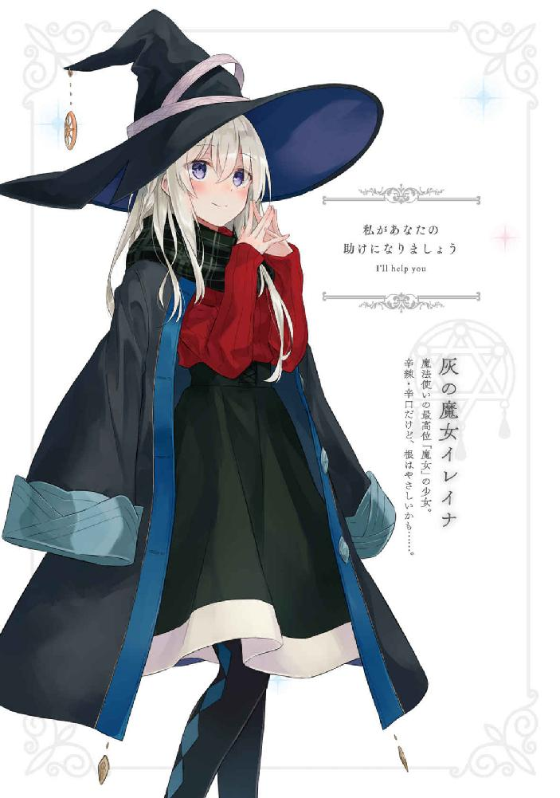
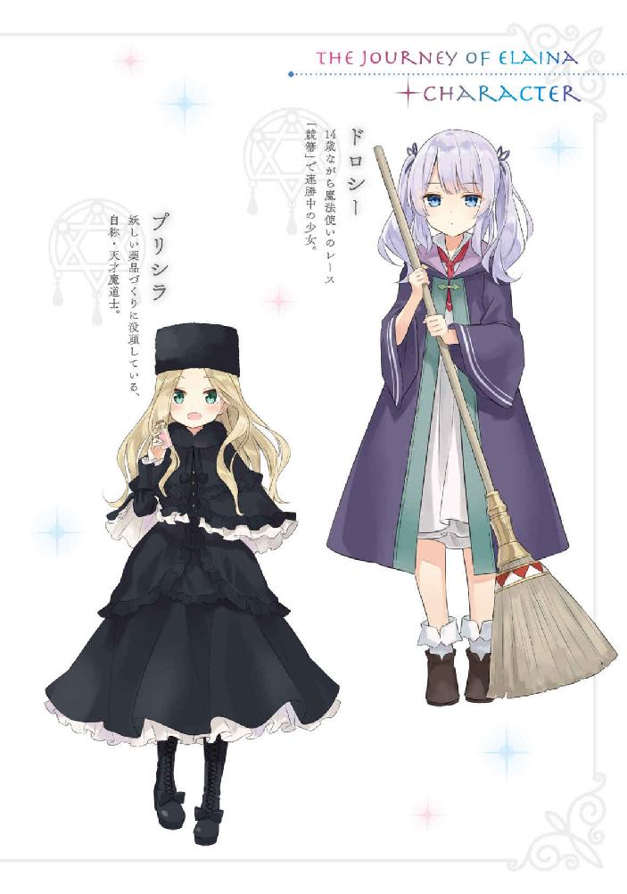
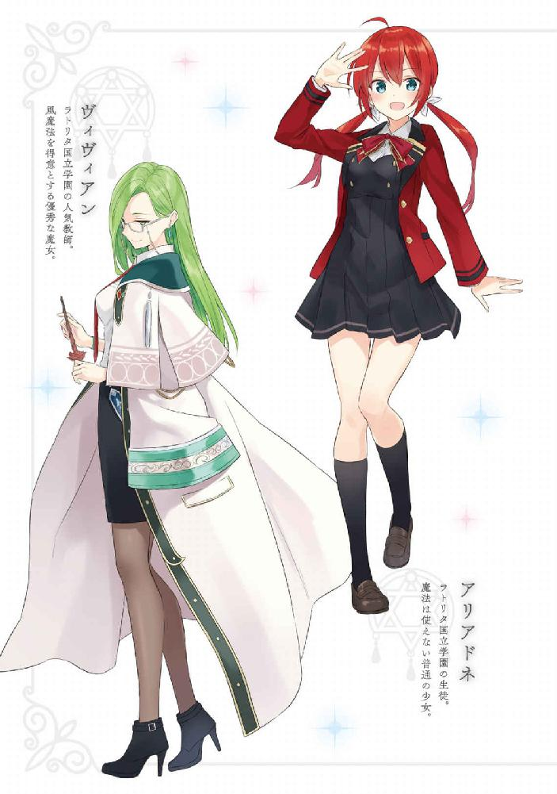
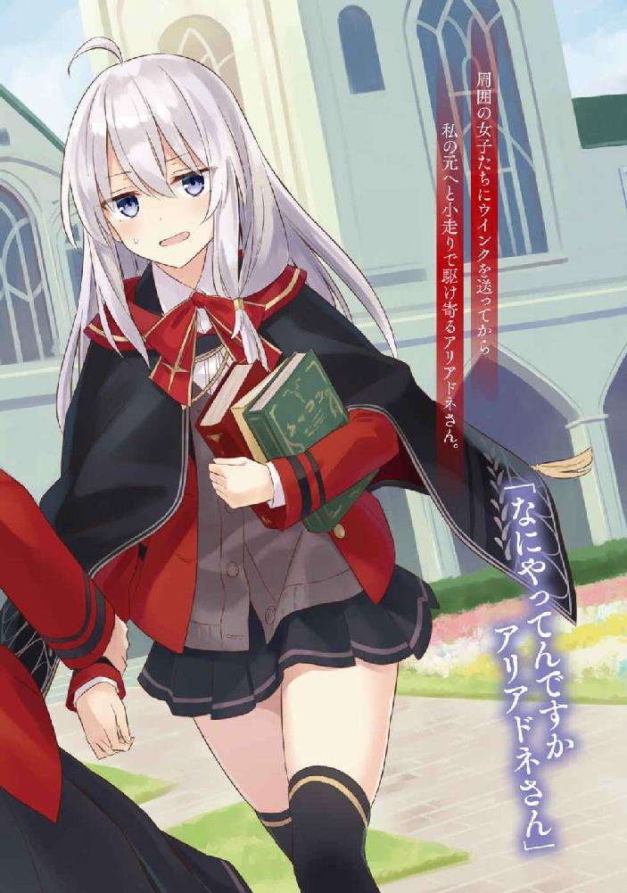
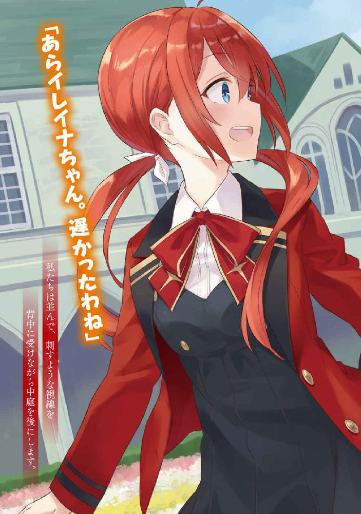
魔女の旅々６
白石定規

本書に掲載されているコンテンツの著作権等の知的財産権およびその他すべての権利は、ＳＢクリエイティブ株式会社または正当な権利を有する第三者に帰属します。
本書の内容を権利者の許諾なく複製・複写・翻案・放送・出版・データ配信（送信可能化を含む）などすることはできません。
カバー・口絵 本文イラスト
あずーる
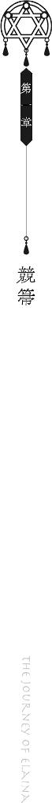
この街の景観は少し異質で、どこか特殊な風習を持ち合わせていることは、よそから来た人にとっては一目瞭然のことといえるでしょう。
ここはわたしの生まれ故郷。
レースの街と呼ばれています。
一部の建物の屋根が奇妙な弧を描きながら湾曲していることも、あるいは、路地の真上を網のようにロープが伝っていることも、それらの奇妙な光景が街の中をぐるりと這いまわっていることも、この国で生まれ、育ったわたしにとっては、ただの些末な街の風景でしかありませんが、きっとこの国に初めて来た人は、その奇妙極まりない光景に目を奪われて、瞳をきらきらと輝かせるものなのかもしれません。
わたしの隣を歩くイレイナさんも、その一人のようでした。
「なるほど......つまりあのロープに当たったら即時退場となるわけですか」ふむふむと平静な様子を取り繕いながらも、若干心躍っているようにも見えます。
わたしはイレイナさんに頷いていました。
「そーゆーことです。だから騎手たちはロープにあたらないようにうまいことほうきを操縦して飛んでます」
「でもあまり高いところを飛んでしまっては魔力を余計に消耗しますよね？」
「ので、みんな基本的にはスレスレの位置で飛んでます」
「ほう......」
「それと魔法による攻撃も禁止です。このレースは単純な速さだけを競うレースなのです」
「なるほど......」
イレイナさんが口をぽかんと開けながら頷いた直後に、わたしたちの真上をほうきに乗った魔法使いたちが通り過ぎていきました。
鋭く風を切るように空中を走り、湾曲した屋根に当たらぬよう──けれどギリギリのところで旋回し、街の向こうへと消えていきます。練習中の選手たちの姿がそこにはありました。
これがきっとこの街がレースの街と呼ばれている所以なのでしょう。
魔法使いたちによるほうきを用いたレースがこの国では現在、大流行していました。国のあらゆる人たちが、魔法使いたちのレースの勝敗に金をつぎ込み、結果に一喜一憂するだけの、言い換えてしまえば要するにただの賭博なのですけれども。
ともかくレースの国はレースの国らしく、そういった行事が盛んに行われているのです。
イレイナさんは空の上で争う魔法使いたちを見送ったあとで、わたしに向き直り、一言、笑いかけるように言いました。
「で、私に頼み事って何ですか？」
わたしはその言葉に、端的明瞭に答えます。
「......レースに出てみる気はありませんか」
わたしと、一緒に──と。
ほうきを用いたレースを総称して競箒と呼びますが、わたしはその騎手──要するにそのレースに出場する選手の一人でした。
こんなことを自分で言うのも中々恥ずかしいものがありますけれど、わたしはその中でもそこそこ有力でそれなりの実力を兼ね備えていました。
なんといっても最年少ですし。プロデビューしてから九連覇を果たしましたし。
ちょっと調子に乗ってしまってもそれは仕方のないことなのではないでしょうか。けれど、そんな若くて優秀な鼻つまみ者の鼻っ柱をまさしくへし折りたいと思うのが頭の固い大人たちなのです。
「今度のレースはいつもと違った趣向のものになる」
毎週末行われるレースのために、わたしがエントリーをしようと会場に赴いた際に、受付の男性に、突然そのようなことを言われました。
青天の霹靂と呼ぶに値する言葉を、叩きつけられました。
「競箒五十周年を記念して、今度は二人一組でのレースにする予定だ。よってエントリーも二人で行ってもらう」
つまり。
「もう一人いれば、君もエントリー可能だ」
ということ。
競箒の選手として登録されているのは現在十一名。この国で魔法使いとして活躍している人数と全く同じです。そして、現在エントリーが完了しているのは五組。
つまりわたしは十連覇をかけたレースに参加する資格を与えられなかったのです。
レースで十連覇をすれば、選手にはその賞金が大量に支払われます。今まで誰も成し遂げたことのない偉業です。
おそらくは、若いだけの小娘がそれを成し遂げようとしていることが気に食わないのでしょう。
だからこんなにも強引な方法で、結託して、わたしの出場を止めようとしている──。
「あらあら。あなたもレースに参加するつもりですの？」
受付で立ち尽くすわたしを嘲笑うように、後ろから声をかけられました。
振り返らずとも、その棘を刺すような声が誰のものかは分かっていました。
「......シェリー」
「あ？ さんをつけなさいよ小娘が」彼女は苛立たしげに言いました。「あなた、エントリーの締め切りは今日までですわよ？ 今更のこのこと現れて参加なんてできるわけがないじゃないの。諦めなさいな」
振り返ってみれば、勝ち誇った彼女の顔がありました。
わたしがレースに参加するまでの間、常にトップとはいかないまでも、大抵のレースで勝ち続けてきた彼女にとってわたしの存在ほど疎ましいものはないでしょう。
ゆえに彼女は常日頃からわたしを目の敵にしてきましたし、レースでわたしが勝ち続ける度に呪詛のように恨み言を吐いてきました。
彼女にとって今のわたしほど面白いものもないのでしょう。
「ああ愉快だわ。とても愉快。あなたのいないレースなんてとてもとても、楽しみで仕方ないわ」
くすくすと、彼女は笑い、そしてわたしの肩を叩きました。「まあ、せいぜい観客席で見ているといいわ。わたくしが勝つさまをね？」
「............」
「............」
わたしとしばし睨み合ったのちに、シェリーは「ふん」と鼻を鳴らして、そのまま練習のためにレース場へと入って行ってしまいました。
わたしも、遅れて歩き出しました。
レースに参加するための味方を探すために。
「............」
デビュー直後から周囲に疎まれていることは何となく察していました。
平均年齢二十五歳前後のレースにぽんと現れたのが十五歳で、しかもデビュー戦でいきなり一位をもぎ取って、それ以来誰も追いつけていないのですから、もしもわたしが逆の立場だったとするならば相当に妬ましく思ったはずです。
国中がわたしの登場に沸くなかで、同業者やレースの運営側から煙たく思われているのを感じないほどわたしも鈍感というわけではありません。
けれど。
けれど、まさかこんな強引な方法を使ってくるなんて、誰が想像できるでしょうか。
こんな風に連勝を止めさせられるなんて。
そもそもこの国には魔法使いは十一人のみ。つまり追加でエントリーするにはよそから来た魔法使いを捕まえるしかないのです。よそから来ていて、ほうきの扱いに長けていそうな魔法使い。
果たしてそんな人が都合よくわたしの前に現れてくれるでしょうか......。
「あ、ちょっとそこのあなた。どうしたんです？ 暗い顔をしていますけれど。何かお悩みごとですか？」
とぼとぼと歩き続けるわたしに突然声をかける人がいました。
灰色の髪を伸ばした女性でした。黒のローブと三角帽子を身にまとっていて、見れば胸元には星をかたどったブローチがあります。歳は私より少し上程度でしょう。
「よかったら私が占って差し上げましょうか？」道の端に水晶を置きながらちょこんと座り込んでいる彼女はどうやら占い師のようでした。「私の占い、よく当たると評判なんですよ」
「............」
「むむむむむ......」頼んでもいないのに彼女は水晶に手をかざして占いを始めました。「あーなるほどなるほど。分かりましたよ私。はい完璧に分かりましたよ。あなた今、悩みを抱えていますね？ どうです図星でしょう。私の占いはよく当たるんです」
見りゃ分かるでしょ。
「............」
「あ、占い料一回金貨一枚です」
「ぼったくり......」
「私魔女なので占い料は高いんです」
「......魔女？」
あれ？ 魔女？ 魔法使いの最上位の？ あの魔女ですか？
「そうですよ。ほらこのブローチ見てください。ね？ 魔女でしょう？」
そこまで言われてようやく気づきました。そういえばローブを着ているのも魔法使いだからですし、よく見れば魔女の証である星をかたどったブローチがあります。ぼうっとしていたせいで気づけなかったようです。
「さあさあ。金貨払ってください。さあ」片手をわたしに差し出してお金をせびる魔女さん。
この人が協力者になってくれれば──レースに勝つことも夢ではないのではないでしょうか。
だからわたしは、
「............」
ぎゅっ、と彼女の手を、両手でつかみ、そして見つめました。「あの......お願いがあるのですけど......」
「えっ」
わたしの言葉に彼女はあからさまに狼狽したようでした。
目を白黒とさせながら彼女は上ずった声をあげました。
「え、えっ？ いや、その......お金がないから身体で払うということですか......？ すみませんそういうのはちょっと専門外ですので......」
なんかよく分からないことを仰っていましたが無視しました。
○
歳の頃は十五歳程度といったところでしょうか。
とてもとても薄い紫の髪を頭の横のあたりで二つに括っている彼女は、それをふらふらと揺らしながら首を垂れて、「一緒にレースに出てください」と改めて私に頼み込んできました。
きっかり三秒程度、頭を下げたあとで、鮮やかな蒼の瞳をこちらに向けます。
彼女は自らをドロシーと名乗りました。
今度のレースに出るためには、一緒にエントリーできる人が必要なのだとか。そのためには、確かな実力を携えている魔法使いの協力が必要不可欠だそうです。私のことですか？ 照れますねえ。
ドロシーさんはにやける私に反して真剣な顔をしておられました。
「レースに勝てばお金が少し貰えます。優勝金です」
「ほう」
「もしも協力してくれるのでしたら、そのお金はぜんぶイレイナさんにお渡しします」
つまりお金で私を釣るつもりですか。残念ながら私はそんなに安い女ではありませんよ。
というか、
「それではあなたの収入がなくなってしまうのでは？」
「ご心配なく。今回、わたしが勝った場合は十連勝になりますので、優勝金のほかにも賞金がいっぱい貰えます」
「なるほどそちらを私にください」
「それではわたしの収入がなくなってしまうのでは」
「レースに出られなければどのみち収入はゼロじゃないですか」
「出てくれないんですか？」
「まだ決めかねてます」
お金が貰えるというのは美味しい話ではありますけれど......。
まだ何とも言い難いものがあります。話を聞き齧っただけで、はいそうですかじゃあ参加しまーす、などと頷いてしまうのはあまりにも不用心であるように思えるのです。それこそ安い女と見られてしまうでしょうし。
「そこをなんとか......お願いします......。わたしと一緒に出てください......」彼女は三度、深く深く頭を下げました。「どうしても、わたしはこのレースに勝ちたいんです......。わたしは、この国の悪い大人たちにどうしても負けたくないんです......！」
私が悩んでいることを察したのか、背中を押すように、彼女は自らの身の上を語り始めました。
それは彼女が競箒の選手になった当初から今に至るまでの顚末。
事情を聴けば聴くほど、それはとても不合理な物語でした。
最年少で、才能を持ち合わせていて、自分でもそれを分かっていて、当然のように周りの大人から疎まれて──けれどそれも理解している。
なんだかとっても。
とっても、どこかで聞いたことのあるような話です。
「あなたはレースに勝ってどうしたいんですか？」
興味本位で私は尋ねていました。
その言葉に彼女は迷うことなく、ただ一言だけ、
「どうしても勝ちたい人がいるんです」
と答えました。
つまりは彼女は、ただ目的のために努力していただけなのに、それなのに周りから疎まれてしまっているということなのでしょう。悪いことなど何もしていないのに、若いからというだけで、大人たちに潰されそうになっているだけなのです。
それはそれは。
なんとなく、気のせいかもしれませんけれども、昔の私の境遇に近いものがあるように感じました。感じてしまっていました。
「いいですよ」
だから私は、なんとなく、彼女の頼みに頷いていました。
「私があなたの助けになりましょう」
○
「おお。よくペアの魔法使いを連れてこられたな」
ドロシーさんに連れられて私が競箒の会場とやらに赴くと、受付の男性が驚いて迎えました。
受付の男性のみならず、練習を終えて戻ってきた選手たちも驚いているようで──むしろ魔法使いの彼女たちは嫌悪感を露わにしながら、私の横を通り過ぎる度に「何この女......」と吐き捨ててすらいました。
「はあ？ ふざけないで！ 誰よこの魔女！ こんなのの参加認められるわけがないでしょう？」
何ならやたらとヒステリックに叫ぶ魔法使いすらいました。
嫌われてますねえドロシーさん......。
しかし周りの人間から敵意むき出しの視線を浴びせられるこの感覚は何だかとても懐かしいものがありますね......。
「わたしも出場しますので。エントリー、させてください」ぐい、と強気に出るドロシーさん。
「まあ参加するのは構わんぜ。ルール通りもう一人連れてきたんだからな」
受付の男性は事務的に言いながらも、受付用紙を差し出してくれました。
私が用紙を記入する最中、真横にずい、と来る人影がありました。ヒステリックに叫んでいた魔法使いさんです。
「............」至近距離から彼女は私を睨みつけます。「......あなた、レースの経験は？」
「ありませんけど」
「へえ......。だったら、今回のレースでこの小娘と一緒にやって恥をかかないようせいぜい気をつけなさいな。勝つのは私たちなのですから」
私が未経験者だと知って余裕が生じたのでしょうか。それとも私もドロシーさんと同じく若者だから侮られているのでしょうか。
別にどちらでも構いませんけれど。
しかし何はともあれ、ここまで舐められてしまっては、私も手を抜くことは許されませんね──。
私はその場にいる魔法使いたちを一瞥しながら、言いました。
「あなたたちもせいぜい気をつけてくださいね？ 今回のレースで小娘二人に蹂躙されないように」
私の言葉に面白くなさそうに顔をしかめる魔法使いを無視し、私たちは練習へと繰り出しました。
レースに参加する魔法使いたちは、ほうきを会場に預ける決まりになっているようで、ドロシーさんは慣れた様子で備えつけのロッカーから自らのほうきを引っ張り出して乗りました。
「さ、乗ってください」
自らの背中の向こうに親指を差し向けるその仕草はなんだか若干ワイルドですらありました。
「......どうも」
私は彼女の後ろに腰を下ろします。
そしてこれから、私たちの特訓が幕を開けるのです。
まあ私のような魔女が一緒だったら、まさしくこのほうきは大船のようなものなのですけれどね。
「きゃああああああああああああああああああああっ！」
可愛らしい叫び声が街の上空にはこだましておりました。勿論私はそのような声をあげることはないので私でなくドロシーさんのものです。
「あああああああああああああああああああああああっ！」
こっちは私のものです。可愛くはありませんね。知ってますとも。
二人仲良くほうきから落ちて二人仲良くロープに引っかかって宙づりになりました。
私たちはレースの練習中だったはずですが。
端的明瞭に申し上げると。
ぜんぜん上手くできませんでした。なんだこりゃと呆れてしまうくらいに酷い出来栄えでした。だめだこりゃと匙を投げてしまえるくらいにくそでした。
大船とは何だったのか。大船というよりこれでは泥船もいいところなのでは。
威勢よく啖呵切ったのに何なのでしょうかこの情けなさは。
「......イレイナさん、もしかしてほうきの操縦、下手くそなんですか？」洗濯物と一緒にぷらぷらとロープにぶら下がりながらドロシーさん。
無礼な。
「私は魔女ですよ？ 下手なわけないじゃないですか舐めてるんですか」ぷらぷらと揺られながら私はぷんすか怒りました。
「いや......でも、わたし一人ならもっと上手く飛べますし」
「それを言うなら私一人でももっと上手く飛べますけど」
しかし不思議なことに、ドロシーさんのほうきを使って、私たち二人が並んで飛ぶとまるで上手くいかないのです。
今しがたそうなっているように、ほうきが突然制御不能になって、二人仲良く落下してしまうのです。一体何が原因なのでしょうか......。
「もしかしてほうきがダメなのでしょうか......二人乗りに適してないとか」ドロシーさんは自らの唇に指を添えて、んー、と唸りました。「......イレイナさん。よかったらイレイナさんのほうきを」
「あっ。私のほうきは一人乗りですのでダメです」
「ひどい」
「......というより、私のほうきは旅のために使っているものですから、できればレースなどには出したくないんですよ」
それに、競箒に使うほうきは競箒の会場に預けるしきたりになっているみたいですし。
ならば尚更お断りというものです。
「............」ぷらぷらと揺られながらドロシーさんは、「出したくないって、なんだかほうきを人みたいに扱うんですね」とくすりと笑いました。
結局その日は二人乗りの練習に明け暮れましたけれど、てんでだめでした。
一体何が悪いのでしょうか......？
「もしかしてイレイナさんが重いから......とか？」
「へし折られたいんですかあなた」
○
彼女に協力してあげることに、私にも少なからずメリットはありました。
「イレイナさんは旅人なのでしょう？ 週末のレースまでの間、よかったらうちに泊まりますか？」
彼女のほうからそのように提案してくれたのです。
ついでに、
「美味しいごはんもありますよ」
とか、
「お風呂広いですよ」
だとか、
「お部屋ひとつ余ってますから、快適なベッドで一人眠れますよ」
などと私をあの手この手で誘惑してくるものですから、私はあっさりと篭絡されて、結局ほいほいとついていくことになりました。安い女じゃないと独白したことをここに訂正しておきます。
「どーぞどーぞ。ここが我が家です」
そのように言って彼女が案内してくれたのは、街角にある集合住宅。
よくある中流階級の家がそこにはありました。古すぎることもなく、けれど目新しさもない建物が、その国の風景の中には溶け込んでいました。玄関口からはいって、階段を上がった二階の一室が彼女の家であるようです。階段を上がった先で彼女は、「ママ、ただいま」と鍵を開けて部屋に入りました。
「あらお帰り」扉の向こうで薄紫の髪の女性が、笑顔で出迎えてくれます。「......そちらの方は？」
「イレイナさんです。今度競箒で一緒に出ることになりました」とドロシーさん。
「あら......」
彼女のお母さんは、一瞬、その表情を曇らせたように見えました。
しかし私が捉えたその表情はすぐに消えてしまいます。「ママ、それより今日は起きていて大丈夫なのです？ お薬飲みました？」ドロシーさんのその言葉が、彼女のお母さんを笑みに戻していましたから。
ほんの少しくたびれた笑顔を浮かべながらも、彼女は、「大丈夫よ。きょうは気分がいいの」と答えます。触れれば溶けてしまいそうなほどに弱々しい白い肌の彼女は身体も細く、瘦せているというよりはやつれているように見えます。
何らかの病を患っているのは明白でした。
「待っててくださいね。今すぐご飯にしますので」
家の中でドロシーさんは活発に動き回っていました。てきぱきと食材を準備し、エプロンを着て包丁を握ります。
背の小さい彼女が台所に向かう様子は、お母さんのお手伝いをしている娘そのものでした。
その母親はといえばしかし、彼女の背中を眺めながら目を伏せているばかりです。
「............」
ともあれ、私はこうして彼女らの日常へと足を踏み入れることとなったのです。
●
その翌日からわたしたちは、特訓の日々に身を窶しました。
わたしたちが経験した特訓の日々とは、つまり、朝、目が覚めたら練習に繰り出し、ボロボロになってそのまま家に戻るだけの、なんともあられもない日常であったと記憶しています。
とにもかくにも上手くいかないのです。
無事に空を飛ぶことができても、しばらくしたらほうきは力を失って真下へと落下。わたしたちはロープに無様にぶら下がってしまいます。
何日もかけて何度も何度も何度も何度も挑戦してみましたが、結局、得られた結果はロープにみっともなくぶら下がるだけのみっともなくて格好悪い顚末のみでした。
「ほうら！ やっぱりまともに飛べないじゃない！ ふふふ滑稽ね。滑稽だわ。結局レースに参加しようとしまいと、結果は変わらないのよ！」
練習に明け暮れるわたしたちを見下ろしながら高笑いを浮かべる人影がありました。
「......シェリー」
「あ？ さんをつけなさいよ小娘が」ぺっ、と彼女は唾を吐き捨てました。「あなたたちの敗北は決まったも同然ね。本番でもその無様な姿を見せて頂戴」
言いたい放題にわたしたちを上から罵ったのちに彼女は練習へと戻ってしまいました。
勝負前から勝ち誇ったその態度がとてもとても腹立たしくて仕方ありませんが、しかしわたしたちの置かれた状況は確かに、彼女が嘲笑うのはもっともらしく思えるほどにみっともないのは確かでした。
ただただわたしは惨めでしかありませんでした。
辛くて辛くて、悔しくて仕方ありませんでした。
「......どうして？ どうしてイレイナさんと二人だと上手くいかないのです......？」
その疑問に対する答えは、残念ながらわたしの中にはありませんでした。
「............」
わたしの横で、イレイナさんはただただ空を見上げるばかりでした。魔法使いたちを、イレイナさんはじっと見上げたまま、黙りこくっていました。
何を考えているのでしょうか。
何も考えてはいないのでしょうか。
悩んでいるのは、わたし一人だけなのでしょうか。
わたし一人では上手くいくのです。一人のほうが速く飛べるのです。
イレイナさんが一緒になると、まるで足枷がつけられるように、どうしても上手くいかないのです。この不可思議な現象は、一体何が原因だというのでしょうか？
練習を終えたある日のことです。わたしとイレイナさんはぼろぼろになりながら家に戻り、食事を摂って、その日の終わりをダイニングで迎えようとしていました。ママは既に寝ていますので、ダイニングは二人きりです。
「明日の練習は午後からにしてほしいです」
食後にお茶を飲みながら、わたしはイレイナさんに言いました。
「？ 何かあるんですか？」
「アルバイトしてきます。ので、午前中は無理なんです」
きっぱりとわたしが言うと、イレイナさんは「まあ、いいですけど......」と頷いてくれました。
結局、その日はそれからいくらかの雑談を交えたあとで、お互い、部屋に戻って終わりました。
「............」
夜が更けて、私の部屋が暗闇に包まれた頃。
まどろみに溶け込もうとしているわたしの耳に、雑音が混ざりました。隣の部屋から──イレイナさんが現在泊まっている部屋から、話し声が聞こえたのです。
『ええ──ですので、それが──』
誰かとお話をしているのでしょうか？ 途切れ途切れで聞こえるその声は独り言とは到底思えませんでした。
『──そうですね、では......』
しかし、この国に来て間もないはずのイレイナさんが、誰かを招いているという事実はいささか奇妙に思えました。
イレイナさんはわたしと出会って、それからはずっとわたしと一緒にいたはずです。少なくとも、旅に同行者がいるということも考えられません。
イレイナさんに知り合いがいるとするならば、わたしと会うより以前に、既に誰かと親しい間柄にあった、ということになるのではないでしょうか。
『──ほうきに、細工を──』
ぼそりと隣の部屋から聞こえたその言葉は、いやにはっきりと、わたしの耳には届きました。
ほうきに細工。
そのときわたしは気づいたのです。
わたしはイレイナさんと会ったときから、次回のレースに出るということになったときから、ずっとイレイナさんに対して勝手に信頼を寄せてはいましたが。
しかし、本当に信じてよい人なのでしょうか？ 彼女は本当にただの旅人なのでしょうか。
色々なことが考えられると思うのです。
たとえば、イレイナさんが、競箒の運営側の息のかかった人物だった、とか。たとえば、シェリーに頼まれてわたしの味方の振りをしている人物、とか。
──彼女は、本当に信頼するに値する人物なのでしょうか。
わたしの頭にぐるぐると渦巻いた悪い憶測は、それからしばらくわたしの眠りを妨げ続けました。
その翌日の早朝、まだ誰も起きていない時間に目を覚ましたわたしは、二人分の朝ご飯を用意してから、家を出ました。
そのままアルバイトに出かけました。
平日はそのように暇さえあればアルバイトをして日銭を稼いでいました。「私の貯金、まだそれなりにあるから、別にアルバイトしなくてもいいのよ？」などとママは言ってはくれますが、しかし、選手生命が途絶えたときに働き口がなければいつかはお金は底をついてしまうと思えるのです。
ほうきの特訓にもなるため、お仕事は新聞配達をしていました。街中に張り巡らされたロープを避けて飛びながら、わたしは新聞を各々の家にポイポイと投げて回ります。
だいたい数時間程度そんな風に飛び回ったあとは、お医者さんのところに赴きます。
「いつもの、ください」
わたしほどになれば既に町医者の常連といえました。「いつもの」といえば、診療所のおじさんが「はいよ」といつもの薬を取り出してくれます。
「どうだい、最近は」おじさんは薬を包みながらわたしを見ました。
「どうと言われましても」困ります。「まあ、母の調子は相変わらずです。お金に余裕があれば治してあげたいと思うのですけど......」
「そうかい......まあ、無理はせんようにね」
「......ええ」
でも無理をしなければ病を治せないのならば、十連覇は絶対に果たさなければならないでしょう。
それを叶えるには、わたしが置かれた現状はあまりにも不安定ですけれど。
アルバイトを終えたあとで、わたしは一旦、家に戻りました。
けれど、そこに既にイレイナさんの姿はありませんでした。「昼に戻るから待っていてとメッセージを置いておいたはずなんですけど......」作り置きの朝食と一緒にカードを置いたのに気づかなかったのでしょうか？
「イレイナさんなら、練習前に用事があるとか何とかで先に行ったわよ」
怪訝な顔を浮かべているわたしに、ママは言いました。「たぶん会場に行ったらいるんじゃないかしら」
「............」
一体、何をしに？
わたしの頭の中では、昨日の出来事がぐるぐると渦巻いて、悪い予感ばかりが働いていました。
わたしは困った事態に陥った瞬間から──イレイナさんと偶然会った瞬間から、どことなく、イレイナさんに信頼をよせていました。
しかし本当に信頼に値する人なのでしょうか。
今は、それすらも分かりません。
わたしは結局、迷いながら、重い足取りで競箒の会場へと赴きました。
そして見てしまいました。
イレイナさんが、シェリーと顔を合わせて笑いあっているところを。
談笑にふけっている風景を。
そして。
その手にわたしのほうきが握られているところを。
「......やっぱり、そうだったんですか......」
物陰からわたしは、その背中を見つめていました。もしかしたら悲しげな表情を浮かべていたかもしれません。
きっと最初からそういうことだったのでしょう。
イレイナさんは、この国のほかの選手たちと裏で会っていたのでしょう。
きっとわたしのほうきに細工をして、飛べないように仕向けたのでしょう。
だから、わたしは飛べなくて──だから、十連覇ができなくなる。
そういった仕組みだったのです。
他人なんて、信じなければよかった──わたしの胸の深いところに生まれた棘は、わたしの心をちくちくと刺して止むことはありませんでした。
○
翌日の朝は予告通り、私が目覚めたときには既にドロシーさんの姿はありませんでした。
寝ぼけ眼をこすりながら私がダイニングへと赴くと、そこには作り置きの朝食と、『食べてください。昼には戻ります。待っててください』などというメッセージが記されていました。
昨日既に言われていましたから分かるんですけど......親切ですね。
「おはようございます」
ところでダイニングには既に私以外に、そのメッセージを読んでいる人がいたようです。
彼女のお母さんが、椅子に座って、しずしずと食事を摂っておられました。ドロシーさんのお母さんは私に気づくと、「おはようございます」と柔らかく笑いました。
「あの子なら今、お仕事中よ」
彼女の動向を私が気にかけていることが分かったのでしょうか。見透かしたように彼女はそのように言いました。
「お仕事は何を？」彼女の向かいに座りながら私が尋ねると、彼女は窓の外を静かに指差しました。
そこには、ロープが壁から壁へと伝う街の情景があるだけでした。
けれど、その中をかいくぐるように、ひとつのほうきが一瞬、通り過ぎていきました。かと思ったら直後に向かいの窓にポイと新聞紙が落とされていくのが目に映ります。
なるほどなるほど。
「新聞配達ですか」ほうきの操縦の特訓にはおあつらえ向きといえますね。
「そうね。あの子、小さい頃からああして、ほうきを上手く扱えるように練習していたのよ──だから今のあの子があるの。今やあの子を知らない者はこの国にはいないでしょうね。最年少で九連覇を果たした競箒の選手なんて、とても珍しいもの」
ドロシーさんのお母さんは、窓の外を眩しそうに見つめていました。「あの子の努力をこの国の多くの人が知っている。だからこの国の多くの人は、あの子を心から応援している。けれどね、若く多才な子は、いい意味でも悪い意味でも、注目されてしまうものなの」
「でしょうね」
ちょっと調子に乗っただけで生意気だの何だのと難癖つけられますからね。よく分かりますとも。ええ。
「あの子を応援している人の中には、心のどこかであの子が失態を犯すことを望んでいる人が少なからずいるはずよ。レースに出ているほかの選手たちと同様にね、上がり調子がいつまでも続くわけがないと、どこかで彼女が折れることを期待している」
「......そうはなってほしくないですね」
「ええ──だから、あなたには、あの子の良き協力者になってほしいと思っています」
「............」答えることはしませんでした。「ところであなたは何の病気を患っているんですか？」
べつに隠していたつもりはないのでしょう。彼女は「ああ」と思い出したように相槌をうったのちに、
「心臓の病よ。薬がないとベッドから起き上がることもままならないくらいに進行している酷い病」
「............」
「だから、あの子は私の家事を代わってくれて、日銭を稼いでくれている。私はこんな身体で、もうほうきで飛ぶこともできない役立たずだから」
「......？」と、私はそこで、はたと気づきました。
ダイニングの隅に、数多くのトロフィーが飾られていることに。
一つや二つなどではありません。数え切れないほどのトロフィーが、煌々と部屋の片隅を照らしていました。
そのそばには、一枚の写真が大切そうにかけてありました。
見るからに引っ込み思案な女の子と、そして、ほうきを片手に持って、こちらに笑顔を向ける一人の女性の姿が、そこにはありました。
幸せな瞬間を切り取ったような、美しい写真でした。
「それ、あの子と私の昔の写真よ」
私の視線を追いかけて、彼女は言いました。
「──私も競箒の選手だったの。大昔の話だけれど」
それから彼女は、ぽつり、ぽつりと、とある昔話をしてくれました。
それはとある一人の選手の話でした。
とある選手はほうきを扱った競箒のレースにて大活躍していた若手の魔法使いでした。娘を育てる傍らで、彼女はレースに出続けて、それでいて勝ち続けました。
もちろん負けることもありましたが、しかし、彼女は何度もレースに出場し、勝利をもぎ取ってきました。
けれど、歳を重ねるごとに、時間が経つごとに、彼女の勝利は厳しくなっていきました。
彼女は心臓に病を抱えていたのです。それを覆い隠しながら、彼女は人々の前で活躍をし続けました。そんな彼女の姿に、娘はいたく感動していたそうです。
「いつかママみたいになりたい」
なんて、ありきたりな言葉を吐くほどに。
厳しくなりつつある現実の中で、彼女はもがき続けました。勝利を勝ち取るために戦い続けました。そして、彼女は誰も成し遂げたことのない偉業に手をかけました。
競箒の九連覇。
レースに出続けた結果、勝ち続けた結果、彼女は十連覇へと目前に迫ったのです。誰もが彼女の勝利を信じました。
しかし。
「十連覇をかけたレースの最中にね、この病気が発症したの」彼女は胸に手を当てて、言いました。「私はあえなくほうきから落下。結局、十連覇は逃したわ」
「......そして今、あなたの娘さんが、あなたの意思を継ごうとしている、ということですか」
初めて会ったときにどうしても勝ちたい人がいる──なんてドロシーさんは言っていましたけれど。
そういうことでしたか。
けれど彼女はゆるりと首を振りました。「それだけじゃないの。あの子ね、今回の賞金で私の病気を治そうとしているの」
「............」
つまりドロシーさんにとっては、次のレースはすべてをかけた戦いでもあるのでしょう。もし負ければ、彼女はどうしても勝ちたかった人に負けたことになる。もし優勝を逃せば、母親の病気が治らないかもしれない。
彼女には最初から、選択肢は一つしかなかったのでしょう。
だから今も、絶えず、努力を重ねている──。
「ところで、さっきの言葉にまだ答えてもらっていないけれど」ふいに、彼女のお母さんは言いました。
「......何のことです？」
と私が首をかしげると、彼女は、
「ドロシーの良き協力者になってほしいと私は頼んだのよ」
と真っすぐに私を見つめます。
だから私も、彼女を見つめ返して差し上げました。
「答えるまでもありません」
私の答えも、最初から選択肢は一つしかありませんでしたから。
私はそのままドロシーさんを待つことなく、ふらりと会場まで赴きました。
待っていてとメッセージカードには刻まれていたような気がしますが、まあ細かいことはいいでしょう。
私は会場の中を突っ切って、ドロシーさんのほうきが置かれているロッカーへと向かいました。
「あらぁ！ 誰かと思ったら小娘のお友達じゃないかしら。何をしているのこんなところで。もしかして練習？ 練習に来ているの？ 下手くそなのに？」
途中で変なのに声をかけられました。
えっと......この人は、確か......。
「シェリー？」
「あ？ さんをつけなさいよどいつもこいつも舐めてるわね」ぺっ、と唾を吐き捨ててシェリーさんは私をじとりと睨みつけました。「で、何しにきたのかしら。あなた。お友達は？」
「............」
無視しました。
無視したうえで、「あ！ ちょっと待ちなさい！」などと私を追いかけてくる彼女を視界から遮断して、私はロッカーを開け、ほうきを取り出し、会場を出ようとしました。
けれど私を阻むように、彼女は目の前に立ちふさがります。
「......無視とはいい度胸ですこと」
低く響くその声に、私は目を伏せました。......怖かったからではありません。
ドロシーさんのほうきに目を注いでいたのです。
一見するとただ使い古されただけの、何の変哲もないほうきです。指でなぞってみればざらざらとした感触が指を伝います。柄はすべすべとしていて、指によく馴染みます。
けれど、目を凝らしてその柄をよく見れば、触れただけでは分からない程度の薄い亀裂が刻まれていました。
ほうきとは繊細な代物です。魔力を注いで魔法使いたちを浮かび上がらせることを可能にしますが、しかしこれに亀裂が入っていたり、穂先が枝分かれしていると、思ったように飛ばなくなってしまうのです。もしかしたら気分を害してほうきが飛ぶことを拒んでしまうのかもしれません。
事実、先日私がほうき自身に言葉を語らせた際、私のほうきは──彼女は言っていました。
『一人でならば乗れるのに、二人になると途端に乗れないということは、すなわちほうき自身に何らかの問題があると考えるのが自然でしょう。たとえば、何かの細工、とか』
ほうきに細工。
確かに。然り。
ドロシーさんのほうきには、紛れもなく、何者かが手を加えた痕跡がありました。
「これをやったのはあなたですか？」
私はつとめて優しく微笑みかけながら彼女に問いかけて差し上げたものですが、しかしシェリーさんは鼻を鳴らしながら、
「何のことかしらぁ？」
などととぼけるばかりでした。
「もう一度だけ聞きますね？ これをやったのはあなたですか？」
うふふ、と笑いながら私は再度問いかけます。
彼女はやっぱり笑うばかりで答えませんでした。
そのときでした。
「............」
私の背後で、物音がしました。
ちらりと視線をやると、少女の後ろ姿が見えました。
私と似たような髪色で、けれど頭二つに結ばれたその髪を揺らしながら、女の子は走り去ります。頼りなく、小さな背中をこちらに向けながら。
「............」
私はすぐに彼女を追いかけました。
ただし悪者を始末したあとで。
●
会場から逃げたわたしが辿り着いたのは、イレイナさんと初めて会った場所──なにも特別なことなんてない、ただの街角。
イレイナさんが数日前まで怪しい占いをしていたそこには既に誰の姿もありません。ただ人が通り過ぎるばかりです。
ただ、人々がわたしに怪訝な顔色を向けるばかりです。
「............っ。う......うう......」
わたし自身の瞳から涙がこぼれていたことに気づいたのは、そのときでした。情けない声がわたしから漏れて、惨めな涙が地面に落ちていました。
何が悲しいのでしょうか。
「何をしてるんですか？」
びっくりしました。
振り返ると、イレイナさんが眉をひそめて、わたしを覗き込んでいました。
情けない顔を見せまいとわたしは顔を背けますが、イレイナさんは、「......泣いてるんですか？」と、わたしの頰に手を添えて、それを妨げました。
わたしは再び顔を手で覆いました。
「............」覆われた視界の向こうで、イレイナさんが困った顔を浮かべているのが、なんとなくわかりました。「ドロシーさん。あなたはたぶん勘違いなさっているかと思います」
「勘違いなんてしてません」
「してます」
「してません」
「してますってば」
「......してないって言ってるじゃないですか！」びっくりしました。わたしでもこんな声は出せるんですね。「どうせイレイナさんだって、ほかの選手たちと同じようにわたしを陰で笑っていたんでしょう？ 年下で！ それなのに勝ち続けてるから生意気だからって！ 本当はわたしがどれだけ努力してるかも知らないで！」
「............」
「わたしだって何もせずにここまで来たわけじゃないんです！ 誰にも負けないくらい、誰よりもほうきで練習して、やっとここまで来たんです！ 気がついたら友達も、信頼できる人もいなくなっていましたけれど──それでも、留まることなくここまで辿り着いたんです！ どうして皆してわたしの邪魔をするんですか！」
「......私は違いますよ」
「違くないですよ！ あなただって、シェリーと一緒に笑っていたじゃないですか......！」
「............」
イレイナさんは、また困ったような顔を浮かべて黙ってしまいました。
わたしが困らせてしまっているのでしょう。
分かってはいるのです。
イレイナさんは、泣きじゃくるわたしの肩に手を添えて、一言だけ言いました。
「とりあえずほうきに乗ってください。練習、しましょう？」
「......いやです。もうしません」
「じゃあどうするんですか。このまま終わるんですか。それであなたは満足なんですか？」
「............」
わたしが答えあぐねていると、イレイナさんは呆れたようにため息を漏らしました。
そして。
「──ちょっと失礼しますね」などと、わたしの後ろに回り込んでから、平然と言い切ったのちに、わたしを両腕で羽交い絞めにしました。
「え、ちょっ......イレイナさん、何を──」などと流していた涙を忘れて戸惑うわたしを無視して、イレイナさんはそのまま膝を折ります。かくん、と支えを失ったわたしの身体は、イレイナさんの膝の上に留まりました。
ほうきに乗っているらしい、と気づいたのは、わたしたちの身体がそのまま宙にふわりと浮いてからでした。
「な、何をするんですか！ 離してください！ もう乗らないって言ったじゃないですか！」わたしはイレイナさんの上でじたばたと抵抗してみせましたけれど、彼女は「嫌です」と言うばかりでした。
「ああ、べつに嫌なら飛び降りてもいいですよ？ まあ、この高さから落ちたら無事じゃ済まないと思いますけど。下にはロープも何もありませんし」
それどころかわたしの耳元で脅し文句を囁いてくる始末ですらあります。
この人ほんとに性根が悪い......。
「............」ほうきの高さが街中の屋根と並んだあたりで、わたしは完全に諦めました。
ふわりと漂うほうきは、ゆっくりと競箒のレース場へと進んでいきます。このまま練習しましょう、とイレイナさんが言っているかのようです。
「魔力を注いでみてください」
イレイナさんは時折強引な人でした。わたしにそのように言い放った直後には、わたしの手をとって、ほうきを握らせていましたから。
「......でも、それではまた落ちちゃいます」
「そうならないように私がどうにかした、と言ってるんですよ」
「............」もはやここまで来ればわたしは言われるがままです。そもそもこの場で逆らって「あ、じゃあもういいですさようなら」なんてほうきから落とされてしまえば何も言えません。
だから、わたしは、迷いながらも、ほうきに魔力を与えました。
イレイナさんの魔力と、わたしの魔力が混ざり合ったほうきは、そのまま落ちる──。
なんてことはなく、綺麗にそのまま空を切って、走り続けてくれました。
街の空を駆けるわたしのほうきは、今までとはおおよそ比べ物にならないくらいの速さで、街の景観とすれ違っていきました。心地よい風は、いつしか濡れたわたしの瞳を完全に乾かしてしまっていました。
「触っただけで分かりました。このほうき、あなたのお母さんのものでしょう。随分と古くて、かなり昔から使い込んでいるみたいですけど──柄にヒビが入っていたせいで、ほうきが機嫌を損ねていたみたいです。二人乗りで弊害が出たのはそのせいでしょう」
囁くようにイレイナさんは、言いました。
「これからは大事にしてあげてくださいね」
わたしは、彼女に答えていました。
「ほうきを人みたいに扱うんですね」
なんて、また笑いながら。
○
レース当日になりました。
五十周年記念のレースだからか、もしかすると普段からこうなのか、会場から見える街の景観はまるでお祭りのように沸いているように見えました。
路上には人がぎっしりと詰め込まれるように溢れかえり、コース上の民家の窓はもれなくすべて全開で、そこから住民たちが顔を出して、レースの開始を待ち望んでいました。
「ははぁ......大盛況ですねえ」私はただその光景に目を剝くばかりでした。
「今日はいつもより人が多いみたいです」私の横でドロシーさんは慣れた様子で言いました。「そろそろ始まります。イレイナさん。行きますよ」
くい、と私のローブの袖をつまみ、彼女は私を引っ張ってレースの会場を歩きました。
スタート位置には既にほかの魔法使いたちが勢ぞろいしておられました。
さすがにレース直前まで私たちに構っている余裕はないようで、私たちを散々疎んでいた彼女たちはほうきの調整をしたり、あるいはふわふわとその場で漂ってウォーミングアップを図ったり、各々が各々のことをやっておられました。
もちろんレース直前ですから、彼女の姿もありました。
「シェリー」
ドロシーさんの呼びかけにびくりと肩を震わせて振り返ったのは、まさしくほうきに細工をして私たちの邪魔をしていたシェリーさんその人でした。
「......あ、あらぁ......ドロシーじゃない。どうかしたのかしら......」
明らかに先日までの威勢のよさが消え失せていました。意気消沈といえます。もしくは何かに怯えているともいえます。
「？ どうしたんです？ 今日はいつもみたいに怒らないんですね」怪訝な顔を浮かべるドロシーさんでした。
「え、ええ......今日はちょっと......緊張していますから......」シェリーさんの視線がちらりと私に傾きます。
「............？」
まるで別人のようになっておられるシェリーさんに首を傾げたのちに、ドロシーさんは、「まあいいです。今日のレース、頑張りましょうね」と微笑みかけてから歩き出してしまいました。
その場に取り残された私とシェリーさん。
「......頑張りましょうね？ シェリーさん？」
「......は、はい」まるで追い詰められた小動物のように怯えるシェリーさんでした。
私はそんな彼女を落ち着かせるように、彼女の肩に手を回してあげました。
「レース中の私たちは平等な立場ですから、本気でかかってきてくれても別に構いませんよ？」私は彼女の耳にぼそりと語りかけました。「けれどレースの外であのような汚い手を使うことは看過できませんね」
「あ、は、はい......申し訳ありません......」
「分かってますよね？ 今度あんなことをやったら......ね？」
ただじゃ済みませんよ──と私は囁いて、そしてドロシーさんの後を追いました。
きっと今後はシェリーさんもドロシーさんを脅したり、邪魔立てするようなこともないことでしょう。彼女にはきっちり痛い目を見てもらいましたから。
「......なにを話してたんです？」
こくりと首を傾けるドロシーさんに、私は笑いました。
「秘密です」
○
空に向けて放たれた一発の号砲が、レース開始の合図でした。
どきりと心臓が飛び跳ねるくらいにけたたましい音に驚き、逃げるようにスタート地点から六つのほうきが飛び去ります。
横一列に並んだ二人乗りのほうきたちは街の上を一直線に過ぎ去っていきます。私たちの真下では歓声が街の景色とともに流れていきました。
私たちのほうきの操縦はすべてドロシーさんに委ねられていました。私といえば後ろでほうきに魔力を注いでいるだけで、言い換えればただぼうっと座っているだけのようにも思えました。
私がそう感じてしまうほどに、そのように思えてしまうほどに、背中しか見えないドロシーさんは速く、凄まじかったのです。
彼女に追いつくことができる人は誰もいませんでした。
長い直線が終わり、カーブに差しかかったところでドロシーさんはほうきをぐい、と斜めに傾けて、青空を仰ぎ見ながらスピードを殺すことなくそのまま曲がり切りました。
振り向けばほかのほうきたちが徐々に離されていきました。
誰も彼女に追いつくことができないのです。
街の歓声は、彼女がゴールに近づくにつれて大きくなっていきました。人々が手を振っているのが見えます。民家の窓から、路地の真ん中から、人々の声が彼女の背中を押していました。
ゴール付近にドロシーさんの家がありました。
その窓から、一人、彼女のお母さんが、ゆっくりと手を振っているのが見えました。
たとえ同業者に疎まれようとも、たとえ誰かが邪魔をしようとも、しかし彼女を止められるものは最初からなかったのでしょう。
こんなにも彼女を応援してくれる人がいるのですから。
「イレイナさん」
ゴールを目前に控えたとき、ドロシーさんは振り返らず、呟くように、私の名前を呼びました。
けたたましい歓声のなか、絶え間なく流れる風の音のなか、しかしその声だけは、とてもとても、澄んでいました。
「ありがとうございます」
その言葉は何に対しての言葉だったのかは、分かりません。
けれど返す言葉はたった一つしかないでしょう。
「どういたしまして」
そしてレースは幕を下ろしました。
それは一人の少女の十連覇が達成された瞬間でもありました。
○
『なんと十連覇達成！ 素晴らしい！ この国始まって以来の成果です！』
司会者が人々をやたらと煽り立て、歓声は更に、更に大きなものになっていきました。もはや叫び声とも区別がつかないくらいに。
ゴールした私たちは、コースとして造られた街並みの上を、ほうきで漂い続けました。有名人にでもなった気分でした。街中が声援に包まれていましたから。
だから私たちは、それに手を振って応えながら、気づけば二人とも笑みがこぼれていました。
これで、ようやく。
「ドロシーさん」私は言いました。「やりましたね。これでお母さんの病気も──」
私が言いかけると、彼女は少し恥ずかしそうに、
「......ママから聞きましたか。......そうですね。これで、ようやく、ママも治療に専念できると思います。お金はたっぷり入りますし」
街中に手を振りながら、言いました。
まあ。
それはさておき。
「ところで優勝金のことなんですけど」
「え早速お金の話ですか......いやらしい......」じとりと目を細めるドロシーさん。
いえいえいえいえ。誤解をなさっておられるかと存じます。
「いらないと言おうとしたんですけど......」
「えっ」
「優勝金と、賞金の両方とも、あなたが持つべきです。私に報酬はいりません。お気になさらず」
「............」
ドロシーさんは戸惑っているようでした。ほんの少し嬉しそうに笑みを浮かべていながらも、眉はつり下がっています。「でも、それだとイレイナさんが......」
「私だって、病気の母親を抱えた少女からお金を巻き上げるほど畜生でもありませんよ」
事情を知るまでは彼女から優勝金を拝借しちゃおうかなー、なんて少し思っていたりもしましたけど、いえ、ほんの少しだけ思ってもいましたけど、何なら賞金も少しばかり頂いてしまおうかなとも思ってもいましたけれど。
彼女のお母さんと会ってからというもの、そういった気分は全くなくなってしまったのです。
「街で詐欺をしてたイレイナさんがそれを言うんですか......？」
「それはそれです」
というか私、そこまでお金に困っているわけでもありませんし。街でお金を稼いだこともその一端ですけれど。
別に無理をしてお金を貰わなくてもいいかなとも思えていました。もしかしたら優勝してしまったことで若干高揚しているだけかもしれませんけれど。
「私の気が変わらないうちにお金は使ってしまったほうがいいですよ」
「それはつまりすぐにママを治してあげなさいって言ってるんですか？」
「どう捉えて頂いても結構です」
私がよそを向くと、ドロシーさんはくすくすと笑みを漏らしました。
そこにレースで他者に圧倒的な差をつけて勝利した実力の持ち主らしさは全くもってありはしませんでした。
ただ一人の少女が、楽しそうに笑っているだけでした。
「イレイナさん」ひとしきり笑ったあとで、彼女はぽつりと語りました。「ママの記録を超えることが目標でした。ママの病気を治すことが目的でした。目標も目的も果たせました。これで満足です」
「............」私の目に、ドロシーさんの表情は清々しく見えました。「じゃあもうレースは引退ですか？」
「まさか」
彼女は笑いながら言います。「ママを超えて、一つゴールを果たしただけです。まだまだ終われません」
むしろ、ここからが新しいスタートなんです──と、彼女は言いました。
それはそれは。
なんとなく、気のせいかもしれませんけれども、どこか私の旅路に近いものがあるように感じました。感じてしまっていました。
だから私は、やはりなんとなく頷いていました。
「そうですね──」
そうして、ここからまた、始まるのです。
○
「ふふふ......」
ところでお金にがめつい私のような人間が優勝金はいらないなどと嘯いたのには理由があります。
その日、レースを終えてドロシーさんと別れたあとで、私はレースの会場に足を運んでいました。
レースをするためではありません。もちろん。
「これ、お願いします」
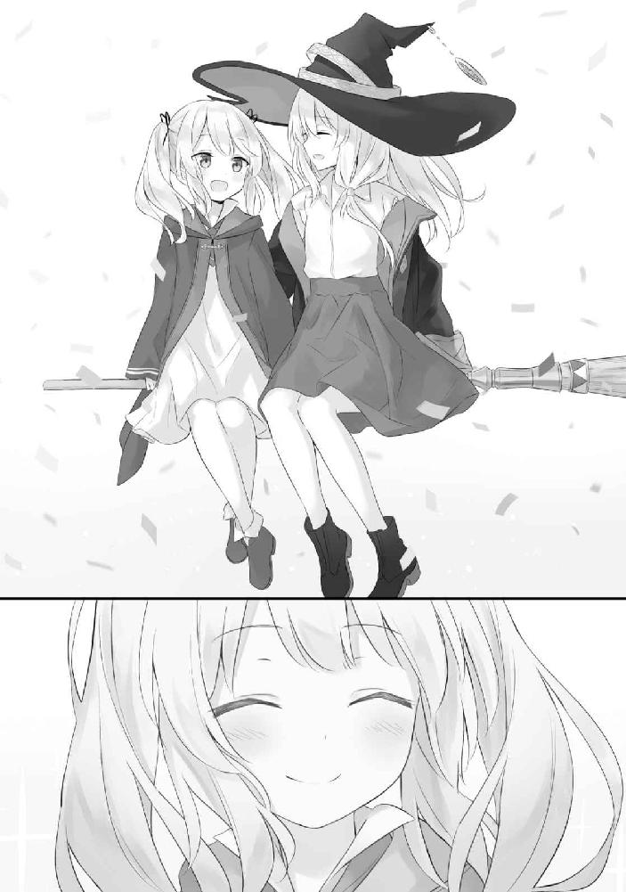
私は会場の受付にて、紙切れを差し出しました。
券です。
そこには、レースの勝利予想が書き込まれていました。
聞いた話ではありますけれど、この国のレースは勝利予想で賭けをしているそうではありませんか。つまり予想が的中すればお金が貰えるということなのでしょう。
そんな美味しい話に私が釣られないわけがないですよね。しかも私が優勝することはほぼ間違いないのですから。
こんなちょろいお金儲けの方法があっていいのでしょうか？ うふふ。
「はぁい。かしこまりました」受付のお姉さんは私から紙を受け取り、そして、そこに刻まれた文字と、私の顔を見比べてから、青ざめました。
それもそのはずでしょう。
私は多額の金額をこの券につぎ込みましたから。
返ってくる金額は想像を絶するものになるはずです。
億万長者も夢ではないのではないでしょうか。
ああ、このお金が貰えたら何を買いましょうか？ 手始めにパン屋を買収して私の持ち物にしてみましょうか？ うふふふふ......。
などと。妄想を膨らませる私に対して、受付嬢さんは、
「あのう......」
などと、大変申し訳なさそうに、言うのでした。
「お客様......選手は賭けに参加できない決まりになっていまして......」
なんとも信じがたいことを言うのでした。「ですからこちらの券は無効となります」
「............」
「あの......お客様......？」
「......払い戻しは......効きますか......？」
「大変申し訳ありませんが払い戻しはできない規則となっておりまして......」
「............」
「あの......お客様......？」
「......どうしてもダメですか......？」
「だめです」
「......どうしても？」
「規則ですので」
「............」
「............」
こうして汚い金儲けに走ろうとしていた魔女は、なんやかんやでそれなりに痛い目を見るに至ったのでした。
めでたしめでたし。
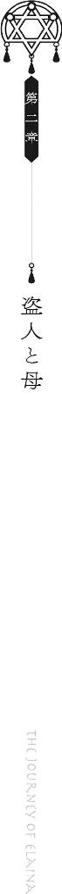
晴天の空の下、門をくぐり抜けた先で私を待ち受けていたのは、街路樹が等間隔に並ぶ大通りでした。通りに面した民家は秋らしく枯れ葉を屋根にのせていました。冷たい風がさらりと流れると、その黄葉たちはぱらりと空を舞って落ちていきます。
街並みに人の姿はあまりありません。
景観はそれなりに美しいものの、寂しさを覚える街並みといえました。
私を通り過ぎる風は、寂れた街並みを嘆くように冷たく吹き抜けるばかり。
「............」
大抵、こういった人気のない街というものは、二つのパターンに分類することができます。
それらしい特色もなく、活気もさほどない街。
あるいは、治安が悪く、人々が危険を感じてあまり外を出歩かなくなってしまった街。
果たしてこの街はどちらなのでしょうか──。
「おっと嬢ちゃん。止まりな」
なるほど後者が当てはまるようでした。
通りを塞ぐように私の前に突如として現れた男は、若い男性のようでした。手には短めのナイフが握られています。口元はスカーフを巻いているためよく見えません。
短めのナイフを、蛇の頭のようにゆらゆらと揺らしながら、男は「へへへ......」といかにも小物らしい笑みを漏らし、
「お前、これが何か分かるよな？ 俺に逆らったらその首と身体がおさらばすることになるぜ？」
などといかにも小物らしい台詞を吐くのでした。
ところでそのナイフの刀身だと切れるのはせいぜい果物か安物の肉くらいだと思うのですけど大丈夫ですか？ 頭が。
というか。
「あの、つかぬことを伺いますけど、これが何だか分かりますか？」
私は胸元のブローチを指先でちょんと叩いてみせました。
それは魔女のブローチでした。
私は魔法使いの中でも最高位の魔女ですよー。まともにやりあっても敵いませんよー。これが目に入らぬかー。と暗に語りかけたのです。
大抵の賊はこれを見ただけで平伏もしくは「へへぇ冗談ですよぉ姉御ぉ」とすり寄ってくるか、あるいは「あ、す、すすすすみません人違いでした！」と尻尾を巻いて逃げ出してくれます。
ゆえに私は賊に目をつけられたときは真っ先にブローチを見せるようにしているのです。余程の田舎でもない限りこのブローチはそれなりの効力を発揮してくれますので。
「は？ 何それ知らね」
「............」
まあまさかここが余程の田舎に当てはまるとは思いもしませんでしたけどね！
私は嘆息して答えました。
「あのですね......私は魔女でして......、つまり魔法が使えるんですよ。要するに強いんですよ」
「ほう。強いだと？ どれくらいだ？」
「めちゃくちゃ強いです」自分で言うのもなんだかおかしくて恥ずかしいのですけど。「私を脅してお金を取ろうとするのはやめたほうがいいかと思います。怪我しますよ」
「なるほどな」私の言葉が伝わったようで、彼は頷いていました。「いいだろう！ 本来ならば金だけ置いて消えてもらうつもりだったが、抵抗する気があるっていうなら話は別だ。力づくで奪い取ってやろうじゃないか」あ全然伝わってない。
「いや、あの......なんでやり合う前提で話が進んでるんですか......」
「俺は盗賊。そして君は俺に狙われた獲物。つまり......分かるな？」
「ぜんぜん分かんないです」
「おいおい分かんねぇ奴だなぁ」
「あなたがそれを言いますか......」
「要するにお前には金を払うか戦うかの選択肢しかねぇってことだよ。有り金全部置いていくか、それとも俺に力づくで奪われるか......さあ、どっちを選ぶ？」
「選択肢ないじゃないですか」
「選ばせてやるよ。へへへ......」
「だから選択肢ないじゃないですか」
入国した直後ですし、こんなところで揉め事を起こすのは気が進みません。
ここで彼を退けたとしても、悪目立ちして変な輩に目をつけられる可能性すらありますから。できる限り穏便に済ませたいのですけど......。
「......はあ。じゃあいいですよ。はいはい。どこからでもかかってきてください」
私は肩をすくめました。覚悟を決めたわけではありませんが、お金を払うくらいなら別の方法を取ったほうがよいと思ったのです。
「ふっ......俺もこの田舎街で退屈していたところだ。せいぜい......楽しませてくれよ？」
ぎらりと彼の手に握られたナイフ（見るからに安物）が光ります。
まともにやり合って怪我でもさせてしまえば面倒な事態に発展しかねません。
仕方がありませんね──脅すつもりで彼の足元を一面氷漬けにでもして差し上げましょうか。
「言い忘れていたが俺は胸の小さい女の子は好みじゃないんだ。身体目当てじゃないからそこは安心していいぞ」彼はナイフを構えながら意味不明な言葉を口走りました。
やっぱりちょっと痛い目見てもらったほうがいいでしょうか......？
と、私が若干の苛立ちを込めて杖を取り出した、そのとき。
この絶体絶命の窮地（盗賊さんの）に、救世主が現れました。
それは誰か。
「こーくん！ お弁当忘れてるわよぉー！ お弁当！」
そう、お母さんです。
それは突然やってきました。彼の背後から、お家用の可愛いうさぎさんのアップリケをあしらったエプロンを装備しながら、内股かつ小股でぱたぱたとサンダルを踏み鳴らし駆け寄るその女性はまさしく母。まるで聖なる火を掲げるように挙げられたその手に摑まれているのは、エプロン同様可愛らしい包みにくるまれたお弁当。
そして聖なる母は盗賊に救いの手（お弁当）を差し出しました。
「はい、これっ！」わりと急いで来たからか彼女の息は若干乱れ、頰はやや上気しているように見えました。
「もうっ。おっちょこちょいなんだから」あまりに突然の出来事に呆気にとられる盗賊の頭をこつんと小突くその拳は、肉体よりも精神に致命的なダメージを与えているように見えました。
「か、かかかかかかかかかか母ちゃん！ 何でこんなところにいるんだよ！」
先ほどまでの妙に格好つけたキャラを忘れて慌てふためく盗賊改めこーくん氏。
「こーくんがお弁当忘れてたから、お母さん急いで持ってきてあげたのよ？ そんな言い方ないでしょ？ お母さん怒っちゃうんだから」ぷんぷんと頰を膨らませる母。
「い、いらねえよ弁当なんて！」
「今日はこーくんが好きなハンバーグも入れてるのに？」なぜか勝ち誇った顔の母。
「い、いらねえし！ 好きじゃねえし！」
「もー。お友達の前だからって照れなくてもいいのよ？」ぺちぺちと盗賊の肩を叩く母。
「うるせえって！ つーか下がってろって母ちゃん！ 今仕事中なんだから邪魔すんなよ！」
もはやそこに盗賊はおらず、ただの反抗期の息子と、子煩悩な母親がいるだけでした。何でしょう。通学途中の男子生徒を見せつけられているような気分です。
「はいはい。頑張ってね。お夕飯までには帰ってくるのよ？ 今日はこーくんの大好きなハンバ」
「いいから行ってろって！ マジで！ もういいから！」
「はぁーい」とてとてと去る母。
............。
彼女が去ったのちもゆるーい空気が私たちの間には流れておりました。
○
「ふっ......さっきは騒がせてしまって悪かったな。さあ、気を取り直して決闘をするとしようか」
盗賊の男は大げさな咳払いののちに再びナイフを構えました。
私を見やるその目はまるで獲物をつけ狙う肉食獣そのもの。ぎらりと光るナイフ（果物用）は血に飢えているかのように、尖った先端を光らせてこちらに向いていました。
ごくり、と私の喉が鳴りました。頰を伝う汗は、冷ややかに流れていきました。
寂れた街にぴりぴりと張り詰めた空気が流れ、緊張感にまみれていました。
これから、街の真ん中が戦場となる、そんな気配が──。
「こーくん、がんばって！」
もぉー......。
盗賊の真後ろ。敷物の上にちょこんと座る女性はまさしく母。一度家に戻って持参した敷物は使い古されているものの家族の思い出が詰まった可愛らしい柄の代物。そのうえにサンドウィッチのバスケットを置いて、そのうちの一つをつまんで彼女はウサギのように可愛らしくもさもさと食しておられました。
ピクニックですか。
「何してんだよ母ちゃん！」
「あっ。私のことは気にしないで？ お仕事続けてね、こーくん」うふふと笑う母。
「できるか！ とっとと失せろって！ 邪魔すんなよな！」
「はぁーい」
............。
ゆるーい空気は終始流れっぱなしでした。
○
「ふっ......全く、何度も騒がせて済まないな。それでは気を取り直して──」
盗賊は再びナイフを構えます。
しかしもはやその先に旅人はいませんでした。
「あ、このたまごサンドとっても美味しいのよ？ お母さん特製なんだから」
「美味しいです」
「でしょー？」
盗賊の真後ろ。敷物の上でお上品に座り、ピクニックを始める女性はまさしく母。と旅人。
すっかりゆるーい空気に取り込まれてしまった私がそこにはいましたがたまごサンドが美味しいのでもうなんかどうでもいいです。
「待て。待て旅人。何をしている」
「ランチタイムです」
「今は俺と対峙していたはずだが」
「ちょっと小腹が空いたので後にしてもらえません？」
「いや後にするとかそういう話じゃないと思うんだけど......」
そもそも果物ナイフで脅された時点で私もやる気なかったんですよね。伝説の武器か何かでももって出直してきてほしいです。
「ねえ旅人さん、旅人さんは何てお名前なの？」
「イレイナです」
「そう！ イレイナさんっていうのねぇ......。それで普段は何のお仕事をしているの？」
普段は？ 普段はと言われましても困るのですけど。「仕事らしい仕事はしていませんけれど」
「あらあらぁ......だったら花嫁修行中？」
「いや、ですから旅人だと言ってるじゃないですか......」もぐもぐ。
何だか会話が嚙み合っていないような気がしますがたまごサンドが美味しいのでやはりわりとどうでもいい私です。
「え？ でも、それは役の話でしょう？ 私は普段のお仕事の話を聞いてるのだけれど......」
......おっと？
「役とは？」
たまごサンドをかみ砕きながら、もっとかみ砕いて言っていただければと思いました。
そうして首をかしげた私に、彼女は「ええ？」と、私よりも怪訝な顔を浮かべて、
「だって、イレイナさんって、役者さんなんでしょう？」
と言いました。
おっと。おやおや？
「役者では、ないですけど......」
「あらあらぁ！ 役になり切っちゃってるのね！ おませさん」一度おませさんという言葉を調べていただきたいです母。「で実際普段はどんなお仕事してるの？ もしかして役者一本で食べていくつもりなの？ お母さん心配だわ」
「......いえ役者じゃないんですけど」
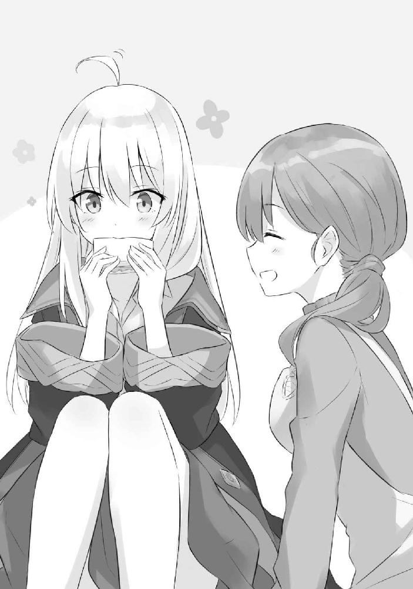
なるほどつまりこういうことでしょうか。
盗賊改めこーくん氏の母上は、息子がまさか本当に盗賊をやっているなどとは露ほど知らず、ただの役者でこんなことをしているのだと思い込んでいると。なるほどなるほど。でしたらこのびっくりするくらい呑気で緩い空気も納得です。
「......あのですね、お母さん、正直に申し上げますと、私もそうですけれど、そもそもあなたの息子さんも役者じゃありません」
「うちの子が、役者では、ない？」ええー？ と眉を下げて首をかしげる盗賊さんの母上。「でも、こーくん、いつも『くくく......さあ金を出せ！』って鏡の前で練習しているわよ？ あれは悪人の役の練習ではなくって？」
「強盗の練習です」
「......でも、この前は盗賊するための衣装がほしいからって、今着てる服を作らされたわよ？ これは役のためでなくって？」
「それは本当に盗賊の真似事をするためです」
「まあ......！」
盗賊の母上は驚愕に目を見開きました。
直後に立ち上がり、「こーくん、ちょっとどういうこと？ お母さん聞いてないわよ？」などと盗賊氏に詰め寄ります。
「う、うるせえ！ 母ちゃんには関係ないだろうが！」
精一杯強がる彼の姿にもはや威圧感は皆無でした。
「ううう......お母さんは悲しいわ......。どうしてこんな子になっちゃったのかしら......」盗賊氏の母はしくしくと泣き始めました。
ああー。泣かせたー。
と私が咎める視線を送るまでもなく盗賊氏は狼狽しておられました。
「......！ あ、ああ......べ、べつにこれはアレだから！ 盗賊の真似事をしてただけでマジで盗賊になろうとか思ってねぇから！」
先ほど私と対峙した際の台詞の数々をぜひ聞かせてやりたいなと思いました。
「大丈夫ですか？」私はたまごサンドのお礼もあり、盗賊氏の母上の味方をしました。彼女の肩に優しく触れながらハンカチを差し出す私のその様子は言外に「ちょっと男子ィ。謝りなさいよォ」と咎める女子生徒の取り巻きのようにも見えなくありません。
「ありがとうイレイナさん......」盗賊母上は私のハンカチを受け取ると躊躇なく鼻をちーんとかみました。母上。何をするのですか母上。
「イレイナさん、あのね？ ほら、見てこれ。これ、こーくんが小さかった頃の写真なんだけど」なぜかいきなり赤ん坊だった頃の盗賊の写真を取り出す母上。持ち歩いてるんですかそれ。「この頃はお菓子になるのが夢だったの......」
「はあ」お菓子になる夢って何ですか。
「美味しそうな名前だったから覚えてるんだけれど......、確か......マフィア」
「お母さんそれ犯罪組織の俗称です」マフィンと間違えたんでしょうか。
「うう......いつからこんなにグレてしまったのかしら......」
「お母さんたぶん元々です」
子供のころから何一つ成長してないじゃないですか......。
盗賊氏のあまりのお子様ぶりに涙を禁じえません。
「どうすればいいと思う？」
「私に聞かれても困るんですけど......」
盗賊氏にちらりと目をやりました。
しきりにそわそわとしている盗賊氏がそこにはいました。恐らく彼自身、母親のことを嫌っているわけではないのでしょう。ただ単純に素直になれないだけなのです。
大体こういう素直じゃない性格は、直そうと思っても直せない場合が多く、そもそも中途半端なところで頑固だったりして非常に面倒くさいのです。
下手に直そうとするよりも、素直じゃないままこちらで主導権を握って操ってしまったほうがやりやすかったりもします。
............。
と。
そのあたりで秘策が一つ思いついた私でした。
「お母さん、ちょっと耳を貸してください」
そして私は言いました。
ごにょごにょと。
○
「ふっ......全く、何度も何度も騒がせて済まないな。それでは気を取り直して──手を挙げろ！」
意気揚々と街中で叫ぶその男は盗賊。
黒いスカーフを口に巻いているため口元は見えません。手にはナイフが握られており、そのぎらりとした切っ先が、明確な殺意と共にこちらに向けられています。
「ここで俺に目をつけられたのが運の尽きだったな。さあ金を出せ！ ありったけな！ それが嫌なら力づくで奪い取ってやろう！」
男は叫びます。
哀れな旅人は手を挙げたまま降参の構え。恐怖におののき、震えあがってすらいました。
「ふふふ......変な気は起こさないようにね？ でないとこのおたまで叩いちゃうから」
ところで盗賊は一人ではありませんでした。
盗賊の男の後ろからひょいと現れたのは、盗賊の仲間。盗賊男とお揃いの衣装に着替えて家から戻ってきたものの、ついうっかりいつもの癖でエプロンとサンダルを装備したまま、武器としておたまを持参したその女性はまさしく母。
母親が盗賊の仲間になりました。
「待って」
「さあこーくん！ やっちゃってください！ ありったけの金を奪っちゃいましょう！」やけにノリノリの母。
「いやちょっと待って何してんの母ちゃん」
「えっ？ ごめんなさい。おかしかったかしら......お母さん盗賊をやるの初めてだから......」
「いやそうじゃなくて」
「もしかしてお揃いの衣装こっそり作ったの怒ってる？ ごめんね？ 力作だったから、つい」
「いやそうじゃなくて。あの、は？ 何してんの......？」
「お母さん心配だから来ちゃった」末尾にハートマークでもつきそうなくらいに可愛らしくウインクしてみせる母。「今後はこーくんのお仕事に私もついていくね？」
「............」
もはや怒鳴る気力すら失い脱力する盗賊。からん、と果物ナイフをその場に落として崩れ落ちてすらいました。
それはつまりこういうことでした。
いつまでも盗賊を続けるつもりなら、いつまでも母がついていきます。
盗賊の男は現実から逃れるように両手で顔を覆いました。
「勘弁してください......」
大人にもなって親同伴で仕事をするなどという気恥ずかしさと実の母親とのペアルックというわけのわからないコンビネーションが彼の精神をボロボロに破壊しました。
私は崩れ落ちた彼の肩に手を置いて、一言だけ申し上げるのでした。
「盗賊やめちゃえばお母さんはついてきませんよ？」
にっこりと笑いながら。
要するに母親同伴が嫌なら辞めろというだけの話です。
○
それから数日間、私はその国で滞在をいたしました。
その一件以来、特に私は彼らと会う予定もありませんでしたし、旅の出会いは一期一会とも言いますから、彼らと待ち合わせをして顔を合わせる機会などは特にありませんでした。
まあ、でも、別にそうしたところで困ることも特にありませんでしたけれど。たまごサンドの味が若干恋しくなった程度です。
ところで私が街を離れる日になった頃。
私は街にて、偶然、彼らの姿を再び見かけることになりました。
早朝。仕事着を着込んで家から飛び出る青年の姿が見えました。顔はよく見えませんでしたけれど、髪型といい、体格といい、なんとなく、それは以前相まみえた盗賊のものと似ているような気がしてなりませんでした。
「こーくん！ お弁当忘れてるわよ！ お弁当！」
何より、家から遅れて出てきた女性の後ろ姿がまさに見覚えのある人そのものでした。
あ、例の親子だ。と、なんだか物珍しいものを見かけてしまったような、得をしたような気分になった私がそこにはおりました。
「はいっ。お仕事頑張ってね？」息子に手作り弁当を渡す母は、そのまま急いで走り去る息子の背中をいつまでも見つめながら手を振っておりました。
結局、盗賊さんは、母親同伴の盗賊稼業に嫌気がさして──反抗して、まっとうな職に就くことを選んだようです。
そこにはもはや盗賊などおらず。
仲睦まじい、ごく普通の母と子の姿がありましたとさ。
めでたしめでたし。
「心配だわ......新しいお仕事にもついていこうかしら」はう、と頰に手を添えながら青年の背中を見送る母。
............。
あ、めでたくない。
その日、新聞社に持ち込まれたタレ込みは、さして驚くほどでもない、他愛もない怨恨によるものに見えた。
新聞社の出入り口の扉に無造作に挟まれていた封筒には、何枚かの写真と、一通の手紙が同封されていた。情報を売り物にしていれば、こういった類の密告は、国中を騒がすものからただの戯言まで後を絶たない。早朝に出社した記者は、その手紙を開きながらも、しかしその内容に関してはまるで興味を持とうとはしていなかった。
国中が次の大統領を決める選挙をしている真っ只中である。三文記事に時間を割けるほど暇を持て余しているわけでもない。余程のことがない限り、この手紙はその場で破り捨てるだろうとすら記者は考えていた。
事実、その手紙に記されていた内容はあまりにも馬鹿げていた。
『この国に数日前に入国した灰の魔女イレイナは悪女である。私はこの女に騙されて全財産を失う羽目になった。私はこの魔女に復讐をしたい。この魔女を社会的に追い詰めてはくれないだろうか』
と。手紙に差し出し人の名前はなく、そこにあったのは、灰色の髪、瑠璃色の瞳をした十代そこそこの若い魔女の写真だけだった。
この国には一人としていない魔法使い。そのうえ、魔女という最高位の称号を持つ少女がこの国に来たことはもちろん知っている。新聞記者でなくとも当然のことだ。それほどまでに珍しい存在が国に来たのだから。
国が暇を持て余していたのならば、恐らくは記者も彼女に対して何らかの取材を行ったかもしれないが、今は国の今後を決める時期でもある。新聞記者たちは誰もが慌ただしく駆け回っている。
いうまでもなく、三文記事に時間を割けるほど暇ではない。
「............」
しかし記者は、その手紙を胸ポケットに忍ばせてから、新聞社への扉を開いていた。
○
「いや、いいねえ！ そのゴミを見るような目つきとてもいいよ！」
ばつん、ばつん、とカメラのシャッターが切られる度にえげつない目つきを返して差し上げるいかにも心優しいいかにもな美少女がそこにはおりました。
それは誰か。
そう、私です。
「あの......もういいですか」
「いや待って！ もう一枚だけ撮らせて！ ハイ！ 次はこの花持ってこっちにスマイル向けてみて！」男はカメラの黒い冠布からひょいと顔を出すと、白いバラを私に持たせ、「それ、咥えて」と親指を立てました。へし折ってやろうかと思いました。
周辺の国の人から聞いた話ではありますが、この国では写真の文化がそこそこ発展しているらしいようで、こういったアマチュアのカメラマンに被写体にならないかと声をかけられることがしばしばあるようです。
実際しばしばありました。
この国に来て三日目になりますが、それでも何度か「君、かわいいねぇ、写真撮らせてくれない？ へへへ......」と何度も声をかけられましたから。
「いいねえ！ ......あ。ちょっと。あの、咥えてって言ったんだけど......捨てちゃうんだ......。......あ！ でもそのゴミを見るような目つきとてもいいよ！ 凄い！ 最高だ！」
ばつん、ばつん、とシャッターは切られ続けました。
「疲れました......」
結局、私はアマチュアのカメラマンに数時間拘束されたのちにようやく解放されました。
この街に来て早三日。
大通りは相変わらず人でまみれており、騒がしくもありました。そんな中でげんなりとした表情を浮かべて歩くのは私一人くらいなもので、街の騒がしさはより一層私の耳には響きやかましくもありました。
この国は数日後に新たな大統領を決める選挙が行われるようで、そのための選挙活動に現在、沸きに沸いているのだとか。どうやらそういう事情もあって、街はやけに騒がしくあるわけです。
「弱者に光を！ 私は政治家として──私を導いてくれた人々のために、この国に尽くすことを誓いたいと思います！」
大通りを少し歩くと、そのど真ん中に置かれた馬車の上で、声を張り上げる男の姿を見かけました。周囲を人だかりで囲まれた彼は、黒のスーツを着込んでいます。歳はそれなりに若く、三十代そこそこといったところでしょうか。
彼の名前はマシュー。
この国に住む国民であれば──、いえ、三日間滞在している程度の私ですら名前くらいは知っているほどの有名人です。
『街に明るい未来を──マシュー』
そのような抽象的なコメントと、黒スーツの男をあしらったポスターが街中にありふれているのですから。毎日同じような笑顔を見せられれば流石に良くも悪くも顔くらいは覚えるものです。
「不況にあえぐ国民を私は見放したりはしません！ この国のためにはまず格差の是正と領土問題の解決を最優先にしたいと考えております！ 領土問題の解決に向けて最も大事なことは何か分かりますか？ それは赦し合うことだと私は考えております！ かつて私も過ちを犯し、一時期はこの政界から追い出されることになった過去もありますが、しかしそのとき時間をかけて赦してくれた妻の存在が私をここまで連れてきて──」
まあ彼が言っていることは私にはちんぷんかんぷんだったんですけどね。
しかし国民からの支持はある程度得ているようです。
「やっぱり彼が新しい大統領に選ばれるべきだな──」「あんな誠実な政治家、今まで見たことがないよ──」
どこからともなく、そんな会話が耳に入ります。
私は大人になるよりも先に魔女として旅に出てしまいましたし、国政には元より縁のない生活を送ってきましたから、残念ながら選挙の場で語られている言葉は空虚に響いてしまいます。
こういった場で語られる甘言は大概実現されませんし。というかどなたも似たような大げさかつ胡散臭い台詞を吐きまくっているせいで違いがよくわかんねーです。けれど、この国の人にとっては少なくともそうではないのでしょう。
ところでマシュー氏が演説を執り行っている少し先には、もう一人、政治家がおりました。同じく馬車の荷台にて演説を行っていましたが、こちらは馬車がやたらと豪華であり、少なくとも若くはありません。見るからにベテランの政治家に見えました。
「この国のすべての人に私は幸福を与えたいと考えています。若さだけを武器にした政治ではなく、この国を古くから見てきた私だからこそできることが──」
落ち着いた物腰でさらりと若い政治家を批判する彼はバーナード。
『すべての人に幸福を──バーナード』
同じくこちらも民家の壁に選挙ポスターを張りつけた大統領候補の一人でした。
つまりこの国のトップを決める選挙は、若手のマシュー氏とベテランのバーナード氏の一騎打ちという構図になっているようです。
どちらが優勢なのかは、ぱっと見ただけでは何とも言い難いものがありました。ベテランの彼も、若手の彼も、馬車の周りが人で囲まれており、その数はどちらも同じくらいに見えましたから。
「へいへい魔女さん、ちょっといいかな？」
ぼんやりと演説の様子を眺めていると、いかにも軽薄そうな中年の男が私の視界を遮りました。
............。
「すみません写真ならお断りです」
私は逃げました。もうアマチュアカメラマンの餌食になるのはまっぴらでしたから。
「えっ。ちょっと、違う違う！ 俺、カメラマンじゃないよ？」
「そうですよねアマチュアのカメラマン志望ですからね。カメラマンではないでしょうね」
「いやそうじゃなくって......」男は逃げる私の前に再び立ちふさがると、「俺、こういう者なんだけど」と名刺を差し出してきました。
............。
「すみません私芸能界には興味ないので」
私は逃げました。私が可愛いなどと申してそのまま芸能界入りでもさせるつもりなんでしょう？ その手には乗りませんよ。
「いや、芸能事務所の関係者でもないんだけど......。君、自意識過剰だねぇ......」
「はあ......じゃあ何なんですか」
「......だからこういう者だってば」
男性は再度私に名刺を差し出してきました。
............。
仕方なしに私はそれを受け取ります。
『アザミ新聞社 記者 フランク』
なるほど新聞記者さんであるようです。
「すみません取材はちょっと......」
私はやっぱり逃げました。
「いやいやいや！ ちょっと待って！ お話だけでも聞かせてくれない？ ね？ お願いだから！」
「えー..................」めんどくさいです。
「お金あげるから」
「何が知りたいですか」俄然やる気になりました。
「君、金に汚いねぇ......」呆れながら新聞記者は、ペンを取り出しました。「君、よその国から来た人でしょ？ 今回の選挙の結果、どうなると思う？」
よそ者であるところの私にわざわざ声をかけてきて、一体何かと思ったらただの選挙の取材でした。私よりも適任がそこら中にたくさんいるような気がしますけど......、たぶん、よそ者のフラットな意見を聞きたいだとかそういう事情なのかもしれませんね。
「......私はべつにどちらの肩入れもしていませんから、何とも言えませんけど......」たった今演説をしている二人を見比べてから、私は答えます。「たぶん、現段階では勝負は五分といったところなのではないでしょうか。どちらが勝っても不思議はないと思います」
「ほうほう！ それはどうしてそう思うんだい？」
「............」私は言いました。「まず若手のマシューさんは演説の際に、しきりに奥さんとの関係性について述べてますよね。そのおかげか若い層を取り込むことに成功しているように見えます」
かつてマシューさんは、妻に隠れてよそに女を作っていたことが対立する政治家により明るみになり、政界を追い出されかけたことがあったそうな。その後、自らの過ちを認めて妻に対して詫びた彼は、時間をかけて互いの関係性を取り戻した末に、今では妻に支えてもらいながら、こうして選挙の場まで戻ってこられるようになったとか。よくあるありふれた美談だと思います。
さすがに何度も聞かされているだけあって覚えてしまいました。
「一方でもう一人の立候補者のバーナードさんは昔から政界にいるだけあって、縁を大事にしているように思えます。実際、彼の周りを取り囲んでいるのはご年配ばかりです。高齢者層を上手いこと取り込んでいるのでしょう」
「お互いの政策に関してはどう思ってるかな」
「べつにどうでもいいです」
「酷いな......」
「選挙なんて所詮はただの人気投票じゃないですか」
「君ほんと酷いな......」
困難を乗り越えて成り上がった若い政治家と、そこに立ちはだかるベテランの政治家。
分かりやすい対立構造といえました。国民がこの行方を見守りたがるのも無理はないのではないでしょうか。
「まあでもさ、俺たちとしては、どちらかと言うと、バーナードさんのほうに大統領になってもらいたいんだよね」さらりと記者フランクさんは言います。「あんな理想論を恥ずかしげもなく語るような政治家が国のトップになったら恥だと思わないかい？ 不倫男だし」
「ですが若い層からの支持は得ているみたいですね」
「そうだねぇ。まあ若い連中はただ彼の若さに惹かれてるだけだからねぇ。実際、彼が演説の場で語っているのは何だ？ ただのお涙頂戴のエピソードじゃないか。あんなもので人を扇動しようとするなんていかにも三流のすることだとは思うがね」
「............」
「まあ、だからさ、俺たち大人たちは、あんなのよりもバーナード氏に勝ってもらいたいんだよ。けれど、君が言った通り、現在の戦局は五分といって間違いはないだろう。それでは困るわけだよ」
分かるかい？ と彼は私に首をかしげてきました。
何が言いたいのかはさっぱりでしたが、
「......もしかして、私に悪いことをさせようとしています？」
なんとなく察するものがありました。しかし記者フランクさんは、「いやいや、違うよ」と煙たそうに手を振り、
「俺が君にしてほしいのは、正しいことさ」
と、私にだけ見えるように、胸元のポケットから写真を取り出し、ちらりと見せてきました。
そこには私の写真が幾つもありました。
「君、この国に来てから三日目だろう？ ところで、今日までの二日間で一体どれだけ不正な手口で稼いで来たんだ？」
そこには私がこの国にて商売をしている現場が写真としてきっちり収められていました。一枚目は、私がネックレスを二束三文で買い取っている写真。二枚目は「このネックレスのおかげで幸せになったとの声が多数届いています」などと看板を掲げて露店を開いている私の写真。三枚目にはネックレスを金貨一枚で売っている私の写真。
なんとまあびっくり。この三枚を見ただけでは、私がいかにも詐欺を働いているかのように見えてしまうではありませんか。
「俺が言いたいこと、分かるよね？」
にこにこと笑みを浮かべながら、記者フランクさんは、「ちょっと頼みたいことがあるからさ、うちの新聞社まで来てくれないかな」と私に背を向けます。
「この写真、君に騙された被害者からのタレコミだったんだけどさ──べつに、俺は君を社会的に失墜させるだとか、君を陥れようだなんて考えているわけじゃないんだ。ただちょっと協力してほしいだけなんだよ。正しいことをするためにね」
そして彼は言いました。
「まあ──君が俺たちの味方になってくれないのなら、そういうことも考えないわけじゃないけどね」と。
少なくとも彼が今やっていることは間違っていることだとは思いました。
○
「若手政治家のマシューにはローリーという妻がいてね、彼女はとても美人で見かけだけ言えばまさに理想的な女性だ」
記者フランクさんは新聞社に私を招き入れると、煙草に火をつけながら言いました。
「しかし、あんな三流政治家を伴侶として選んだことから分かる通り、あまり頭は良くはないだろう。夫が不祥事を起こしたあとも、その事後処理に利用されてしまったのだからね」
彼は私に本を何冊か手渡してきました。
どうやら自伝のようで、表紙に美しい女性の写真をあしらった本には、『政治家の妻として生きるには』だとか『不祥事を起こした夫を許すまで』だとか、そういった類の煽りが帯の中にありました。
「これらの本はすべてマシューがローリーに書かせたものだと俺たちは睨んでいる」
彼は口元から紫煙を吐き出してから、語りました。
この夫婦がこれまでに辿ってきた顚末は、あまりにもありふれたものでした。
今より数年間のことです。
まだ駆け出しだった頃の政治家マシューさんは、妻がいながら秘書との関係を持ち、それが対立政治家の手により明るみになってしまいました。
政治とは何ら関係のない政治家の人間的な部分を街の人々はこぞって批判し、彼を支援していた者たちは次から次へと彼の元を離れていきました。それまでいかに順風満帆に行っていたとしても、縁の切れ目とは突然訪れるものであるようです。
結局、それから今年までの数年間、彼は表舞台から姿を消すこととなりました。しかしきっとそれも当然のことなのでしょう。不貞を働くような男に国を任せるわけにはいかないという民意が、彼の道を阻んだのですから。
さて今年までの数年間は姿を消した、という事実から分かる通り、彼は今年に入ってから政治家としての活動を再開し、今や大御所政治家との一騎打ちをするまでに成り上がったわけですが。
一体何が彼をここまでの人物に仕立て上げたのでしょう。
「これまでの道のりはすべてマシューの策略だったんだ」
記者フランクさんは既に短くなり切った煙草を、こんもりと積もり積もっている灰皿に押しつけて、言いました。「マシューが失脚して以来、今年に入るまでの間、ずっとローリーがマシューと入れ替わりになるような形で、表舞台で活躍していたんだ」
夫が失脚してから、妻ローリーさんは新聞などのメディアに度々呼ばれるようになりました。そこで彼女は「夫のことは許せない」「けれど、まだ信じたいという気持ちもある」と純粋な気持ちを打ち明けていたといいます。何があっても夫につき従う誠実な妻の姿がそこにはあり、夫の行いに最も傷ついているにもかかわらず、そのような素振りを見せず気丈にふるまう彼女の姿勢に心を打たれた人も多いと言います。
時間をかけて、夫が再び立ち上がるために、妻ローリーさんはあらゆる手を尽くしたようです。自伝を出版したり、講演会を開いたり、自らのファッションブランドを立ち上げたり、あとはレストランを経営したり。後半部分に関してはそれ単なるあなたの趣味じゃないですかと突っ込みたくなる点ではありましたが、少なくとも国民は、彼女のそういった行いを全面的に肯定しておられるようでした。
ゆえに彼女の好感度が、必然的に夫の好感度にも結びつき、こうして表舞台に再びマシューさんが立ち上がれるようになったのだといいます。
しかし新聞記者は、これこそマシューさんの計算によるものなのだと言い張ります。
「不貞が明るみになったあと、マシューは妻を利用して、自分の好感度が上がるように仕組んだのさ。自伝を出版したのも講演会に出るようになったのも、店を開くようになったのも、全部夫の言いなりになったがゆえだ」
「そういった証拠があるんですか？」
私の問いかけに、記者フランクさんは首を振りました。
「根拠はない。これっぽっちも」
なるほど要するにただのこじつけですか。と私が納得しかけたところで、「だが」と彼は口を開きます。
「その証拠を摑むために、君には協力をしてもらいたいんだよ」
彼は言いました。「裏が取れていない報道は虚構に過ぎない。そしてそういった報道ほど薄っぺらいものもない。俺たちはまずマシューの噓を暴くために、妻に話を聞かなければならないと考えている」
「......私に何をさせたいんですか」
「君は魔女だろう？ 魔女なら魔法で噓を言えないようにするだとか、もしくは自白剤を作ったりできるんじゃないのか？」
「買いかぶりすぎです」
「できないのか？」
「とは言ってません」けれど。「そうすることでもしもローリーさんがあなたたちが予想した通りの言葉を吐かなかった場合はどうするつもりですか？」
見ようによっては正しいことをしようとしている正義感溢れる新聞記者のようにも見えました。しかし、彼の言動の一つ一つが、ただ単純にマシューさんを陥れられればそれでよいという考え方を漏らしているように見えました。
彼ら新聞社にとってはバーナードさんが当選することが都合がよく、マシューさんが当選すると厄介なのでしょう。だからこそ何としてもスキャンダルを勝ち取って、再び彼を表舞台から引きずり下ろしたいと考えている。
しかし、だとすると、私が仮にローリーさんに真実しか語れなくなる魔法をかけたとして、そのとき有力な情報が得られなかった場合はどうするのでしょうか？ もしもこの場でそのような魔法をかけたとあれば、記者フランクさんの口からバーナードさんと新聞社とのずぶずぶの真っ黒な関係性が垣間見えてくることだろうとは思いますけど。
「君は魔女だろう？」
彼はにやりと笑い。
そして言いました。
「自白剤が作れるなら、噓を吐かせる薬も作れるんじゃないのか？」
ローリーさんの口から吐かせさえすればそれでよくて、真実なんて実際のところどうでもいいのでしょう。
それが目の前の新聞記者にとっては正しいことのようでした。
○
平日ということもあり、街角にある喫茶店の中は閑散としているように見えました。少なくとも私たち以外に、この場に客人らしき姿はほとんどなく、遠くのカウンターウェイトレスが食器を片付けているわずかな音が、窓際の席まで響いて来る始末ですらありました。
「このお店はわたくしが経営している喫茶店でしてね、まあ、ご覧の通りさほど繁盛はしていないの。それとも、皆選挙に夢中になってるだけかしら」
四人がけの席は、私の反対側だけを空席にして、あとは埋まっていました。私の隣には記者フランクさん。
そして、彼の向かい側には、ローリーさんがお上品に口元を隠しながら、ひっそりと笑っていました。
佇まいは確かに美しい女性そのものでした。
「それで、今日はどういったご用件かしら」
「ええ。夫であるマシュー氏との関係性についてお聞きしたくてですね」記者フランクさんは私をちらりと見つめてから言いました。「もしよろしければ、政治家としてのマシュー氏を妻の目線から語っていただけないかと考えていまして」
「まあ！」ローリーさんは手をぽん、と叩きました。「いいですわね！ 夫の選挙活動の助けになるのでしたら、ぜひ協力させていただきますわ！」
「ええ。それはよかった。では──」
記者フランクさんは、そして手にペンを持ちながら、いくつか簡単な質問を飛ばし始めました。
私の役目といえば、隣で座ってぼんやりとしているくらいなもので、特に何かをするわけでもなく、隣で行われている話に耳を傾けるくらいしかやることがありませんでした。
一体何のためにこの場にいるのか不思議なくらいです。
「──おまたせしました。ブレンドコーヒーです」
しばらくすると、ウェイトレスさんが暇そうにしている私のもとに三人分のコーヒーを抱えて現れました。
隣では大事なインタビューが行われていることもあり、私は「あ、ここに置いといてください」と親切な客の振りをしてコーヒーを私の手元に集めました。
そして。
「あのう、砂糖、いりますか？」
馬鹿丁寧な女子の振りをしてインタビューに割って入る私でした。
記者フランクさんは黙って首を振り。ローリーさんは「じゃあ砂糖をひとつ」と笑顔を向けてくれました。
暇を持て余した私はすっかりただの雑用のようになっておりました。
いえ、この時点まででいえば、確かに私の役目というものはほとんどないに等しいのですから、当然と言えば当然なのですけれど。
私の役目は、この時点から発生するのですから。
私はコーヒーカップにぽちゃん、と白い塊ひとつを放り込んでから、スプーンでかき混ぜました。それはもう滅茶苦茶かき混ぜました。とてもとても、よくコーヒーに馴染むように。
「はい、どうぞ」
私から手渡されたコーヒーを、ローリーさんは何の疑いもなく受け取り、「ありがとう」と、やはり笑顔を向けてくれるのでした。
裏表などまるでなさそうにも見えるのですけれど。
「............」
しかし実際のところ彼女がどのような闇を抱えておられるのかは、これから明らかになることでした。
コーヒーに私が何を入れたのかなど、彼女たちの知るところではありませんから。
「ええっと──それではもうひとつ質問なのですが」記者フランクさんはローリーさんがコーヒーを置いたところで、言いました。「夫との関係性についてですが、あなた方は今、対等な関係にあるのですか？」
それは核心を突く質問のようにも思えました。
噂が噓か真なのか。マシューさんが白か黒なのか。
ローリーさんがまともな思考力を今も有していたのならば、きっと笑いながら「対等です」などと答えたことでしょう。
「............」けれど今の彼女の顔に、笑みはありませんでした。「......いえ。対等では、ありません、でした......昔から」
まるで夢うつつのように、力なく、彼女は答えていました。
「対等ではない？ それはどういうことでしょうか？」と記者フランクさんは怪訝な表情を作りながら首をかしげていました。
白々しい態度ですよね。私が策を弄したおかげでこうしてローリーさんの口から真実がこぼれているというのに。
「............」私は二人の様子をしばらく静観していました。
ローリーさんは、今、何もかも真実を洗いざらい話すようになっています。どんな質問に対しても、羞恥心や思考力を度外視して、何もかも詳らかに話してくれることでしょう。
もしも、この状態に堕ちた彼女が、記者フランクさんが期待するようなことを喋らなかったときは、今度はまた新たにコーヒーを注文して、薬を混ぜてから彼女に手渡す手筈となっていました。
つまるところ、どう転んでも彼女は記者が求める真実を語らねばならないのです。
「昔から......わたくしと、マシューの間には、明確な......主従関係が......ありました......」
しかし新しいコーヒーを注文する必要は皆無に思えました。
彼女が語っている言葉は、おおよそ記者フランクさんが予想しうる範囲内のことでしたから。
「わたくしたち......は、夫婦関係を装った奴隷契約をしていたのです......、逆らうことは......、決してありえませんでした......」
「何ですって？ それはどういうことですか？」記者フランクさんは驚いているように見えました。口元が明らかににやついていますけど。
「彼が、今、こうして大統領の候補にまで躍り出たのは......、すべて計画した通りに......事が運んでくれたから......なのです」
「......どういうことですか？ それは、つまり、以前、彼が行った不倫から、今に至るまでのすべてが計画の内だったということですか？」
もはや隠す気すらない誘導尋問でした。
「その通りでございます......」
まあこちらも隠す気はないようなのですけれど。
「なんということだ......！」記者フランクさんは大げさに驚いておられました。されどやはり顔はにやついています。「それは、つまり、マシュー氏がこうして大統領の候補にまで躍り出ているのは、ひとえに彼がこれまで計画を綿密に練っていたからということでしょうか？ 夫婦関係でありながらも、あなたはこれまで、彼に奴隷のように利用されていたということですよね？」
隠す気がないのならすべて聞いてしまおうという欲張りな姿勢の記者フランクさんでした。
すべてあっけらかんに語ってしまう状態の彼女ですから、その質問にもごく自然と、私たちが予想しうる範囲内の真実を、正直に話してしまいます。
そのはずです。
「......いえ、違います」
しかし彼女はゆっくりとかぶりを振り。
そして、言いました。
「......奴隷というのは、わたくしではなく、夫のほうです」
それは恐らく、記者フランクさんが予想していたものとは、明らかに事情が異なる真実でした。
○
彼女の口から語られた真実は、記者フランクさんですらまるで予想もしなかったものでした。
ローリーさんとマシューさんの夫婦関係の間に、主従関係に似たものがあった、という前提は恐らく正しかったのでしょう。
しかしその関係性は、まるで真逆そのものでした。
「これまですべて、彼はわたくしのために尽くしてきたのです。そのように、仕組んでおりました」
彼女は淡々と語ります。
「彼はかつて、秘書と不貞を働いて問題となり、失脚に追いやられましたが──あれはすべてわたくしの指示によるものでございます」
一時期は政治の世界から身を引かざるをえなかった若手政治家を妻が献身的に支えて、そして、新たに活動を再開し、今や国を担う選挙で戦う、という展開すら、すべて仕組まれたことだったと彼女は語りました。
若手政治家の彼はかつて、ほかのベテランに比べて武器と呼べるものが限りなく少なく、そのうえ、知名度もさほどありませんでした。
新聞各社も、ただ若いだけの政治家よりも大御所の政治家の記事をまとめることのほうが多く、圧倒的に不利な状況は間違いありませんでした。
政治の世界を生き抜くためには、知名度が必要だったのです。
名前を売る必要があったのです。
知名度なき政治家は──いえ、政治家に限らず、知名度がないということは、存在を知られていないということは、それはつまり、存在していないのと同義なのですから。
「ですからわたくしは、考えました。正しい方法で注目を集めるよりも、間違った方法で注目を浴びてしまうほうがよっぽど得だと」
そのための売名行為として選んだ方法が、マシューさんの不倫でした。
二人の夫婦生活は、虚構に塗り固めたものだったのです。
予想通りマシューさんは悪い意味で注目を集め、結局、人々から袋叩きに遭うかたちで政治の世界から葬られてしまいましたが、そのあとの処理はローリーさんが行いました。
講演会を開き、お店を開き、表立って、夫との円満な家庭生活をアピールし続けた彼女は、人々にどのように映ったでしょうか。
不貞を犯した夫を赦す彼女の姿は、少なくとも悪いようには映らなかったはずです。情けなく女たらしの夫に、変わらぬ愛を捧げ続けた彼女という偶像は、瞬く間に人々から称賛を集めていったのです。
そして、時間が経ち、マシューさんの罪がローリーさんの活躍により完全になかったことになった頃。
マシューさんを再び表舞台に立たせ、彼女は彼を大統領に仕立て上げようとしました。
その頃には既にマシューさんの印象は、百八十度変わったものになっていたのです。
「ほら、普段良い人が悪いことをするよりも、普段悪い人がたまたまいいことをするほうが好印象を与えられるものでしょう？ わたくしはそれを両方とも夫にやらせたというだけのことなの」
ローリーさんは変わらず笑みを浮かべたまま、そのように言いました。
○
『世紀の悪女？ 政治家マシューの妻ローリーの恐るべき本性』
新聞の見出しは、ローリーさんの写真とともに、そのように綴られていました。
翌日の新聞は彼女の記事で持ち切りでした。彼女の、というよりも、彼の、といったほうが正しいのかもしれませんけれど。
「どうだ？ これでもうバーナード氏の当選は確実だろうな！ 悪女にたぶらかされ続けた情けないマシューを応援し続ける者などもういないはずだ」
「............」
昨日のことをまとめた記事ができたからぜひ見てほしい、と言われて新聞社まで呼び出されたのですけど、そこで手渡されたものは何とも言い難い代物であったように思えます。
あまりにも赤裸々に綴りすぎています。彼女が昨日語ったことが丸ごとそのまま、記事にされていました。
「これ、偏向報道にあたりませんか？」
私は新聞をぱたぱたと振って彼を見やりましたが、記者フランクさんはやれやれ分かってねぇなとでもいうように肩をすくめて、
「いや？ 真実をありのままに語っただけだが？」
「しかしこれではあなたの新聞社がバーナードさんを応援していると言っているようなものなのでは」
「まあその通りだがな。しかし世間はそうは思わんだろうな」
「............」
公平性という言葉は恐らくこの国において新聞紙に劣るほどに薄っぺらいのでしょう。
そしてそれを隠す気も更々ないと。
ははあ酷いものですね。
「ありがとう魔女さん。君のおかげでこの国は安泰だ。バーナード氏が当選して、この国を正しい方向に導いてくれることだろう」
「......それはどうも」私は彼を見ずに手を差し出しました。
「......？ なんだ。握手か？」
あほですか。「私の盗撮写真、返してくれません？」
「ああ、それか」記者フランクさんは直前まで本気で忘れていたようで、「えーと、あれ、どこやったかなぁ」とバッグをしばらく探り、やがて「ほれ、これ」と何枚かの私の白黒写真を手渡してきました。
「どうも」私はそれをもぎ取ってポケットに突っ込みました。「これであなたとの協力関係は解消でいいですよね？」
「はっはっは！ 俺としてはもう少し君の力を借りたいところだがねぇ、何もかも自白させる薬なんて便利なものを作れるなんて、流石魔女といったところだな。君、俺たちの新聞社で働いてみないか？」
「買いかぶりすぎです」
「そうでもないだろう」
「まあどの道あなたたちに協力することは今後一切ありませんけれど」
丁重にお断りしてみせる私に、彼は鼻を鳴らしました。
「──まあいい。今後、またこの国を訪れることがあったら、また頼むよ」
そして彼はくるりと踵を返すと、新聞社へと入って行ってしまいました。
「ええ。さようなら」たぶん二度と会うことはないでしょう。
その後、マシューさんがどのような顚末を迎えたのかを、僭越ながらお話ししましょう。
妻の悪行を新聞により暴露された彼は、演説の場で、崩れ落ちました。泣きながら、今まで語ってきたことが──妻の支えによりここまで来ることができた、などという言葉のすべてが出鱈目であったことを詫びました。
本当は妻に苦しめられているのだと。本当は正しい方法で選挙に勝ちたいのに、妻に無理やり不倫をさせられたのだと、語りました。
今は離婚の手続きを進めているところだとも。
人々の憎悪が向いた先は、しかし意外なことに彼などではなく、彼の妻でした。
悪女として矢面に立たされたローリーさんが今まで開いてきた店のほとんどがすぐに閉店に追いやられ、彼女の本は返品の山となりました。
やがて正式にマシューさんとの離婚が成立し、彼女は住んでいる家を追い出され、人々の前から姿を消すこととなりました。
悪女が迎えるありがちな末路と言えました。
一方で、マシューさんはそれからも選挙活動を続けました。長い間妻に苦しめられていたとしても、彼が国を思う気持ちに噓はなかったのです。
人々は、長い間耐え続けた彼に心を打たれました。
「頑張って！」「負けないで！」そんなありきたりな言葉が彼の背中を押しました。
記者フランクさんが取材をして勝ち取った悪女の真実により、確かに、状況は一変しました。
ただし、それは想定されたものとは真逆の結果をもたらしていました。
ローリーさんの記事が世に出てから、そしてマシューさんとローリーさんが離婚をしてから、彼の人気は今までとは比べ物にならないものになっていました。
妻に長い間苦しめられていても尚、国のために尽くし続けた彼の誠実な姿勢に、人々は虜になってしまったのです。
妻が悪女であっても、それは彼の評価にはかかわりのないことなのです。
新聞各社よりも、街に住まう人々のほうが、そのあたりのことはよほど心得ていました。
だからこそ、記者フランクさんは見誤り、下げようとした評価を真逆に上げる結果を招いてしまったのです。
ところで。
私は記者フランクさんに噓をついていました。
私とローリーさんは、喫茶店で取材をしたときが初対面ではありませんでした。
「......今日発売の新聞によりますと、マシューさんが当選確実みたいです。どうでしょう？」
「予想通りすぎてつまらないですわ」
離婚後、彼女は私を家に招いて、コーヒーを振舞ってくれました。挽きたてだそうです。
湯気が昇るカップをスプーンでかき混ぜて、彼女は笑います。
私は彼女に合わせるようにして、コーヒーを口に含みました。
「コーヒー。美味しいです」
「でしょう？ だってお店で出していたのと同じものだもの」
彼女は砂糖一つを含んだコーヒーを飲んで、「いつもの味がしますわ」と笑います。
おそらく、記者フランクさんと対面したときも、その味がしたはずです。
だって私があのとき入れたのも、ただの砂糖でしたから。
○
ローリーさんと私が初めて出会ったのは、この国に入国した初日のことです。
入国してからしばらく国をうろついたのちに私は、彼女が経営するお店に偶然、足を踏み入れていました。
「あら。あなた、旅人さんかしら？」
窓際の席に腰を下ろした私の反対側に突然座ってきたのが彼女でした。
なんですかこの人いきなり。やだ怖い。などと警戒する私に、「ああ警戒しないで頂戴。わたくし、別に怪しい者ではないの」と怪しさ満点の言葉と共に、彼女は名刺を差し出してきました。
「......はあ」
そこには経営者やら政治家の妻やらありとあらゆる肩書がびっしりと綴られておりました。やっぱり怪しい。
そんな怪しさにまみれた彼女は、私にこの国のことを勝手に話しはじめました。
「この国は今、選挙で沸いていますの。大物政治家と若手政治家の一騎打ちという構図になっていますわ」
しかしこの国の選挙には、ある問題が含まれている、とも語りました。
新聞各社の報道の在り方です。彼らはバーナード氏に傾倒するあまりに、新聞で取り上げる記事はきまってバーナード氏の活躍に関するものばかりなのです。平等さというものは紙面に現れることはなく、どこまでも偏った報道をしている。と彼女は語りました。
「このままでは新聞社にわたくしの夫が潰されてしまいますわ」
だから力を貸してほしい、とも。
彼女は言いました。
「本当は正しい政治家が正しく国を導くために選挙に勝つべきですの。けれど、今のこの国の政治は腐敗していて、それが叶わない。いつだって、勝つのはただ人気があるだけの人間なの。国の行く末を決める選挙は、ただの人気投票に成り代わっていますの」
そして事実。
私が街で見てきた演説の光景も、まさにただの人気投票のための演説に見えていました。
大衆とはもしかすると、人気があるほうに集まってしまうものなのかもしれません。そこに明確な理由はなく、ただ注目を集めていることこそが注目を集める最大の理由なのかもしれません。
それはまるで光に吸い寄せられて群がる羽虫のようでもありました。
「本当に正しい政治家を当選させるために、力を貸してはくれないかしら」
彼女は私にそのように言いました。
その提案にはいそうですかわかりましたー、などと直ぐに頷くようなことはありませんでした。彼女が噓を言っている可能性だってあるわけですし、裏が取れない限りは協力することもあり得ないだろうと考えていましたから。
だから私は、「考えておきます」とだけ言って、その日はお別れしました。
ところで話は変わりますが、この国はアマチュアのカメラマンが多数いるようで、街を歩いているだけでもカメラマンに「君、かわいいねぇ、モデルにならない？ へへへ......」と声をかけられる事案が多数発生します。
実際私がこの国に滞在した初日もしばしばありましたし、二日目もしかり。
写真を撮られるたびに記念として撮った写真を何枚か渡されたりもしました。
そしてこの国滞在二日目に、私は彼女のお店に再び訪れていました。
その折も彼女は「協力してくれる気になったかしら？」と首をかしげてきました。
「............」私は街で撮られた写真を幾つか取り出して、そのあとで、一枚の手紙を綴りました。「私はあなたが正しいのか、それとも新聞社が正しいのか分かりませんから、今ここですぐにあなたに肩入れすることはできません」
そうして綴った手紙には、私が悪事を行った、などという身も蓋もない言葉が綴られていました。
「これを今夜中に、新聞社の出入り口に括りつけておきます。もしも新聞記者が正しいことをしようとしている人なのであれば、きっとこの手紙は無視されるか、もしくは私の悪事を暴こうとするでしょう。もしも彼らが悪いことをしようとしているのならば、きっと彼らは私の弱みを握ったと勘違いして、私を脅してくるでしょうね。そのときは私はあなたに協力します。そうでないのなら、あなたに協力することはありません」
そうして私はこの国滞在三日目を迎えたのでした。
そして残念ながら、新聞記者は間違ったことをしようとしている人でした。
「しかしいいんですか？ あなたは結局、彼を当選させるためにすべてを失ってしまいましたけど」
彼女がマシュー氏を当選させるためにとった方法はあまりにも自棄なものだったと思えます。
「構いませんわ」
相変わらずコーヒーを飲みながら彼女は笑います。
数年前の不倫騒動は彼女が仕組んだことであり、後に夫を有名に仕立て上げるための長い布石でもありました。
彼を当選させるためには、彼を有名にするしかない。彼の正しさを証明するしかない。
おそらくそう考えたのでしょう。
だからこそ、数年前に彼女は彼に不倫を強いて、そして今、暴露させた。
すべての罪が自分にあると自白することで、何よりも間違った妻を傍に置いていた彼を正しい者として注目させたのです。
何もかも自白させる薬を飲まされた──という前提を作り出して、彼女の悪事が明るみになったように見せかけたのです。
「わたくしは正しいことをするために間違ったことをしたまでですわ」そして彼女は、言いました。「彼には、正しいことをするために正しいことをする政治家でいてほしいもの」
「............」
私はコーヒーカップを置いてから、
「あなたに解放されたマシューさん、随分なご活躍ぶりですね」
と彼女を見ました。
今や彼の人気は留まるところを知りません。このまま大統領になるのは確実といえるでしょう。
「そうでしょうね。そうでなくては困りますわ。そのためにわたくしは今まで彼に我慢を強いてきたんですもの」
国のために奉仕する誠実な政治家が、今後はこの国を導いていくことでしょう。
しかし彼を導いたのは、間違ったことをした、誠実さとは程遠い妻であったことを、この国の誰が知っていることでしょうか？
きっと誰も、その事実は知らないのです。
これまでも。
これからも。
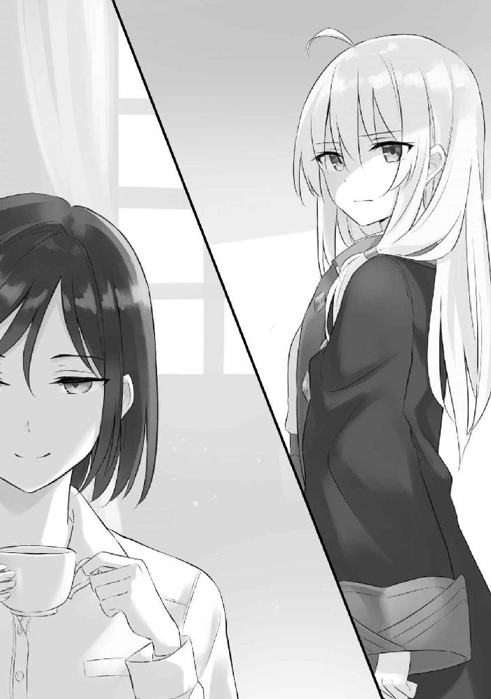
●
灰の魔女が去ってから数日後に、その国で新たな大統領が誕生した。
それは歴代最年少の大統領でもあり。
おそらくその国の歴史が変わった瞬間でもあった──と新聞各社は白々しく評した。
何よりの誠実さを武器に大物政治家に立ち向かい続けたマシューに軍配が上がるなど、選挙が始まった当初は誰も想像してはいなかった。
ゆえに新たな大統領マシューの誕生に国中が沸いたのも当然の事と言えた。
この国はきっと正しい方向に導かれる──誰もがそう確信していた。
「ありがとうございました」
国のはずれにある小さな民家。
そこで一人の男が、うやうやしく頭を下げていた。
それは国を担うはずの男であり。新たな大統領となったばかりの男であり。あるいは、誰よりも誠実な政治家だった。
政治家らしく長々と首を垂れたのちに、彼は顔を上げた。
その視線の先では、かつての妻が退屈そうに頰杖をついていた。
「また私を導いてください」
すがるように、彼は言葉を漏らす。
「次は何をすればよろしいですか」
かつての妻の口元が、その一言によってほんの少し吊り上がった。
誠実な政治家がそこには確かに、いた。
しかし、その誠実さが、最初から国になど向けられていなかったことを知る者はいない。それが誰に向けられていたものなのかをこの国の人々は誰も知らない。
これまでも。
これからも。
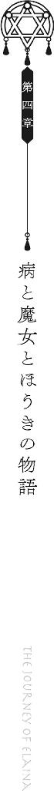
魔法使いの中でも最高位を意味する称号が魔女ではありますけれど、魔女が何もかもすべて恙なくこなせる特異な人間を意味すると思い込んでいる人を見ると、私はどうしても首をかしげてしまいます。
魔女とて完璧ではありません。ミスだってします。できないことだってあります。
例えば当然、死んだ者を生き返らせることはできませんし、世界中の時間を止めることもできませんし、気候を自由自在に操ったりすることも......いえ、できる魔女もいるのかもしれませんが私にはできません。できたら雨の日に引きこもったりしません。
それと不老不死になったりすることもできません。生きながら死ぬこともできません。起きながら寝ることもできません。あとはなんか色々ありますが要するにあらゆることができません。できることを並べるよりも恐らくできないことを並べるほうが容易いくらいに、できないことは多岐にわたるといえるでしょう。
まあべつに、これらのことはできなくとも別に困ることではありませんし、できたとしても「あっそうなんですねー。ふーん」と欠伸を漏らしてしまうくらいにしょうもない物事なのですけど。
しかし。
もしも、もしも、どんな病でも治すことのできる魔女がいたとしたら、どうでしょうか。
魔女にもなれば大抵の人は怪我を治すことのできる魔法が扱えたりするのですけれど、どんな病も治すことのできる魔女などという者は、長旅の最中、ただの一度も見たことはおろか、聞いたことすらありません。
そんな人がいたら素敵ですよねー。
是非是非、この重い病に伏している私のもとに来てほしいものです。都合よく現れて私を治してくれたりしないものでしょうか。
「......けほっ」
でないと、もしかしたら私は死んでしまうかもしれません。
私は今、まさに死の淵にいました。生死に関わる重大な病に罹っているのです。
こうして独白をしている今も、見上げる天井はぐわんぐわんと歪んでいて、頭がぐるぐると熱を上げているのが分かります。時間がとてもとても遅く流れているように感じます。時計の秒針ってあんなに進むの遅かったですっけ......。
「大丈夫ですかイレイナ様」
ベッドの脇から、私を慮るような柔らかい声が響きました。頭をもたげると、私のような顔をした女性が私を見下ろしています。
私は首を振ろうとしましたが、だるくてそれどころではありませんでしたので、口をぽかんと開いて、吐息にまみれた声で答えました。
「......じゃないです......しにそうです......」
ところで話は変わりますが。
不運にも私が患うことになってしまった、生死に関わる重大な病とは。
それは何か。
そう、風邪です。
●
「いやいやただの風邪くらいで何をおっしゃるんですか」
弱々しくベッドから天井を見上げるイレイナ様をわたくしは見下ろしていました。
彼女と常日頃から行動を共にしているほうきたるわたくしですから、彼女がこんなことになった理由も存じ上げております。真冬であるというのにもかかわらず「なんとなく今日は涼みたい気分です」などとしたり顔で窓を全開にして眠ったのが悪いのです。イレイナ様はごく稀にどうしようもない阿呆に成り下がるのです。
「うう......私はきっとこの国特有の厄介な風邪に罹ってしまったんです......きっともうすぐ死んじゃうんです......ちょっとやそっとじゃ治る気がしません......しにそうです......」
風邪により身体的に弱り果てている我が主は精神面においても脆弱さを増しているようでした。あるいは普段からあれこれと考え事をしながら生きている弊害でしょうか。今の彼女は弱さが前面に押し出されているといえます。
「大丈夫ですイレイナ様。きっとすぐに楽になりますよ」
「そうですよね......だってこのまま死にますからね......」
「違いますそういう意味じゃないです」
「えっ......？ 安楽死......ですか......？」
「そういう意味でもないです」
しおらしさを通り越してもはや卑屈です。
風邪くらいで死ぬわけがないでしょうに。
しかしわたくしがこうしてイレイナ様と会話ができているということは、つまりイレイナ様がわたくしが人の姿になるように魔法をかけたということなのですが。
わたくしの記憶が確かなら、「うう......薬を......くすりを買ってきて......ください......」と息絶え絶えに呻きながらわたくしを呼び出していたはずですが。
「............あの、わたくしはお薬を買いに行きたいのですが」
「だめです」
今の彼女はもしかするとわたくしが知っているイレイナ様ではないのでしょうか。
ベッド脇に座るわたくしのスカートをつまんで彼女は離さないのです。イレイナ様の体調不良が災いしてわたくしが人の姿になるまでに随分と時間を食ってしまったせいで、わたくしに薬を買いに行かせようとしたイレイナ様から、独りになる心細さから逃げられないイレイナ様へとなり替わってしまっておりました。
わたくしが人の姿になったとき、イレイナ様は床に倒れておりましたから、すぐにベッドに運んだのですが、
「......いかないで下さい......」このように薬を買いに行こうとすると即座に彼女は潤んだ瞳を向けてくるのです。「いいんですか......私このまま一人でいたら死にますよ......舌嚙んで死にますよいいんですか」
「その前に舌を嚙む気力があるのですか」
「ありまふ」
「ないですね」
「ありまふ」
「ないですよねどう見てもないですよね」
「いかないでください」
堂々巡りでした。
「ですが行かなければイレイナ様の病状はよくなりません」わたくしは心を鬼にしてイレイナ様を振り払い、立ち上がりました。
「あっ......」
そのときのイレイナ様の表情といったら、それはもう道端に捨てられた子犬のような切なさをもっていて、筆舌しがたいくらいに弱り切っていて、今にも泣きそうなその顔にわたくしは幾分か心を痛めました。存外きゅんと来たこともここに書き加えておきましょう。
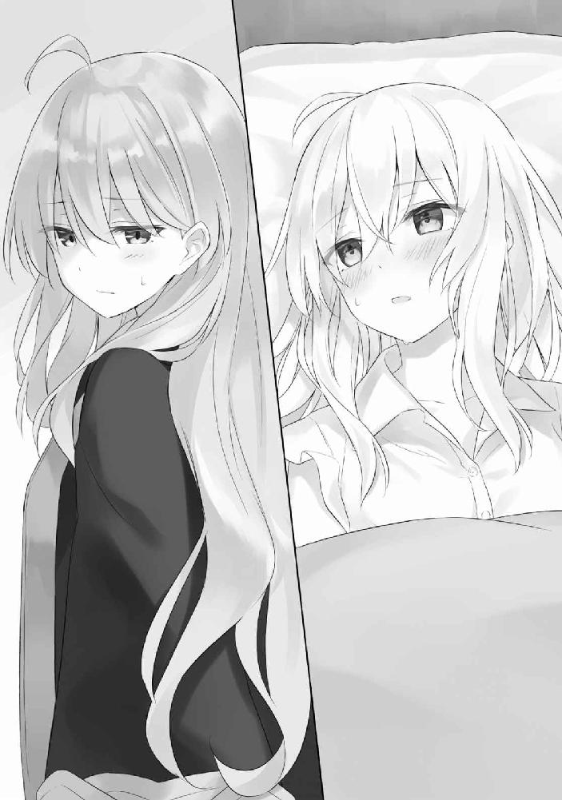
「......では、せめてイレイナ様が寝るまで隣で本を読んで差し上げます。それならどうですか？」
イレイナ様を治すために薬を買いたいわたくしと、独りになりたくないイレイナ様の間にあった折衷案でございます。
わたくしのその提案にイレイナ様はほんの少しほっとした表情を浮かべていました。
「それなら......分かりました......じゃあ、私が起きる前に、帰ってきてくださいね......？」
「............」
何でしょう......この、庇護欲と嗜虐心が同時にくすぐられる感覚は......。
こほん、とわたくしは咳払いをして、わたくしに降って湧いたよこしまな感情を追い払ってから、イレイナ様のベッドに腰を下ろしました。
そして開いた本は、イレイナ様が持ち歩いている『ニケの冒険譚』でした。これなら何度も読み返しているでしょうし、飽きてすぐに眠りに落ちるはず。
「えー......昔々、あるところに魔女が──」
「すぴー」
寝ました。
開始五秒でイレイナ様は眠りに落ちました。
「............」
何とも言えない気分を抱えたままわたくしが部屋から出て行ったのは言うまでもないことだと存じます。
●
イレイナ様がこの国を訪れたのは今より数日前だったと記憶しておりますが、どうやら街にはその頃から病が蔓延しているようでした。
曇天の空の下、街はどんよりと陰っており、通りを歩く人々はその誰もが漏れなく身体から生気を抜かれたように力なく、まるで生ける死体のように歩いております。
すれ違う声よりも咳やくしゃみのほうが多いくらいでした。誰もかれも体調を崩しておられるものですから、わたくしも自然と体調が崩れてきたような気がします。気がするだけですけれど。そもそもわたくしは物ですから風邪など無縁でございます。
「ええと......ひとまず薬屋を探せばいいのでしょうか......」
わたくしは街中を歩き回りました。
適当に歩いていれば何となく着けるだろうという持ち主さながらの当て推量で道をゆきました。
そして薬屋は、案外わたくしたちが泊まっている宿屋の近くにございました。こんな距離ならイレイナ様が直々に来ればよかったのでは？ とさえ思ったほどでございます。
しかし。
「おいどうなってんだよぉ！」「とっとと薬出せオラぁ！」「私の子供が病気で大変なの！ 早くなんとかして！」「薬屋のあんたが薬作らなくて誰が作るっていうのさ！」「早く出てきて！」
お店の前には人だかりができあがっておりました。
流行り病が蔓延したことによる行列──などではなく、お店を取り囲むようにして群がっている人々からは怒号が飛び交い、ブーイングの嵐が巻き起こっておいででした。
これは一体何事なのでしょうか。
「ひぇっひえっひぇっ......大変な事態になっちまったねぇ」人だかりを傍目に見つめていると訳知り顔の老婆が突然わたくしの横に現れました。「やれやれ」と肩をすくめながら老婆は、
「この国にはのう......今、流行り病が蔓延しとるんよ」
「あ、はあ......」
でしょうね。
「んで、この店の店主の女が流行り病の特効薬をいつも作ってくれてたんじゃけどな？ ここ最近、薬を作らなくなったんさ」
「そうなのですか......」
まあなんとなくそんな気はしていましたが......。
「そのせいで国は今、滅茶苦茶さね。病に罹っても治す者がおらんてからに。おかげで薬屋の前はこんな騒ぎになっとる始末さね。大変なことじゃわ。ひぇっひぇっひぇっ......」
「............」
そして老婆は見れば分かることをただ説明するだけして帰っていきました。何がしたかったのでしょうかあの老婆は......。
そもそもどう考えてもこの薬屋の前におられる方々は文句を垂れる元気が有り余っているようですし、薬など飲まなくても寝てれば治りそうなものだとも思えますけれども。
ともあれ、このようなやかましい状況下では薬はまず間違いなく手に入らないでしょう。
困りました。人だかりができあがっていることから察するに、恐らくイレイナ様が罹っている病に対する薬を作れるのもこの店の店主だけでしょうから。
............。
いやいや。おやおや？
これは言い換えれば、この店の店主に薬さえ作らせることができれば、イレイナ様は元気な姿に戻るということでもあるのでは？
では、さしあたって、薬屋の店主さまに会いに行くとしましょう。
「引きこもってないで出てきやがれってんだ！」「そうよそうよ！」「薬を売れぇ！」
人ごみをかき分けて、わたくしはこっそりと店の裏へと回り込みました。
なに、わたくしは物でございますゆえ、人には分からないことが分かるのです。
例えば、店の裏手に出入り口が別にあること、とか。
「......あった」
そして実際、ありました。『ふふふ......どうやら見つかってしまったようね』と裏手の扉が妖艶な雰囲気をまとわせながら佇んでいました。『しかしわたくしをこじ開けることができるかしら？ わたくしの鍵穴はとても強情よ？』何かよく分かりませんが微妙に挑発的な態度をとっておられるのが腹立ちます。
わたくしは扉がのたまう言葉を無視しつつ、その辺で針金を調達。
そして鍵穴にあてがいました。
なに、わたくしは物でございますゆえ、ピッキングもお手の物でございます。
『ふっ......。私の守りは固いぞ？ 私はこの操を生涯ひとつの鍵に対してのみ捧げて来たのだからな！ そう簡単に開けられてたま』かちゃかちゃ。『あんっだめぇ！ 針金で開いちゃう！』
あっさり開きました。即開きでございました。なんてガードの緩い鍵穴なのでしょうか。
『ま、待ちなさい！ あなた......わたくしをどうするつもりですの？』開けました。『ああ......そんな......やめてくださいまし......恥ずかしいですわ......』閉めました。『ありがとですわ！』
やかましい扉を抜けた先には、薄暗い一室が広がっております。
入った瞬間に感じたのは、薬屋独特の、薬品の臭いでした。鼻をつんと刺激するような臭いが蔓延していて、自然と眉根が寄ってしまいます。
そこはとても散らかっている部屋で、もしくはあらゆる物が悲しんで泣いている部屋でもありました。床に散らばった紙切れたち。調合途中で投げ捨てられたであろう瓶。廃棄された材料たち。アンティーク調の家具が最低限置かれておりましたが、それらすべてに、そういった物どもが覆いかぶさっていたために、まるでゴミ屋敷のように見えました。
その一室の中を飛び交うのは、物たちの阿鼻叫喚の嵐。棄てられたことを嘆き悲しんだり、忌みごとを吐いたりしながら、彼ら彼女らは部屋の中央にてうずくまる家主を罵っておられました。『おい棄てんな！』『ちょっと！ 床に転がったままなんですけど！』『もっと大事に扱えこのダメ人間が！』などと。まるで外の民衆のように。
「............」
もちろん、その家主に彼らの言葉は届きません。物ですから。
「ふふふ......もう終わりですわい......」
いえ、もしかすると届いておられるのやもしれません。家主の女性は白衣を着込んだ金髪の女性でした。普段はとても美しい方なのでしょうけれど──目が虚ろになり、そして顔は蒼白。まるで生気が見えません。
「やってられませんわい......なにもかも最早どうでもいい......」
彼女はこの世の終わりのように呟きました。
『おい希望を捨てんな！』『ちょっと！ 元気出しなさいよ！』『もっと自分を大事にしろこのダメ人間が！』なんか物共が励ましておりました。もちろん声は届かないのですけど。
「あのう......だいじょうぶですか......？」
わたくしは彼女の前にて跪いておりました。なんとなく目の前の女性を憐れに思ったのです。
顔を上げた彼女はいきなり部屋の中に侵入してきたわたくしに対してさして驚くわけでもなく、「あ......どうも......」と会釈をすると、
「介錯してくれませんか......」
などと突拍子もないことを言い出してくるのですから困ります。何をおっしゃる。
「一体何があったのですか......？」
「もうわたしはだめなんですぅ！ 薬なんて作ってらんねーですよ！ やってられるかちくしょー！」彼女はそのまま仰向けになりながら泣きました。ヤケクソでした。
「あの......あなたが薬を作らないことで困っている人がたくさんいるみたいなんですけど」
「知るかバカヤロー！ わたしだって病気なんでい！ もう薬なんて作っている暇なんてないんですわい！」
「あら病気ですって？」それは大変でございますね。「何の病気に罹ってしまったのです？」
すると彼女は、
「恋の病！」
「ん？」
「恋の！ 病！」
なるほど健康でございますね。
名も知らぬ薬剤師さんは、呆れるわたくしを無視してぽつぽつと事情を勝手に語り始めました。
「実は最近、仲良くなった男性がいるんすよ。わたしもその人のことは憎からず思っていたというか、実際実のところちょっと好きだったりしてたんすけど......このまえ、その男性にネックレスを貰ったんですよ、ネックレス。宝石をあしらったネックレスでとても綺麗なものだったんですけど、それ、調べてみたら、石言葉で『友情』を表す宝石でしてね？ ほら、つまりこういうことですよ。『お前とは友達でいたいから別にお前とつき合う気はおろか結婚する気も毛頭ないけど今後は身体の関係だけは築き上げていこうぜ！』ってことだったんすよ！ こんな酷い裏切りありますか！ いや、ない！ ちくしょうめぇ！」
「......はあ」
彼女はネックレスをぶん投げて泣きました。しかし数秒後に「ああっ......でも嫌いになれない！ 好きぃ！」とネックレスを拾いに行ってしまうのですから情緒不安定で仕方ありません。
しかしどうやら彼女のこの恋煩いを何とかしない限りは薬は作ってもらえないということなのでしょう。
でなければわたくしも外の連中に紛れて彼女に文句を吐き続けることとなってしまう気がします。
それではイレイナ様がもとにもどりません。困ります。なんとしてもこの薬屋さんには薬を作ってもらわねば。
「あの、つかぬことを伺いますが」
「何よ！」
「......その恋煩いが解消されれば、あなたは薬を作ってくれますか？」
「もちろん！ まあ無理でしょうけどね！ ふんっ！」
もうやだー！ と彼女は不貞腐れて寝転がりました。
もうやだー！ と叫びたいのはむしろこちらのほうなのですが、まあいいでしょう。
しかし、やらねば治らないというのならば、致し方ありません。
「ではわたくしがあなたの悩みを解決して差し上げましょう──」
と、わたくしは彼女の肩に手を触れて、ついでに一言添えておきました。「ところで病は気からという言葉をご存じですか」
「えっ。突然なに？」
「いえ、なんとなく上手いことを言った気分になりたかっただけです」
ひとまずここは、彼女の想い人たる男性を探すところから始めなければなりませんね。
●
彼女からネックレスを借りて、わたくしは彼女の家を出ました。
向かった先は彼女の想い人たる男性の住居でございます。
「ここからどこに向かえば男性の家に着けますか？」
わたくしはネックレスを手からぶら下げておりました。
わたくしは物ですゆえ、当然ながらネックレスとも言葉を交わすことは可能でございます。
『この路地を三ブロック進んだ先で右折すると男性の家デース』
「それはまことですか」
『まことデース』
実に参考書じみた言葉が返ってきました。ネックレスにつき従うように三ブロック先で曲がると、確かに男性の家がございました。いえ、わたくしはそもそも男性の家がどこにあるのかは分かりませんので、当然、ネックレスが『ここです』と声を漏らした家があっただけなのですが。あ、間違えた。『ここデース』と声を漏らしていました。
そこは何の変哲もないごくありふれた民家でございました。しかしネックレスが言うのですから、ここが男性の家で間違いはないのでしょう。
「ごめんくださーい」
わたくしは呼び鈴を鳴らしました。
待ちました。
しかし反応はなし。
「ごめんくださーい」
今度は扉を叩きました。
反応はなし。
時間もなし。
致し方ありません。
『ま、待て......！ それを私の中に入れてどうするつも』かちゃかちゃ。『だ、だめぇ！ 針金でおかしくなっちゃう！』
開けました。
入りました。
「......ふふふ......もう僕は......だめだ......」
扉の向こうにある一室には、男性がうずくまっておりました。生気を失ったうつろな瞳が壁の一点をじっと見つめ、「ああ......僕も壁の沁みになりたい......」と人生を半ばあきらめておりました。
まあ。
一体何があったのでしょう？
「失恋したんだ......僕......」
ピッキングで押し入ったわたくしに対して驚くわけでもなく警戒するわけでもなく自分自身の身の上を勝手に語りだす彼はおそらくこの上ないほど疲れ切っておられるのだと思います。よく見たら目の下にクマがございます。きっと夜も眠れないほど何かに疲れておられるのでしょう。
「ああ......もしかして僕の家の物を盗みに来たのかい......好きに持って行ってくれ......もうなにもかもぼくはどうでもいいんだ......」
いえ、何が原因かはなんとなく分かるのですが。
男性は生気が抜けるようなため息をこぼしました。
「実はね......この前、ちょっと気になっていた女の子に、ネックレスを渡したんだ......そうしたらね、それ以来、女の子は部屋に引きこもるようになってしまってね......、今までは薬を作っていたのに......作らなくなっちゃったんだ......そうだよね......僕みたいな気持ち悪い奴にネックレスなんて渡されたらキモイよね......」
男性は今にも死にそうな雰囲気で溢れておりました。
「あの......だいじょうぶですか......？」恐らくわたくしがただの空き巣でも彼の身を案じていたであろうと思えるくらいに彼は憔悴しきっております。
「もうダメだ......」
「あの、元気出してください......あなた、そこそこ素敵な見かけをしていますよ？」ぽん、と彼の肩に手を置くわたくし。
「やめろよ！ 優しくするなよ！ 泣けてくるだろうが！ 好きになっちゃうだろうが！」
「ああ素敵な見かけというのは客観的に見てですけれどね？ わたくしは別にあなたにときめいたりなどはしていませんので悪しからず」
「......ひどくないかい」
「普通でございます」
「............」
「ところで女性に渡したというネックレスはこちらですか」
わたくしはネックレスを掲げてみせました。
「そ、それは......！」男性の目の色が変わります。「どうして君が持っているんだい......？ ああ......そうか......、彼女、それを捨てたんだね......僕がキモイから......」
なんて面倒くさい男なのでしょうか。
「違います。少々あなたにお話がありましたから、借りてきたのです」
わたくしはそして、言いました。
「このネックレス──これが示す意味をあなたはご存じですか？」
「............？」彼は眉根を寄せて首を傾けました。「意味だって......？ いや、それはただ綺麗だったから買っただけだけど......」
「............」
彼はこの宝石に『友情』などという石言葉が言い含められていることなど気づいてはいなかったと。
そういうことなのでしょう。
いえ、それはもちろん、わたくしとしては最初の時点で気づいてはいたのですが。
『この男性は、「これ、彼女に似合うかなぁ」などと言いながらわたくしめを探しておりましたデース』
そのようにネックレスがのたまうのですから。
最初の時点から、わたくしにはこの結末は見えていたと言っても差し支えないでしょう。
つまり、要するにこういうことでございます。
二人は紛れもない相思相愛であり。
単純に、相手を思いやる気持ちが行き過ぎてすれ違ってしまっただけであり。
そして、病は気から、ということでございます。
●
「というわけで、はい。どうぞ飲んでください」
「くすり嫌です。粉タイプのくすり大嫌いです」
わたくしが差し出した薬に顔を背けるイレイナ様。
お子様ですか。お子様なんですかあなたは。
「わがまま言わないでください。これを飲まないとよくならないんですよ」
「いーやーです」
「じゃあいつまでも体調崩したままでいいのですか？」
「いーやーです！」
「じゃあ飲んでくださいませ」
「やです！」
ぷるぷると震えながら顔を背けるイレイナ様。
薬を買ってこいと言いつつ買って来たら来たで拒絶するとは一体何なのですか本当に。というか免疫力が弱まっているとあなたは別人になるのですか。そうなのですか。
それからわたくしたちは「飲んでください」「いやです」などとみっともない攻防を繰り返したのち、「んー！ んー！」と嫌がるイレイナ様に結局無理やり薬を飲ませました。
「うええええ......」
イレイナ様は泣きました。
こんな弱ったイレイナ様は見たくなかったとわたくしも泣きました。ついでにイレイナ様のその姿を網膜に焼きつけたりもしました。
「イレイナ様。ところでわたくしはもうすぐ元に戻ってしまうのですが──」
「いやです行かないでください」
「......ではまた本を読みますので......、それで勘弁してくれませんか」
「分かりま──すぴー」
「昔々、あるとこ──ええ......早......」
何はともあれ、こうしてわたくしの冒険は幕を下ろしたのでした。
それから眠っているイレイナ様の髪を撫でたりなど粗相を犯したりもしましたが、これはまあ、イレイナ様のために働いた報酬としては妥当なものでしょう。
ですから恐らくイレイナ様が健康でいつものイレイナ様として目を覚ましたとき、この日記を読んだとしても、恐らく笑って許してくれることだろうと思っております。
○
目が覚めたときには私の熱はすっかり下がっていて、だから思考も冴えていました。
私は熱が出るとどうもいつもとは真逆の性格になってしまうようで、随分とほうきさんには迷惑をかけたようです。
傍らで役目を終えて、ことん、とベッド脇にもたれかかっているほうきは、まるで私の寝顔を見守ったまま眠りこけてしまったかのようにも見えました。
その傍には日記が一冊置かれており、私のものと似たような文字で、私が眠っている間に起こった出来事が逐一記されていました。
............。
読んだらまた熱が出てしまったような気がしました。ああ私ってばこんなにもみっともない姿をさらしていたんですね......しにたい......。
こんなみっともない私になっても、結局なんだかんだと言いながらも私に世話を焼いてくれるほうきさんだから、私がどうしようもなくなったときに、いつだって助けを求めてしまいます。甘えてしまいます。
私はベッドにもたれていたほうきを持ち上げて、膝の上に載せました。
そして、ほうきの穂先を撫でます。ごわごわとしていて、ざらざらとしていて、毛ほどにも気持ちよくはありませんでした。
「今後も困ったときには容赦なく頼らせてもらうつもりですから。よろしくお願いしますね？」
その声は部屋の中に響き渡って、静かに消えてゆきました。
私がまた、何かをやらかしてあなたに物事を頼まなければならなくなったとき。また呼び出して迷惑をかけてしまうかもしれませんけれど──。
そのときも、どうか笑って許してくださいね。
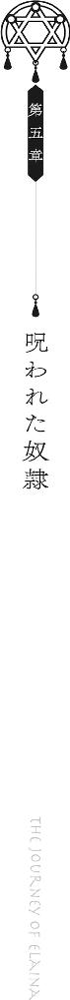
森を挟んで隣り合う二つの国の人々は、互いを遮るように広がっているそれを迷いの森と呼び、忌み嫌いました。
ゆえによほどのことがない限り通ることはなく、国々を繫ぐ貿易路も森を避けて迂回しています。しかし迷いの森を通れば往来のための時間を随分と短縮できることも残念ながら事実で、よほどのこととはつまりそういった場合のことを指しているのです。
事情がなければ入らない森。迷いの森。
その森の中に魔女が一人、いました。
黒のローブと三角帽子をまとった彼女は、魔女でもありましたが旅人でもありました。
彼女は灰色の髪をなびかせながら、瑠璃色の瞳で森を見渡していました。鬱蒼とした森は空からの光をまともに下ろすことはなく、すれ違う木々の幹には苔が生していました。足を進めるたびにぐにゅりとした感触を踏みしめ、彼女は顔をしかめます。
ところで。
森に入る前に『は？ 近道？ やめとけってマジで！ ほんとに迷子になるから！』と近場の国の兵士がわざわざ止めてくれたというのに、その厚意を無下にして、「大丈夫ですって。私、今まで何度もこういう森を経験してきましたから」などという謎の自信に満ちた言葉を漏らし、結局言われた通りになってしまったその魔女は、一体誰か。
そう、私です。
そう、迷子です。
「やってらんねーですよ」
この森を歩き始めてかれこれ一時間ほど。ずっと同じ景色の中をぐるぐると回っているような錯覚に襲われます。
歩いても歩いても森の向こうは一向に見えてきません。私は一体あとどれほど歩けばいいのでしょうか？ というかこれ進んでます？ 本当に同じ場所をぐるぐる回っているのではなくて？
あまりにも退屈な景色が続くものですし、そのうえ私は一人ですし、心細さのせいで私はすっかりこの森にうんざりしてしまっていました。
私はそれからもいくらか歩き続けましたが、一向に景色が姿を変えることはありませんでした。
やがて私が疲弊と退屈さとともに、いくらかの苛立ちも募らせた頃。
ようやく、景色は違う色を見せてくれました。
「............」
私が進む先に、一人の女性の背中が見えました。
髪の色は黒色に近い青。肩を過ぎるあたりまでさらりと伸びています。着ている服は髪よりも黒いドレス。ロングスカートは泥ひとつすらついておらず、綺麗そのもの。
片手には籠を持っており、彼女はしきりにしゃがんだり、立ったりしながら、何かを摘んでいました。そのように見えました。
まるで近所の森で山菜でも摘んでいるかのように見えました。じめったい森に似合わず陽気な鼻歌を歌っていますし、呑気そのものです。
もしかして。
この森に住んでいる人なのでしょうか──。
「あのう」
私は特に考えもせず、彼女に声をかけていました。
直後。
「ひゃあああ！」彼女はとてもとてもびっくりとした表情をこちらに向けて、そのまま転びました。「あわ、あわわわあわわ......！」
慌てふためくせいで彼女の籠がそのまま頭に乗っかり、中からキノコがどさどさと落ちました。なるほどキノコを摘んでいたようです。キノコですかぁ......。
「ど、どなたでございますか？」
「あ、私、旅人のイレイナと申します」私は彼女に手を差し伸べます。「大丈夫ですか？」
彼女は私の手を見て、顔を見上げて、やがて自身がずいぶんとみっともない状態になっていることに気づき、また慌ててキノコを籠に戻したのちに、手をとりました。
「ありがとうございます......」
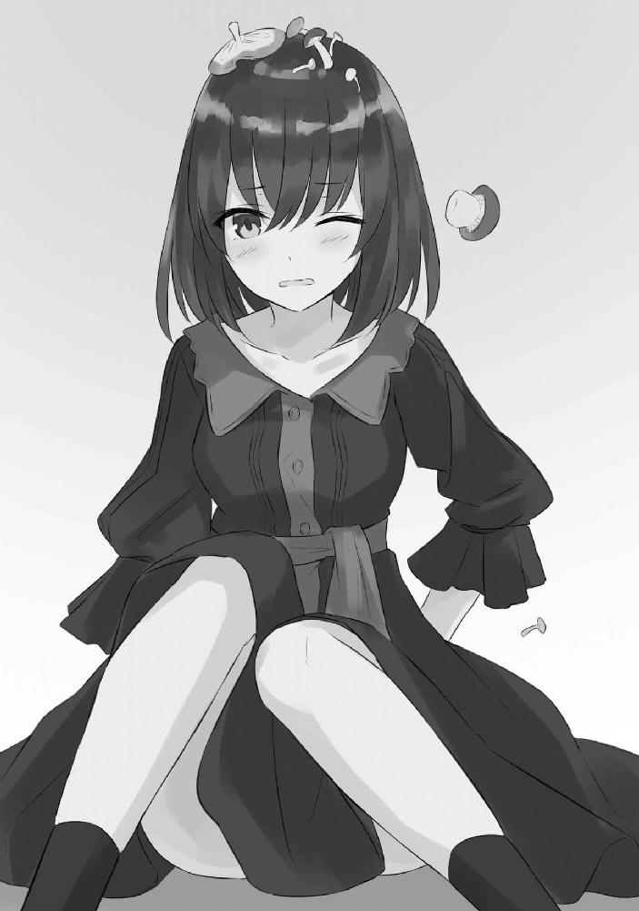
ぐい、と私の手を摑んで立ち上がる彼女。近くまで来て気づきましたが、背丈は私よりも少し高いようです。
「あっ。私、ユースティアと申します。イレイナさんはここに何か御用で？」
「............」私は目を逸らしました。「実は、ちょっと国から国への近道に」
「あっ。じゃあ迷子ですか？」ぽん、と手を叩くユースティアさん。
「............。いえいえ。違いますよ迷子なわけないじゃないですか。国から国へ渡るために近道としてこの森を通っているだけです」
「え？ でも、ここ、結構奥のほうですよ？ ここを通っている時点で森の周りにある迂回ルートよりも遠回りになってますけど」
「............」
「迷子ですか？」
「......迷子ですけど何か」証拠を並べられた挙句、不貞腐れる私がそこにはいました。
しかしユースティアさんは私のそんな表情など気にすることもなく、また手をぽん、と叩いて、
「でしたら道案内でも致しましょうか？ この森はかなり入り組んでいますから、一人で出るのは骨が折れますよ」
鬱蒼とした森に似合わずのほほんとした雰囲気を備えている女性でした。
「それは......ありがたいです......はい」
などと自らの失態を渋々認めながら頷いた直後でした。
ぐううう、と何かが鳴りました。何か得体のしれない獣の鳴き声かと思ってあたりを見回してみたのですけれどその音はどう考えても私のお腹のあたりから発せられていました。つまり私が腹に獣を飼っているということでしょうか。そんな馬鹿な。
驚愕する私にユースティアさんは苦笑で応えました。
「道案内の前に、ごはん食べていきます？」
彼女が住む家へと向かう最中、色々とお話をしました。
ユースティアさんは、どうやらあえて人が入ってこないこの森の中に住んでいるようでした。私には生活しづらくて仕方ないようにしか見えませんが、彼女は「住めば都ですよ」と語っていました。キノコだらけの都って何なんでしょうね。
彼女の家はキノコを獲っていた場所からさほど離れておらず、およそ数分程度で着いてしまいました。入り組んだ森の中、木々が避けるようにぽっかり開けた場所に、彼女の家はありました。
屋根や壁、出入口に至るまですべて木でできており、森の雰囲気によく溶け込んでいました。鬱蒼とした森と反して太陽の光を贅沢に浴びていることを除けばまさに森と一体化しているといえるでしょう。
家のすぐそばには洗濯物が干してありました。生活感があります。
家の隣にはどなたかのお墓がありました。名前は見えません。ただ、こんもりと盛られた土の真新しさからみて、土に埋まっているどなたかが亡くなったのはそう昔のことでもないようです。
庭のあたりでは男性が薪を割っていました。ぱっこんぱっこんと勢いよく斧を振り下ろす様は爽快ですらありました。
男性はやがて私たちに気づき、こちらに振り向きます。
「ああ。お帰りユースティア。......そちらの人は？」
爽やかな青年でした。歳の頃は二十代半ば程度でしょうか。彼は私に顔を向けたまま首をかしげていました。
ユースティアさんはとてとてと小走りで男性の元に寄ると、
「ただいま戻りましたっ！ ご主人様」と、彼に抱き着きました。「あちらはイレイナさん。迷子の魔女さんです」
実に不名誉な紹介です。
しかしその一言で私の説明は済んでしまうのも事実で、彼は「ああ」と納得したように頷いて、
「......まあ、この森はかなり迷いやすいからね。ここに連れてきたってことは、ご飯をご馳走するつもりなんだろう？ ユースティア、準備してくれるかい？」
とユースティアさんを家の中へと促しました。
ついでに彼は、
「ご飯ができるまでしばらく時間がある。よかったら居間で君のことを教えてくれないかな──ご覧の通り、僕たちはよその人と会えることなんて滅多にないからね」と。
私は無言で頷きました。
「ありがとう......ああ、申し遅れたね、僕の名前はジュリオ。よろしく迷子の魔女さん」
「イレイナです」
実に不名誉な呼称です。
「──へえ。それで迷子になったのか。君はもしかして旅人のわりにうっかりしているほうなのかな」
「失敬ですね。今回はたまたまです」
暖炉に火がくべられている居間には暖かい空気が流れていました。キッチンでせっせと料理を作るユースティアさんに、私の相手をしてくれるジュリオさん。
なんだか幸せな夫婦の住まいにお邪魔しているような気分でした。
たぶん二人はそういった関係ではないのでしょうけれど。
ユースティアさんはジュリオさんをご主人様などと呼んでいましたから。
「あなたたちはどうしてこんな森の中で住んでいるんですか？」私が首をかしげると、彼は「ああ」と何てことないように、平然と頷きながら、
「僕たちはここに住んだほうがいいからね」
と答えました。
「どういうことで？」
「この森は人を迷わせる迷いの森と呼ばれているだろう？ 近隣の人々はよほどの事情がなければ入らないし、よそ者が入ろうとすると止められる。迷子になるからね」
「......そうですね」目を逸らしました。『は？ 近道？ やめとけってマジで！ ほんとに迷子になるから！』とわりと本気で止めてくれた兵士さんの顔が脳裏にちらつきましたので。
「僕たちは隠居してるんだ。あまり他人に会わないほうがいい」
「......私も他人のはずですけれど」
「きみはユースティアが連れてきた子だから例外かな」彼は言いました。「それに、僕らだってたまにはよその人間と喋りたい気分にだってなる」
矛盾してはいませんか。とは尋ねる気にはなりませんでした。
それよりも気になることがあったからです。
「......人に会わない理由は、もしかして裏庭のお墓が関係しているんですか」
私はテーブルの下でこっそりと杖を出す準備に入っていました。
語気にわずかに含まれた警戒心は彼もすぐに悟ったようです。彼は笑いながら、
「もしかして僕らがこの家の住民を殺して住んでいる、とでも思っている？」
「............」
「ないよ。それはない。安心してほしい。裏手にある墓は確かに人のものだけれどね──」
彼は、そして言いました。
吐き出すように。
あるいは、何かを懺悔するように。
「あれはね、悪者の墓なんだ」
○
そして彼が語ったものは、ユースティアさんの昔話でした。
その昔──ユースティアさんがまだ幼かった頃、彼女は奴隷として売られてしまったそうです。
どうして奴隷になったのかは分かりません。けれど望まれてそうなったわけではないといいます。彼女が覚えている最も古い記憶は、朧げな景色の中で彼女を優しく撫でる母親の姿でしたから。
何か事情があって、ユースティアさんは親とはぐれ、奴隷になってしまったのでしょう。
最初に彼女が買われたのは、五歳になった頃のこと。成金の男が彼女の容姿を気に入り、買って行きました。しかしわずか半年で彼女はまた店に戻りました。商人が変死したのです。
次に彼女を買って行ったのは貴族の男でした。メイドとして彼は彼女を買いました。そこでは数年間過ごしたそうですが、ユースティアさんをいたく気に入っていた貴族の息子が変死したことにより、彼女は再び店に戻ることになりました。
それからも彼女は金持ちの家を何度か転々としましたが、なぜか彼女が買われて行った先では、毎度のごとく誰かが変死しました。それは彼女を買った当人であったり、あるいはその息子であったり、もしくは取引先の人間であったりとまちまちですが、結局彼女は奴隷商のもとへと戻されてしまったそうです。
まるでそうなるように呪われているかのように。
やがて彼女は死神と畏れられるようになりました。彼女を買おうとする者はいなくなりました。
彼女が十五歳の誕生日を迎えた頃、とある青年が彼女に一目惚れをして、買いました。
それがジュリオさんでした。
彼は一目みたときから、彼女に心底惚れこんでいました。こんなにも綺麗なのに、一体どうして売れ残っているのか？ 怪訝に思いながらも、彼は彼女を家へと連れ帰りました。
元々、ジュリオさんが彼女を買った理由は──容姿をいたく気に入ったからとはいえ、しかし、さほどよこしまといえるような理由でもありませんでした。
雇われの傭兵として色々な国を渡り歩く彼は、炊事をはじめとする家事がまるでできず、ゆえに奴隷を買って、身の回りの世話をしてもらいたいと考えていたのです。頻繁に国から国を渡るせいで親しい間柄の人間も作れず、寂しさもあったのかもしれません。
ユースティアさんはとても働き者でした。彼の言うことをしずしずと従い、まさしく奴隷らしく主人たるジュリオさんのために尽くしました。ジュリオさんがユースティアさんの外見だけでなく、その生真面目な性格にも魅了されるまで、さして時間はかかりませんでした。
彼女に心奪われた彼は彼女を射止めるために、日夜あれこれと策を弄しました。
「ユースティア。来てくれ」ある日、仕事中の彼女を呼び止めて、言いました。「いつも仕事ご苦労様。あの......よかったら、これ」
彼の手には花束がありました。彼女が喜ぶだろうと思ったのでしょう。
しかし彼と彼女とでは価値観があまりにも違いました。生きてきた立場が違いすぎました。
「これを飾っておけということでしょうか。ご主人様」
そのとき、いつものように真面目な顔でユースティアさんは首をかしげたそうです。
「えっ？ いや......あの、プレゼントのつもりで......」
「プレゼント？ どうして主人が奴隷にプレゼントを渡すのですか？」
「............」
「......？」
彼はその後もプレゼントを何度か渡しましたが、彼女は怪訝な顔をするばかりで、喜ぶことはただの一度もありませんでした。
単純に不思議だったのでしょう。彼女にとって彼はただの主人でしかないのですから。
物で釣ることはどうやらできないらしい。では何が望みなのか？ 彼にはそれが分かりませんでした。
「ユースティア。君は何か望みはあるかい？ ほしいものとか、将来的になりたい自分とか」
その言葉に彼女は生気のない瞳で答えました。
「ありません」
端的に、とても冷たく。
「私には、何もありません」
そのとき彼は気づいたそうです。
今の彼女は空っぽで、ただ仕事をこなすだけの人形そのものだと。
だから彼は、彼女が喜びそうなことを探すのを諦めました。何もない彼女はきっと何をしても喜ぶことはないでしょうから。
彼はそれから、いろいろな場所に彼女を連れていきました。
一緒に旅行に行きました。一緒に買い物に行きました。一緒に演劇を見ました。一緒に図書館に籠りました。いろいろなことを一緒にやりました。料理や洗濯などの家事を彼女に教えてもらいました。自分自身の身を守る術としてある程度の剣術を教えました。
毎日のように、彼は彼女と一緒に、いろいろなことをやりました。
やがて空っぽだった彼女の中には、知識や、教養が詰め込まれていきました。
その頃には、彼女は今の彼女のように、柔らかい雰囲気の女性になっていたといいます。
「ユースティア。来てくれ」ある日、彼は彼女を呼び止めて言いました。「いつも仕事ご苦労様。あの......よかったら、これ」
彼の手には花束がありました。彼女が喜ぶだろうと思ったのでしょう。
「ありがとうございます......ご主人様」
その花束を受け取った時の笑みは、とてもとても美しかったと、彼は言いました。
やがて彼と彼女は、主人と奴隷という関係から、まるで恋人のような関係になったといいます。
けれど。
「──僕と彼女の関係は、それからも相変わらず進展することはなかった。僕は彼女に触れることができないし、彼女もそれを許さない。僕たち二人は本当の意味で幸せになることができなかった」
それは一体どういう意味なのでしょう？
彼は首をかしげる私に、言います。
「彼女は呪われていたから」
言葉が示す意味が一体何なのかを私は測りかねていました。
そのときです。
「そのお話の続きは、私からします。ご主人様」
ことん、と私たちが座るテーブルに、料理が並べられ始めました。どうやら長話が過ぎたようです。ユースティアさんの料理ができあがってしまっていました。
「お話の続きの前にまずはお食事をどうぞ。冷めてしまわないうちに」
ユースティアさんは、にこりと笑みを浮かべました。
○
食事を食べ終わったあとで、彼女はとてとてと若干小走りで紅茶を三つ、テーブルに置いてから、
「......ここから先の話は、できれば私の口からしたかったんです」
と恥ずかしそうにしていました。
「ジュリオさんはあなたを普通の奴隷じゃないと言っていましたけど......」私は軽く礼をしてから紅茶を一口飲みました。
「ええ。普通の奴隷ではありません。──だって普通の奴隷はご主人様とこんな風にのんびりと暮らしたりしないでしょう？」
「............」
「............いえ、それだけではありませんね。私の生い立ちを聞いていれば、なんとなくお察しできるものかとは思いますけれど......」
彼女は淡々とした様子で、言いました。
「私は、今までの主人を死に至らしめてきた悪い奴隷なのです──」
その昔。
彼女は色々な主人のもとを転々としていました。あるときは主人が死に、あるときは主人の息子が。必ず誰かが死んで、彼女は再び奴隷商のもとに戻る形で、結局いつまでも奴隷として生き永らえてきました。
彼女が今までの主人たちを自らの意思で屠ってきたわけではありません。彼女にはそもそもそんな力もなければ知恵もありませんでしたから。
彼女は生まれてこのかた、ずっと奴隷らしい奴隷をしてきただけでしたから。
初めて仕えた主人が死に至ったとき、彼女は心底ほっとしたと言います。最初の主人は奴隷に手を出すような男だったのです。彼が死んだのは、彼女に襲いかかった直後のことでした。
それから次の主人に仕えたときは、主人自体は悪い人ではなかったにせよ、その息子が、彼女に惚れこんでいました。息子は彼女に暴行しようとした直後に命を落としました。
それからも、彼女は、奴隷という立場の弱さから──それを都合よく解釈した男たちに何度も狙われましたが、その度に相手方が死に至り、奴隷商のもとに戻されたと言います。
さすがに彼女も自身に起こっている異常には気がつきました。
「どうやら私には毒があったようなのです。そういう呪いが私にはありました」
身体を触れ合うだけならば何の異常もありません。しかし、唾液や汗をはじめとする体液に毒が含まれていると彼女は語りました。
「私の唇を奪った男は、直後に命を落としました。私を襲おうとした男たちも同様です。彼らは全員、私の身体に触れて、そのあとで死んでいきました」
それがただの奴隷ではない所以です──と彼女は言いました。
ですけど。
「......どうしてそんな風になってしまったんですか」
私の言葉に、彼女は答えます。
「昔の話です。まだ私が奴隷として売られた直後。奴隷市にみすぼらしい格好の魔女が来ました」
深くフードを被ったその魔女の顔も歳も彼女は覚えてはいないそうですが、しかし、その魔女にされたことはよく覚えているといいます。
魔女は、牢屋の中に入れられている彼女に杖を伸ばし──そして、彼女の頭に触れて、こう言ったそうです。
『あなたが売られていかないことを切に願います』
その言葉が意味するところは分かりませんでした。ただ、ユースティアさんに触れながらにやりと口元を緩めたその魔女に、彼女はとても怪訝な気持ちを抱いたといいます。
商品として売られるようになった頃も、ずっとその言葉が引っかかっていました。
そして主人として仕えた人が次から次へと死に至り、彼女は知りました。
「あのみすぼらしい格好をした魔女は、私を手に入れるために──ほかの主人に取られないように、私に触れたときに呪いをかけたのでしょう。そして実際、私は何度も奴隷商のもとに戻されました」
「............」
「ご主人様と一緒になってしばらくした頃、ある噂が私たちの耳に入りました。怪しい魔女が私を探していると。そのときになってようやく確信しました。魔女が私を手に入れたがっていることを」
彼女はジュリオさんに相談しました。彼はすぐに彼女のために仕事を辞めて、こんな場所で隠居をすることになったのです。彼はどうやらお金には困ってはいないようです。そこそこ高額な奴隷を易々と買えるくらいには。
そして彼女たちは、この家で魔女を迎え撃つことにしたのです。
理由がなければ立ち入らないような森の中で暮らしている二人の話はすぐに噂になったことでしょう。すぐに魔女の耳に入ったことでしょう。
「魔女が私たちの家に訪れたのは、今から数日前のことでした。彼女は真っ先にご主人様を狙いました。ご主人様を殺そうとしました。いくらご主人様が傭兵としての実力があったとしても、相手が魔女では、勝ち目がありませんでした。だから──」
彼女は、自らの手をさすりました。
白く、細い指先は、わずかに震えていました。
「私が、彼女を殺しました」
魔女がユースティアさんをほしがっているというならば、望み通り魔女のもとへと行けばいいだけの話なのでしょう。
あとは無防備な背中を一刺しすればすべてが終わってしまいます。
簡単なことです。
術者が死ねば呪いはなかったことになりますし、これで一件落着となるのでしょう。悪者は息絶え、彼女と彼は、永遠に結ばれると。
そういった物語を、彼女たちは辿ってきたのでしょう。
「ご主人様は私を救ってくださいました。ご主人様のおかげで、私はようやく呪いから解放されました。自由の身になれたのです。だから、私はあの人と添い遂げたい」
ユースティアさんの顔はとてもほころんでいて、安心しきっているように見えました。
「ただ、もしも可能であれば、私は、お母さんにも会いたいと思っています。きっと、お母さんは望んで私を手放したわけではない──そんな気がするのです。記憶の中のお母さんは、とても、優しそうな人でしたから」
だから私は、ここでずっと、待っています。と彼女は言いました。
彼女を不幸に陥れた魔女のいない世界で、彼女はこれから幸せに暮らしていくのでしょうか──。
母親を、待ちながら。
○
一週間前。
辺境の国。月が浮かぶ夜の街を歩いていた私は、その日、変な女性と出会いました。
「............」
いきなり変な女性だなんて不躾にも程があるとお思いでしょうが、大通りのど真ん中でうつ伏せになって倒れている魔法使いを見て、私も最初は病人か怪我人かと思い、大層慌てたのです。
ですから急いで彼女を抱き起こして、「だ、大丈夫ですか！」と柄にもなく声を張ったりもしたのですけれど。
「......ううう......もうしわけありません......わたくし、どうやら身体が動かなくなってしまったようで......」
息はあるようでした。黒い髪を伸ばしたその女性は、見ると胸元に星をかたどったブローチがあり、魔女であることがうかがえました。しかも中々に古びています。相当前から魔女として活躍なさっているのでしょう。
恐らくはかなりの手練れの魔女であることがうかがえます。
そんな熟練魔女をここまで追い詰めるモノとは一体何なのでしょうか──。
私が警戒心にとらわれながら、あたりを窺い始めた、そのときでした。
ぐううううううう、と得体のしれない獣か何かの鳴き声が響き渡りました。恐ろしい怪物があたりにうろついているのでしょうか。その恐ろしい怪物が彼女をここまで追い詰めたのでしょうか。
............。
いえ、どう考えても音は彼女のお腹のあたりから発せられてますけど。どう考えても単なる空腹に耐えかねた胃袋の悲鳴ですけれど。
「......お腹すきました......実は数日前から何も食べてなくて......」
私の腕の中で、彼女はそこまで言い切ったのちに、こてん、と意識を手放しました。
「............」
またこのパターンですか。
今後は倒れている人を見かけてもスルーしちゃおうかなと密かに思った次第です。
「......恩に着ます。ここ最近、慌てて国々を渡っていたものですから、ろくに食事も摂っていなかったのです。危うく目的地を目前にして息絶えるところでした......」
結局、息絶え絶えの彼女を宿屋まで連れ帰った私は、夜食として買っておいたサンドウィッチを彼女に与えました。
空腹をなんとかやり過ごした彼女は、自らをシリスと名乗り、自らが旅の魔女であることも明かしてくれました。なるほど私と境遇は似通っているように感じます。なんとなく親近感がありました。私も彼女に遅れて簡単に自己紹介をしましたが、「あら！ なんだか親近感が湧いてきました」などと私とおおよそ同じような感想を語ってくれました。
なるほどなるほど私と彼女には近い部分があるのでしょうか。
しかし。
「慌てて国々を渡っていたというのはどういうことなんですか？ 誰かに迷惑をかけて命を狙われているとか？ 詐欺を働いて国の憲兵に追われる羽目になったとか？ ......まあ旅の魔女なら稀によくありますよね」
稀によくあるなどという謎の文言はさておき、もしも私の推測通りだとしたら、私たちが一緒にいることは決していいこととはいえないでしょう。早々にお別れしたほうが互いのためかとも思いました。
が、彼女は私にあっさり首を振りました。
「いえ。私は旅の魔女ですから、行った先々で誰かに迷惑をかけたり、不当な方法でお金を稼いで国から追われる身になったりだとか──そういった厄介ごとには関わったことはありませんよ。旅の魔女ですから。間違ったことはいたしません」
「............」
「ところで稀によくあるって何ですか？」
「......そうですね。旅人ってそうですよね。国々で厄介ごとなんて普通は起こしたりしませんよね」
「？ どうして窓の外を見ているのですか？」
「いえべつに......」
窓の外は月が眩しく見えるほど晴れていますが話の雲行きは微妙に怪しい方向に傾きかけている気がしましたので、私はあざとく咳払いを一つしてから、
「では、どうして倒れていたんですか？」
と軌道修正。
「......慌てていたんです。色々とこれには深い事情があるのですけれど......」と、そこまで言いかけたところで、彼女は、はっと私を見ました。「あの、ところでつかぬことを伺いますけれど......、イレイナさんはこのあたりの国はもう一通り回りました？」
「いえ全然......まだですけれど」
「あら......」どうやら彼女の期待に沿えられなかったようで、シリスさんは表情を曇らせました。「じゃあ、迷いの森のこともご存じない？」
「？ ええ......」
迷いの森ですか。
なるほどなるほど名前からしておかしな場所があるようで。
暇を持て余したら行ってみるのもアリですね。
「私はそこに行く途中なのですけれど......、それじゃあ、迷いの森の中で住んでいる人のこともご存じではないですよね」
シリスさんに私は頷きました。
「残念ながら」
「そうですか......」
「......あなたが向かっている目的地というのは、その森のことなんですか？」
「ええ──人に会いに行くんです」彼女はぽつりぽつりと語りました。「私は人探しのために旅をしているのですけれど......、その森に人が住んでいるらしいとの情報を小耳に挟みまして」
「それがあなたの探している人だと」
「たぶん、そのはずです」シリスさんは静かに頷きました。「確証がなかったから、できればほかの旅人さんの情報も仕入れたいと思っていたのですけれど──知らないなら仕方がないですね」
迷いの森のことすら今しがた初めて聞いて興味を惹かれただけの私にとってはそこに住んでいる人のことなど知る由もありません。彼女の言葉の通り仕方のないことだとは思いますけれど。
「どうしてその人を探しているんですか？」
そこに住んでいる人のことにも興味が惹かれたとしても、それも仕方のないことと言えるのではないでしょうか。
私の至極簡潔な質問に対して、シリスさんは、
「娘だからです」
と答えました。
とてもとても、端的に。
「幼い頃に奴隷として売られていった娘が、そこにいるんです」
○
シリスさんは昔、とある国で働く魔女でした。呪の魔女などという物騒な魔女名をひっさげた彼女は、国を守る重要な役割を担っていました。
一度かければ術者が意図的に解除するか、あるいは死に至ることでしか消えることのない呪いを最も得意分野としていたシリスさんは、国では重宝されました。
その国は戦争により混沌とした時代に浸っていましたから。
敵国と密かに連絡を取り合っていた役人を暗殺し、敵の将校に呪いをかけて生殺与奪を握り交渉の優位に立ち、あるいは自国の兵士たちの死への恐怖を消し去る呪いを振舞ったり──物騒な魔女名の彼女は物騒な場面でことごとく活躍しました。
けれど彼女の活躍も虚しく、彼女の祖国は滅びへと向かっていきました。
役人を次から次へと殺したせいで国内では疑心暗鬼が蔓延り、呪いをかけたはずの将校は敵国であっさり殺されました。死への恐怖を失った兵士たちは敵国に次から次へと特攻して、次から次へと命を散らしました。
呪の魔女に頼りすぎた国は、そうして自ら呪われていきました。ぼろぼろになっていきました。恐らくシリスさんの国に攻め入ることは敵国にとってはとても容易いものだったことでしょう。
「敵が私の国に攻め入ることが分かったとき、私は国民を逃がすために時間稼ぎをしました。私と兵士たちで国に残って、戦いました。娘は国民と一緒に、逃がしました」
「............」
「兵士たちは命を散らし、私も魔力が底を尽く寸前まで戦いました。そうして時間を稼いだあとで、私は逃がした民と合流すべく、国の外へと逃げました。けれど、合流地点には、死体が積み重なっていました」
「......逃げた国民たちは、どうなったんですか」
「ほとんどの大人が殺されてしまいました。ほとんどの子供が敵国に攫われてしまっていました。先回りされていたみたいです──私は国の中で時間稼ぎをしていたつもりでしたが、むしろ私たちのほうが時間稼ぎに使われていたのです」
「......では娘さんは」
「奴隷として敵国に攫われていきました」
娘さんを助け出すことは──おそらくできなかったのでしょう。
敵国に単身で乗り込めば、さしもの魔女とて無事では済みません。彼女が無事で済んだとしても、娘さんが助かるとも限りません。それが分からない彼女でもなかったのでしょう。
「娘が攫われていったあとで、私は一度だけ、敵国に潜入しました」
呪の魔女である彼女を知っている者は敵国では少なくなかったことでしょう。だから彼女は深くフードを被り、浮浪者のような身なりになりながら、奴隷市に潜り込んだといいます。
周囲がすべて敵だらけの中で、娘を救い出すことは不可能でした。
奴隷市で娘を見たとき、どんなに悲しかったことでしょう。どんなに救い出したかったことでしょう。
シリスさんは、ただ牢屋の中に杖を差し向けることしかできなかったといいます。騒動を起こすわけにはいかなかったのです。
「ただ、私は、娘が誰にも傷つけられないようにすることしかできませんでした」
物として店先に並べられている娘に、シリスさんは一言、『あなたが売られていかないことを切に願います』とだけ語り、そして、呪ったそうです。
それは唾液に、涙に、汗に、体液すべてに毒を含ませる呪いでした。
これから先、どんな酷い主人の元に貰われていっても、どんな酷い扱いを受けようとも、彼女が人としての尊厳が奪われないようにするための、予防策でした。
シリスさんがその場で娘さんに──ユースティアさんにできたことは、それしかなかったといいます。
「そのあと、私は国を出ていきました。私が殺されては呪いが台なしになりますから──だから、仕方なかったんです」
彼女は国の外で、いろいろな国を渡りながら、時間が過ぎることを待ちました。ずっと娘に会いたい気持ちを押し殺して、人間らしく生きてきました。
娘が国の外に貰われていった可能性を信じて、「黒い髪の奴隷を探している」と触れ回ったりもしました。
そうして十数年の月日が流れていきました。
「ようやく......ようやくこの時が来たんです。離れ離れになったあの子が、今、迷いの森に住んでいる主人に囚われていることを、人伝に噂で聞きました。ようやくあの子に会えるんです。あの子を、暗闇から救い出すことができる──」
シリスさんは拳を強く強く握っていました。
長年待ち望んだ悲願が、ようやく果たされるのです。
「......無事に娘さんと会えることを祈っています」
けれど。「娘さんと再会したあとはどうするつもりですか？」
私の言葉に、彼女はほんの少し考えてから、
「そうですね......、手始めに悪い主人を家から追い払って、娘と二人で森の中に隠居でもしましょうか」
迷いの森の中なら、静かに暮らせそうだし──と、シリスさんは笑います。
柔らかい雰囲気が、そこにはありました。
○
私が彼女らの家を出て行ったのは、ユースティアさんのお話がすべて終わった後になってからでした。
「ご飯、ごちそうさまでした。美味しかったです。ありがとうございました」
ぺこりと形式的なお辞儀をしたのちに、私は帰り支度を始めました。「私もう行かないといけないので、これで」
「ああ、でしたら送っていきますね」ユースティアさんは席を立つと、ぱたぱたと私のもとへと歩み寄ってきました。
送ってもらう約束をしていましたから。
「最初に言っていた送迎のことでしたら、結構です。一人でも帰れますよ。......いざとなったらほうきで森の上も飛べますし」
私はゆるりと首を振り、「それでは」と扉を開けて、外に出ました。
私を呼び止めようとして、ユースティアさんの手が伸ばされたまま留まります。それでも、私は目を伏せたまま外へと出ていきました。
あれ以上あの場にいてしまっても仕方がないでしょう。
森と家の間には開けた場所がただただありました。
家のすぐそばには洗濯物が干してありました。生活感があります。
家の隣にはどなたかのお墓がありました。名前は見えません。ただ、こんもりと盛られた土の真新しさからみて、土に埋まっているどなたかが亡くなったのはそう昔のことでもないようです。
きっと、数日前に掘られたお墓なのでしょう。
「イレイナさん」
ジュリオさんが私を呼び止めたのは、私がお墓の前に立ち止まった直後でした。
彼は小走りで私のもとに近寄ってきました。彼一人で私を追いかけてきたようで、ユースティアさんの姿は近くにありませんでした。
「......私、何か忘れ物でもしましたか？」
わざとらしく小首をかしげてみせた私に、彼は首を振ります。
「忘れ物はしていないね。ただ話が終わったあたりから少し様子がおかしかったから気になってね」
素面を装ったつもりではいましたが、やはり看破されていましたか。
私は顔を背けました。
「別に、何でもないですよ」背けた先には、お墓がありました。ただ土を盛られているだけの寂しいお墓がただあるだけでした。
「............」彼は私の視線を追っていました。「......この魔女が結局何を思ってユースティアに呪いをかけていたのかは、僕にもユースティアにも分からず仕舞いだった。真相を話す前に彼女は死んでしまったからね」
「......そうですね」
「時々、思うことがあるんだ。この魔女は本当に悪い魔女だったのかって。この魔女がやったことは間違いなくユースティアを不幸にするものだった。一生奴隷でいることを強制するような、何があっても普通の生活が送れなくなる、酷い呪いだった」
「............」
「けれどね、僕は、僕たちは彼女を端から悪者と思って迎え撃ったけれども、もしかしたら彼女のほうは違ったのかもしれないって、そんな風に思うことがあるんだ。もしかしたらあの魔女は何か事情があってユースティアに呪いをかけたんじゃないのか──そんな気がするんだ」
墓を作ったのは、せめてもの罪滅ぼしのつもりだよ──と、ジュリオさんは呟きます。
そして。
「君もだよ」彼の視線は、こちらへと向きました。
「私ですか？」
こくり、と彼は頷いて、
「ここは事情がなければだれも立ち入らない森だ」
彼は言いました。
「ここに立ち入ったのは、何か事情があったからじゃないのかい。事情もないのに、ほうきで飛べるというのに、どうしてわざわざ森の中を歩いていたんだい？」
「............」
「もしかして、誰かに会いに──」
「いいえ」
首を振りながら、私は彼の言葉を遮ります。
事情がなければ入らない森。
もしも私がこの森に入った事情があったとしても、それは彼らに語るべきことでもないでしょう。
それはきっと彼らの耳に入れてはいけない事情でしょうから。
私が誰かに会いにきたとしても、もしもその人と会えなかったとしても、それは彼女らには関係のない事情なのです。
だから私は、せいぜい噓を吐くのでした。
「私はただ近道をしたかっただけです。ほんとうに、ただそれだけです」
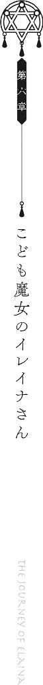
前回までのあらすじ。
私の名前はイレイナ。灰の魔女イレイナです。十代そこそこで魔法使い界隈における最高位の魔女という称号を得た私は、私の可憐さにより世界中を笑顔にするために旅をしておりました。
しかし旅に苦難はつきもの。なんやかんやあって私はいつの間にか身体のサイズが物理的に縮んでしまい、なんと十歳そこそこまで成長が逆戻りしてしまったのです！
「ふええ......これじゃあ旅を続けるのなんて無理ですよぅ......」
でも可愛さ三割増しになったので結果オーライな気もしました。
しかし十歳の頃の私は魔法使いとしては、能力的な面においてまだ未熟な部分も多く、現在の私の知識があるとしても身体がそれについていきませんでした。要するに魔法が上手く使えなくなってしまったのです。どうしよぉ～！
これじゃあ魔女という称号すら役に立ちません。でもある程度は魔法を使うことはできましたので、とりあえず着られる服だけ十歳用のサイズに調整しておきました。着てみたら案外似合いました。これはもしやすると私は十歳の頃から既に魔女としての才能を持ち合わせていたといえるのではないでしょうか。やったです。
「............」
......いや全然やったですじゃないんですけどね。
あまりに突拍子もない展開のせいで妙なテンションに見舞われながらも、私はあたりを見渡します。
窓の外には雪化粧の中に佇む国が見えます。宿屋の一室には、私の私物が片隅に置かれておりました。幸いにも若返ったとはいえ、昨日に至るまでの記憶ははっきりと私の中に残っています。
では一体何が起こったというのか。
反芻してみましょう。
私がこんな事態に見舞われるまでに、一体何があったというのかを。
○
私がその国に訪れたのは冬のある日のことでした。
赤焦げたレンガの建物が軒を連ねるその街並みは、白く染まっていました。先日まで降り続けていた雪が、照り輝くように快晴の空のもとに広がっています。
しかし快晴といえど真冬の空は太陽の暖かさなど微塵にも感じさせてはくれませんでした。
黒のローブと三角帽子、首元にマフラーを巻いて、厚手のタイツも穿いてはいましたが、容赦ない寒さは私の身体の隙間を見つけては、ひんやりと撫でてきます。
「......さむい」
ポケットに手を突っ込みながらも寒さによってうつむきがちになる私がそこにはおりました。歯が嚙み合わずにがちがちと音を立てたりもしました。生まれたての小鹿ばりに震えていたことも追記しておきます。
この街の人々はこのような寒さなど慣れっこなのでしょう。「こんなの寒いうちに入りませんわよ」などとのたまうように、彼ら彼女らは、私よりも薄着で街の路上で露店を開いたり、あるいは平然と歩きながらお買い物を楽しんだりなどしておられましたから。
「ちょっとそこのお嬢さん。あなた、今の自分に不満を抱いていらっしゃらない？」
むしろ路上で平然と商売ができるほど元気が有り余っているともいえました。突如として私に声をかけてきたのは、街角に置かれた木箱に座った少女でした。
ふかふかでもふもふとした筒のような形の帽子を被っており、その帽子からさらりと流れるように垂れているのは、金色の美しい髪。身なりは麗しく、お上品なゴシックドレスのようなデザインの黒のローブを着込んでいました。綺麗な服装に、重ねてお上品な口調をしているため、どうやら良家の令嬢らしいことは一目瞭然でした。が、
「どこからどう見てもあなたのほうがお嬢さんなんですけど」
歳は十歳そこそこといったところでしょうか。随分と幼い外見をしておられます。
「ふん！ 見くびらないでくださいまし！ わたくしはいずれ、魔女になる......予定の超有望魔道士ですわよ！ こんなしみったれた田舎街ではわたくしの器は収まり切りませんの！ 崇め奉りなさい！」
ははあ随分と変なのに声をかけられてしまったようで。
私はどうやら変なものを寄せつける定めにあるようです。......できれば今日くらいはとっとと宿屋に泊まって眠りたかったんですけど。
「ところで、今の自分に不満を抱いてるとはどういうことですか？ 別に不満なんてないですけど」私は話を巻き気味進行に致しました。「ちなみに宗教の勧誘はお断りです」
「ご安心を！ 宗教の勧誘ではなくってよ！ わたくし、実は最近、すごい薬を開発しましたの。それがこちら！ じゃん」謎の効果音を口にしながら彼女がお尻の下の箱からよいしょと取り出したのは、透明の液体が込められた瓶でした。「えっと、これを飲むと、身体がバッてなって、なんか身体がアレな感じになる薬ですの！ すごいでしょう！」
「なるほど語彙力と知能が著しく低下するお薬ですか。いらないです」
抽象的すぎて何一つ伝わってきませんでした。
「とにかくこれを飲むと、すげー効果が出るんですわ」
「すげー効果が出るんですか」さっぱりわかんねーです。
「特にあなたみたいな人にはおすすめですわよ」
「......ですから私みたいなのってどういうことですか」
すると彼女はにやりと笑みを浮かべ、自らの胸に手を当ててから、自信満々に言いました。
「おっぱいが大きくなりますの！」
そのように語る彼女の胸元は断崖絶壁の如し。
「噓ですよねそれ」
「噓じゃないですわ！ マジですのよこれ。これ飲んだらほんとに大きくなりますの！」
しーんーじーてー！ と彼女は手をぶんぶんと振り回しました。瓶の中で液体が泡立っておられます。この時点でもはや飲む気は完全に消え失せました。
「やです絶対飲まないですよ。それ完全に怪しい薬じゃないですか」
「違うですわ！ 半年がかりで作った超力作ですわよ！」
「超力作の怪しい薬なんですよね分かりましたさようなら」絶対に飲まないという決意を固めたのち私は踵を返しました。
「待てこのやろーですわ！」よくわからない言葉をわめきながら彼女は私の後を追います。「飲んだら絶対後悔しないですわ！ 飲めですわ！ 飲──きゃあ！」
ばりーん、という耳に悪い音とともに彼女の悲鳴が聞こえたのはそのときでした。
......私の背後で何が起こったのかは振り返るより前からなんとなく分かっていました。
「......ぐすん。わたくしの力作......が......」
雪にまみれた地面が、弾けた瓶とともにじんわりと濡れていました。白い路上に小さな水たまりができあがっております。
簡潔明瞭に申し上げますと超力作の薬は一瞬で息絶えました。
「あの......大丈夫ですか？」
地面にぺたんと座り込んで泣いている彼女の肩に触れる私でした。
彼女は嗚咽を漏らしながら、
「ぐすっ......いっしょうけんめい作ったのに......」
「あー......それはすみません」
「せっかくがんばったのに......」お上品に両手で目を覆っていますが恐らく手の下では涙がこぼれていることでしょう。
「......あの、予備とかは」私が問いかけると、彼女はゆるりと首を振ってしまいます。......なぜ予備を作っておかないのか。
「予備はないけど......べつのお薬ならありますわ......」完全に意気消沈した彼女は、立ち上がり、ふらふらとした足取りで、木箱の蓋を開けました。「......あ、でもぜんぶ失敗作のゴミばっかりですわ......こんなの飲んでもらっても何の効果もない......もう路上販売やめようかな......」
「............」
先ほどまで彼女に溢れていた自信は転んだ拍子に砕け散ってしまったのか、私の目の前にはあれでもないこれでもないと泣きながら木箱から瓶を取り出す惨めな少女の姿がありました。
正直見てられません。私のせいかと問われればたぶん違うと思いますが、しかし私が発端で彼女の力作とやらがお亡くなりになったのは紛れもない事実です。
「その瓶の中で一番まともな薬って何ですか？」
結局私は彼女の薬を飲むことにしました。
「......これですわ」言いながら彼女はひとつの小瓶を私に差し出してきました。
「効果は？」
「......背が伸びた気がする感じの気分になりますわ」
「............」
「......飲みます？ 銀貨一枚ですけど」
「......じゃあ、すこしだけ」
なんだか飲まざるを得ない空気を察知した私は、彼女から瓶を受け取っていました。そして蓋をあけて、ほんの少しだけ、口に含みます。
瓶が口を離れると、心配そうに私を見つめる彼女と目が合いました。
「......どうですの？」
「......なんか背が伸びた気がする感じの気分がします......」
「............」
「............」
なんとも言い難い気分を抱えたまま、結局私は、お薬代として金貨一枚（お詫びとして多めに出しておきました）を差し出してから彼女とお別れしました。
○
それから街を少し歩いたあとで、私はこの国のお役所に赴いていました。
「おお。あなたが灰の魔女様ですか。お待ちしておりました」
国の役人さんは私を手厚くもてなしてくれました。ささ、どうぞこちらへ──と通された応接間にはソファが向かい合うようにして置かれており、部屋の隅でぱちぱちと薪を燃やしている暖炉からこぼれた熱は、寒さに凍えた私の身体をぽかぽかと包み込んでいきます。私は上着を脱いでから、ソファに腰を下ろします。役人さんは私と対面するように座りながら、
「既に魔法統括協会の支部から話は伺っているとは思いますが──、今回、あなたにはこの国のとある魔法使いの退治をお願いしたいと思っております」
と言いました。
旅をしているうえに魔女ともあれば、依頼を受けることもしばしばあるもので、今回、私はこの近隣の国に赴いた際に、魔法統括協会より「隣国の魔法使いがよくないことをして暴れているからどうにかしてほしい」と頼まれたのです。
魔法統括協会なる組織には私は属していないわけですが、残念ながら近隣に所属魔法使いがおらず、更に事態は急を要するということもあり、魔法統括協会から直々にお願いされた次第です。
ちょうど金欠気味だった私は、羽振りのいい金額の報酬にまんまと釣られて二つ返事で仕事を受けることになりました。
私が今回この国に赴いたのは、そういった事情です。
「いやぁ実に困ったことにですね、この魔法使いは手がつけられない厄介者なんですよ。私どももかなり手を焼いていまして......」
それから役人さんは、私に事のあらましを簡単に説明しました。
魔道士プリシラは、まだ十歳そこそこの若年であるにもかかわらず、類まれなる才能を持ち合わせた、いわゆる天才と呼ぶに等しい魔法使いでした。
しかし彼女はその才能を正しい方向に使うことはしなかったようです。
彼女が作る薬はいつもどこか奇妙な性質を兼ね備えているのだとか。
たとえばそれは、突然ネコミミが生える変な薬だったり。あるいは何故か十歳の女の子しか愛せなくなってしまう奇妙な薬だったり。もしくは豚に変えられてしまう恐ろしい薬だったり。口八丁手八丁で上手いことだまくらかして、路上でそれらの奇妙な薬を罪のない住民に飲ませては金を巻き上げているといいます。
しかも薬を飲まされた住民はまともとは言い難い容姿や性格に変えられてしまうせいで被害報告が出づらく、被害報告を出したとしてもまともに取り合ってもらえず、ここ最近のように被害が拡大するまで国が気づくことができなかったそうな。なるほど被害者を騙してそのうえで黙らせて金を巻き上げ続けていたわけですか。策士ですね......。
............。
しかし十歳の魔法使いで、道で薬を売っている少女、ですか。
「ちなみにそのプリシラさんの外見は」
私の言葉に、役人さんは「そうですね、確か......」と思い出すように宙に視線を傾けてから答えます。
「金髪で、ゴシックドレスみたいなローブを着ていて、ふわふわの帽子を被っている女の子ですね。それと、口調が少し大人びています」
「........................あ、そうなんですか」
なんだかどこかで見たことのある外見ですね。
数十分前くらいに見たような気がする外見ともいえますね......。
「どうかしましたか？ 灰の魔女様、お顔が優れないようですが......」
「......いえ、べつに」
役人さんは怪訝な表情を浮かべながらも、
「ともかくプリシラは今、怪しい薬を作っては住民を困らせているのです。早急に対処しなければ、被害額は膨れ上がるばかりです」
「............」
黙りこくる私に、役人さんは丁寧に首を垂れたのちに、
「灰の魔女様には、早急にプリシラの確保をお願いしたいと思っています。このままでは住民が被害を受け続けることになりますから」と。
もしかして私が飲んでしまったのも、そういった怪しげな薬の一つだったのでしょうか。
私が会った女の子は、確かにプリシラさんの外見的特徴と酷似していますし、やっていることも類似点は多々ありますし......。
いえ、でも、とはいえかなり鈍くさい子のように見えましたし......。
他人の空似という可能性も──。
「あ、そうそう。ちなみにプリシラは大人を油断させるためにわざとドジで可哀想でお馬鹿な子の振りをして、飲まざるを得ない状況を作り出したりする狡猾な魔法使いですのでどうかお気をつけください」
「............」
「それと、『これは失敗作です』なんて言いながら飲まされた薬は大抵、奇妙な副作用を備えた薬ですので、こちらも注意が必要です」
「............」
あー。
まじですか。
「灰の魔女様、どうかこの依頼、受けてくださいませんか」
役人さんはまたしても私に頭を下げていました。
............。
受ける受けないというより。
「当然です。任せてください。私が早急に解決してみせましょう」
受けないと私が色々と不味いことになるのが明白でした。
「おお！ なんと頼もしいお言葉か！」などと感嘆する役人さんからすれば、もしかすると私は正義感に溢れる素晴らしい魔女に見えているのかもしれません。
まあ実際は怪しげな薬をうっかり飲んで焦っているだけのドジで可哀想でお馬鹿な魔女なんですけどね。
うふふ。
......笑えないですねえ。
○
結局、私はそのあと急いでプリシラさん（と思しき女の子）と遭遇した場所へと戻りましたが、私の動向を読み切っているかのように彼女の姿は既にそこにはなく、ただ箱が置いてあった痕跡だけが残されていました。
誰もおらず、焦った私はそれから街を彷徨い、彼女の痕跡を追おうとしましたが、私がちょっと頑張ったくらいで見つかっていればこの国の人が手を焼いたりなんてするわけがないですよね。見つかりませんでしたよ。ええ。
日が暮れるまでヤケクソになりながら捜しましたが、彼女がどこに消えたのかの手がかりも何も摑めはしませんでした。
徒労に終わったといえます。
しかし結局のところ、街を歩き回ったところで、私が飲まされた薬の効果は一向に現れませんでした。
もしかしたら私が飲まされたのは、本当にただの失敗作なのではないでしょうか。
奇妙な副作用などなく、いえ、そもそももしかしたら私が出会ったのは、本当にただプリシラさんと似ているだけの別人だったのではないでしょうか。
実際のところ、私は宿屋に泊まり、眠りに落ちるまで、昼間に出会った彼女が何者であったのかという疑問に対しては半信半疑といったところでした。
で、朝起きたら私は子供になっていたわけですけれど。
「やっぱり本人じゃないですか！」
やだもー！ などと年頃の女の子らしく感情に身を任せて宿屋のベッドにダイブする私（十歳）でした。
「というか身長が伸びたような気がする薬の副作用で背が縮むって何ですかマジで」
完全に副作用のほうが効果的に上回ってるじゃないですか。背が縮む薬と改名されることを強くお勧めいたします。まあそんな名前の薬でしたら死んでも飲んでいないんですけれど。
しかしこうもあっさりと罠にかけられてしまう私の情けなさといったらないです。
そして、このどうしようもない状況の中で、私はもう一つ重大な問題を抱えておりました。
お金が、ないです。
「......この宿屋に泊まれるのはあと三日程度ですか」
財布の中身に残されたお金と、この宿屋の代金を比較して小さな頭で計算してみましたところ、食費諸々込みで考えても、残された私のタイムリミットはあと三日。三日過ぎるとお子様状態のまま寒空の下に放り出されるわけです。万事休す。
......しょっちゅうこのような金欠に見舞われているような気がしますが、旅人たるもの、食費やら入国費用やら現地での衣類やら消耗品の購入やらで、お金はいくらあっても足りないのです。いくら詐欺まがいの手法で大儲けしたとはいえ、簡単に稼いだ金はさながら雪のようにあっさり解けてなくなってしまうのが常なのです。なるほど世の中から悪がなくならないのも致し方ない気がしてきました。
「......はあ」
大きめの嘆息を一つ漏らしてから、私はベッドから天井を仰ぎ見ます。
ひとまずプリシラさんの捜索は後回しにして、まずはお金を稼ぐところから始めないとだめそうですね......。
○
寒い冬の空のもと、安物の赤いドレスを身にまとい、同じく赤いずきんを被った一人の少女がおりました。
「マッチ......マッチはいりませんか......」
彼女はマッチ売りの少女でした。
道行く人の視界に、籠から取り出したマッチを差し出しては「いりませんか......」と弱々しく声を漏らします。
しかし人々の心はまるで冬のように冷たく、彼ら彼女らは、その少女の行いにひややかな目を浴びせるばかりで、籠の中のマッチは減る気配がまるでありません。
「マッチ......マッチはいりませ──きゃあ！」
マッチを差し出し続けていた彼女は、そのとき、すれ違った男性と肩がぶつかり、雪の上に転んでしまいました。地面に吐き出されたマッチを一つ一つ、丁寧に拾いながら、彼女は目にいっぱいの涙を浮かべました。
「へっ。こんなところでマッチなんて売ってるからだろ」彼女とぶつかった男性は吐き捨てるように言いました。「どれ、俺が一つ貰っておいてやるよ」
そして男は、彼女の手からマッチ箱を一つ奪い取りました。なんて傲慢な男でしょう。
「あ、あの......それは売り物で......」
「ああ？ 俺にぶつかっておいて金を取る気か？ タダで寄越せよ」
「で、でも......」
しかし少女の小さな抵抗も空しく、男性はマッチ箱を奪って行ってしまいました。
なんて可哀想な少女なのでしょう。
ところでその可哀想な少女とは、一体誰か。
そう、私です。
「マッチ......マッチはいりませんか......」
可哀想な少女の振りをして、お金を稼ぐというまさにどこかの十歳魔法使いさんと同じ手法をとっていました。完全にクズの所業です。
「あっ......あの......マッチ......」私は通行人にマッチを差し出し続けます。と同時に無視され続けました。
現段階では全然売れてません。その辺の雑貨屋で買いまくったマッチの在庫はまだ目を覆うくらいに残っています。これを全部売り切れば上手いこと資金が集まってくれるのですけれど......。
「へえ......マッチねえ......、べつにマッチには興味ないけど、君、お金に困ってるの？」
稀にこうして興味本位で私に近づいてくる男がおります。こういったときはチャンスですので徹底的に媚びへつらいます。
「そうなんですぅ......私、住む場所がなくて......、マッチを売り切らないと、ホームレスになっちゃいます......」
このとき、もじもじと気恥ずかしそうにしながら、物欲しそうな視線を時折投げかけることも忘れません。このように弱った女の子を演じていれば庇護欲に飢えた健全な男子は勘違いをしてくれます。
「へえ......そうなんだ......大変なんだね......よかったらお兄さんが一つ買ってあげようか？」
とまあこんな風に。
「ほ、本当ですかっ！ ありがとうございます！ うれしいです！」
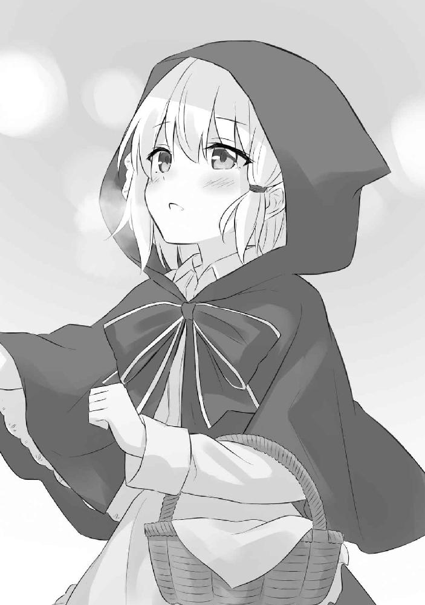
「それで、幾らだい？」
「金貨一枚です」
「そうかそう──え？ 金貨一枚......？ マッチ箱一つだよね？」
「金貨一枚です」
「......高くない？」
「そんなことはありません」
「というか君性格変わってない？」
「そんなこともありません」
「............」
露骨に嫌そうな顔を浮かべる青年でした。あほみたいに高い値段を吹っかけられてすっかり買う気をそがれてしまったのでしょう。見れば取り出しかけていた財布をポケットに戻そうとさえしています。
しかし。
「お、おい！ 嬢ちゃん！」
丁度そのときでした。私からマッチを強奪していった高慢ちきな男性が戻ってきたのは。
彼は随分と慌てた様子で、彼は私にマッチ箱を掲げてみせます。「こ、これ！ 一つ幾らだい？ 買わせてくれ！」
「金貨一枚です」
「よっしゃ！ 十個買ったる！」
気前のいいおじさんはそのまま金貨十枚を取り出し、そして私にくれました。お返し程度に私はマッチ箱を彼の手に置きます。
「毎度ありです」
彼は私に礼をしたのちに「へへへ......こいつぁすげえマッチだ......革命だ......」などと呟きながら去っていきます。
私はマッチを売り歩いていましたが、しかしそれがただのマッチだとは一言も申しておりません。
そもそも普通のマッチが一つ金貨一枚で売れるわけないじゃないですか。
「......そのマッチは何か特別な仕かけでもあるのかい？」
青年は手に財布を持ちながら、私を見下ろします。
だから私はにっこりと笑って、ただ一言答えるのです。
「ご購入してご自分の目で確かめてはいかがでしょう？」
●
魔道士プリシラは昨日と同じく、街で怪しげな商売に勤しんでいました。
「そこのあなた、今の自分に満足かしら」
そんな風に道行く人に声をかけては、素敵な効果を備えた薬──などと名を冠した怪しい薬を売りさばきます。
「こちらの薬は凄いんですわよ！ なんといっても、肥満が解消されますの！ どう？ 買いたくなったかしら？」
彼女の前に立ち止まった小太りの男性に、プリシラは小瓶を掲げて見せていました。
コンプレックスや向上心を刺激するような薬を目の前でちらつかせれば、人は大体手に取ってしまうのです。胸が小さい人なら胸が大きくなる薬とでも言って薬を飲ませればいい。背が小さい人ならば背が大きくなるとでも言えばいい。貧乏そうな人ならば金持ちになるとでも囁けばいい。
そんな誘惑で、彼女は人々の足を止めていました。こうしてまんまと立ち止まった客のうち、半数はそのまま薬を飲んで行きます。
残り半数は、躊躇うか、もしくは訝しんで立ち去ろうとしますが──そのときは昨日のように、可哀想な女の子の振りをして無理やり薬を飲ませてしまえばいいのです。
彼女はそんな風に、いつも人を騙して金を巻き上げていました。クズの所業です。
「いや、結構。俺にはこれがあるからな。へへへ......」
しかし、目の前の太った男は小瓶など目もくれず、目の前でマッチを擦って顔をにやけさせるばかりでした。
ただ小さな火がゆらゆらと頼りなく揺れるだけの、何の変哲もないマッチに見えました。しかし、男には違うものが見えているのでしょうか。「へへ......ここは天国だな......」などとプリシラには理解しがたい言葉を残して、立ち去ってしまいました。
「......？ ちょっと変な人でしたわね......」
まあいいや。とプリシラはまたしても別の客に声をかけます。
しかし。
「ああ薬なら結構。わたしにはこれがありますから......ふふふふ......」とある女性はマッチの火を見つめながら歩いて行ってしまいました。
「おお......若返るのう......最高じゃのう......」腰の曲がったおじいさんはプリシラを無視してそのまま行ってしまいました。
「へへへ......最高だ......」よだれを垂らしながら歩く男性にはもはや話しかけることすらしませんでした。
一体何が起こっているのか。
プリシラの商売が突然、立ち行かなくなってしまったのです。
「くっ......誰かがわたくしの邪魔をしていますのね......？ 無謀なことをしてくれますわ......！」
怒りに震えるプリシラでした。どうやらプリシラの縄張りを踏み荒らす愚か者がいるらしい、ということだけは直ぐにでも分かりました。
それはつまり彼女の商売が邪魔されているということであり、言い換えればどこの誰とも分からないマッチ売りに喧嘩を売られているということにほかなりません。
「ぶっ潰して差し上げますわ！」
プリシラはマッチを持った人々を辿り、道をゆきました。
彼女が自らの目的を遂げるためには、どうしても多額のお金が必要なのです。邪魔されるわけにはいきません。
誰が怪しげなマッチを売っているのかという疑問は、すぐに解消されることになりました。
大通りの隅のほうで、人だかりができあがっているのをプリシラは見ました。人が群れをなして「マッチ！ マッチくれ！」と叫んでいます。
その先には困ったように眉を下げながら「はいはい。順番に並んでくださいねぇー」と笑顔を浮かべる一人の少女の姿。
「くっ......誰ですのあの小娘......！」恨めしく細められた視線の先には十歳そこそこの少女の姿。しかしどこの誰なのか、プリシラには見当もつきませんでした。
肩のあたりにかかるくらいの灰色の髪。それと瑠璃色の瞳。着込んだドレスはこのあたりの地域に伝わる伝統衣装でした。しかしプリシラはあのような少女をこの国で見たこともありません。
「............」じっと見つめながら、プリシラははたと気づきました。「......昨日の魔女さん......？」
昨日、魔女に飲ませた薬は、身体が幼くなる薬でした。背が伸びた気がする感じの気分がする薬、などというのは、油断させるための噓でしかありません。
その昨日の魔女が今のような姿になっていることに関しては何ら違和感はありません。むしろ自然ともいえる幼児退行です。
しかし、
「昨日の魔女は、魔法統括教会から派遣されてきた魔女ですわ......果たしてあんなことをして何のメリットが......？」
プリシラに手を焼いたこの国の役人が魔法統括協会なる組織から人を呼び寄せた、という話はプリシラの耳にも入っていました。しかし、曲がりなりにも、プリシラを捕まえるために訪れたのは魔女であり、つまり魔法使いならば誰もが憧れる最高位の存在。雲の上の存在です。
まさか魔女ともあろう者が人を騙して金を巻き上げたりなどするでしょうか。そのようなまさにクズの所業ともいえるような行いを、格ある者がするでしょうか？
いえ、考えられませんわ──とプリシラは首を振りました。クズの魔女なんているわけがないじゃないですか。
ではあんなことをして何のメリットがあるのでしょう？
自らをおとしめるような真似をして一体何がしたいというのでしょうか？
「......！ まさか......！」プリシラはそのとき、魔女の真意に気づいてしまいました。「わたくしの仕事を邪魔することで間接的に物を売れなくさせるつもりですのね......！ なんて汚い真似をするのかしら！」
プリシラはマッチ売りをしている幼き魔女をそのように解釈しました。汚い真似をしている自らのことは綺麗さっぱり棚上げしたうえでの発言でした。
もしくは、あのように物を売ることで「あなたに薬を飲まされたところで私にはノーダメージですよ？」などと挑発をしているようにも見えました。
「望むところですわ......！ 売られた喧嘩は買うしかありませんわね......！」
ぎりぎり、と道の隅っこで歯を軋ませるプリシラでした。
その光景はまさに不審者そのものでしたが、しかしその場にいあわせた者たちは大概が幼女に群がる不審者だったがゆえに、プリシラが注目を集めることは幸いありませんでした。
○
私が作り出したそのマッチは、好きな妄想を見ることができるマッチ。
実際にはただのマッチに魔法をちょいちょいと付与しただけなのですが、意外にもこれが売れまくりました。
まさしく一度マッチのごとく、火がついてくれれば、燃え尽きるまであっという間です。
「俺にもくれ！ 十個買うから」「私にも！」「おい！ 買い占めようとすんな！」「儂にもくれんか！」「ああ！ もっと妄想が見たいわ！ くださいな！」
連日人だかりができる私のマッチ売り場でした。最高です。ボロ儲けです。もうなんだかプリシラさんとかどうでもいい気すらしてきました。
「はいはい。皆さん、順番ですからねー。並んでくださいねー」
私は毎日ボロ儲けの日々を送っておりました。
格安で買ったマッチがこんなにも高く売れるなんて誰が思うでしょうか。いい商売を見つけてしまいましたね......。
なんて、私は内心ほくそ笑みながらも売り続けました。
そういえば数日前まではプリシラさんの一件を早急に解決してみせる、などと私は息巻いていましたね。
ボロい商売のせいで既に記憶の彼方まで追いやっていたその記憶を呼び覚ましたのは、マッチを売り始めてから三日目のことでした。
「貴様ら！ ここをどこと心得る！ プリシラ様の縄張りであるぞ！」
私の前にできあがっていた人ごみをかき分けて、一人の屈強な男が突然現れました。目は血走り、真冬というのに薄着で、ついでに有り余った筋肉を見せつけるようにして露出しているいかにも脳内まで筋肉でできてそうな男でした。
「はい？」私は何も知らない可哀想な女の子の振りをしました。「プリシラさんの、縄張り......ですか？ すみません......私、そういうのに疎くて......ただみんなが幸せになれればって思って......」
大抵こんな風に涙声で語っておけば大抵なんとかなるでしょう十歳そこそこの女の子の外見してるわけですし。
などと舐め腐った性根が明るみに出ないように顔を覆いながら私はすすり泣いてもみせました。
しかし。
「泣いても無駄だ！ ここはプリシラ様の縄張りである！ とっとと立ち去れ！」
目の前の筋肉男はただ喚き散らすばかりでした。
顔を覆った指の間からちらりと彼の顔を見上げてみると、男はしきりに「プリシラ様、プリシラ様、プリシラ様は凄い......」と呟いておられました。おやおやこれは。
「......もしかしてプリシラさんの薬、飲みました？」
「女の子が路上販売していた薬なら飲んだが？ 筋肉が増えるらしい。プリシラ様万歳」
「............」
大方、筋肉が増えるなどと騙されてプリシラさんの奴隷になる薬でも飲まされたのでしょう。
そんな薬を飲まされた男が私の目の前に現れたということは、察するに彼女が私を潰しにかかってきているということなのでしょう。
なるほどなるほど。
「いいか？ 貴様がどかないというのならばこちらにも考えがあるぞ？ 分かるか？ 我がこの筋肉で貴様を──」
「えい」
なんだか目の前でちらつかれると鬱陶しいものがありましたので私はマッチを擦って筋肉男に見せました。
「貴様......を......」筋肉男はマッチの火をじっと見つめ、「......おお見える......何だこのマッチは......！ 理想の世界が見える......！」
どうやらプリシラさんの薬を飲んでいようとも私の魔法は有効のようです。
目の前の筋肉男さんは幻の光景に歓喜しておられるようですし。
「筋肉まみれの世界が......みえる......！」
............。
いや地獄絵図じゃないですか。
ともあれ私はプリシラさんが送り込んで来た男を一ひねりしてから再びマッチ売りに徹するのでした。
これはちょろいですね......。
●
「なんてことですの......！」
筋肉男が一瞬で篭絡される光景を目の当たりにしたプリシラは驚愕しました。
一時的にプリシラの奴隷になる薬を飲ませた男ならば、きっと持ち前の筋肉でマッチを根こそぎ粉砕してくれるだろうと考えたのです。頭の隅から隅まで筋肉で支配されていそうな男を送り込めば恐らくマッチの効果は受けつけないだろうとも考えていました。
「くっ......」ぎりぎりと爪を嚙むプリシラでした。「まあいいですわ......わたくしの手下はまだほかにもいますもの！」
若干ヤケクソ気味になりながらプリシラはくるりと振り返ります。
「さあ！ あなたたち！ あの女を始末しなさいな！」
そして物陰に隠れている身でもあるにもかかわらず大声で叫びました。魔女に所在がばれたらどうするのか等と、そのような細かいところはこの際気にしていませんでした。
「仰せのままに......プリシラ様」プリシラに傅く眼鏡の優男が一人。
「へへへ......あの女の子を倒しちゃえばいいんだね？」不敵に笑う少年が一人。
「ふふふ......久々に、本気出しちゃおうかしらぁ......」妖艶な眼差しを魔女に向ける女性が一人。
そう。
彼らはプリシラ四天王。
プリシラが数日間でかき集めた精鋭中の精鋭。それぞれが単独で魔法使いを遥かに上回る実力の持ち主（自己申告）です。早い話がおつむの弱い集団です。
四天王などと言いつつ三人しかいないのは先ほど一瞬で始末された筋肉男が最後の一人であるからです。
ちなみに筋肉男は四天王にて最強。
「............」
「............」
「............」
ゆえに三人のモチベーションは駄々下がりでした。もう帰りたいなぁという心の声が漏れ聞こえる程度ですらありました。
「ほら！ とっとと行きなさい！ はーやーくー！」
魔女を指差し駄々をこねるプリシラでした。
「いえ、しかしプリシラ様......」「へへへ......ちょっと無理です」「わたし怖いわぁ......」
いくらプリシラの奴隷状態になっているとはいえ自我が完全に奪われているわけでもありませんでした。
「ぐぬぬぬ......」
こうなっては折角苦労してプリシラの奴隷状態にさせた意味がありません。「......いいですわ。分かりましたわ。だったらこの薬を飲みなさい」
プリシラは木箱からがさごそと薬を三本ほど取り出すと、それぞれに手渡しました。
それは身体能力を底上げする薬でした。
「おお......これは......！」「す、凄い......！」「ああ......力が湧いてくるわぁ......！」
要するにドーピングです。
「ふふふ......これさえあれば万事解決ですわ！ さあ行きなさい！」
そして自信を取り戻した四天王（ただし三人）は、たかだか十歳の少女を倒すためだけに、やたらと勇ましく進軍していったのでした。
○
なんか変な三人組がやってきましたのでそれぞれにマッチの火を見せてあげました。
「え？ マジ？ 俺のことが......好き......？ いや、実は俺も......」眼鏡の優男はどうやら女の子に告白される妄想でも見ておられるようです。まあまあ健全です。
「へへ......弱い......どいつもこいつも人間は雑魚ばかりだ......」こちらの少年は思春期真っ盛りらしい妄想にふけっておられる様子です。ある意味健全です。
「やめて！ 皆でわたしのこと取り合わないで......！」こちらの妖艶な感じの女性は男に取り合われている妄想を見ているようです。見かけによらず乙女。
まあ恐らくこの三人ともプリシラさんに派遣された敵なのでしょうが、あっさりと三人とも制圧してしまいました。
恐らく私のもとに来てから五秒程度しかかからなかったと思います。
●
「くっ......あのマッチは人であれば誰もが虜になってしまうようですわね......」
手下を犠牲にして一つ賢くなったプリシラでした。
しかし、筋肉男をはじめとする四天王を送り込むことだけが彼女の作戦ではありませんでした。幼くなった魔女に営業を邪魔されていることが発覚してからゆうに数日の時間が流れています。
その間に何の策も講じなかった彼女ではありませんでした。
「ふふふ......できればこの手は使いたくなかったけれど......致し方ありませんわね......」
彼女は新たな薬の瓶を取り出し、不敵な笑みを漏らしました。
魔法統括協会から送られてきたあの魔女はただ仕事を邪魔していただけで、別段、恐れるべき相手でもないと思っていました。ゆえに人間を派遣してとっとと消えてもらおうと考えていましたが、それでも尚引き下がらないというのであれば、少し強引な手を使ったとしてもそれは仕方のないことではないでしょうか。
「おしまいですわよ......魔女！」
そして彼女はきゅぽん、と薬の瓶を開け。
獣を放ちました。
○
妙な四人をマッチの虜にしてから数十分後。
また新たな刺客がプリシラさんから送り込まれてきました。
「......くしゅん！」
その生き物を目にした直後、私はくしゃみを一つ。
どうやらプリシラさんは私のマッチが大概の人間に効いてしまうことに気づいたようで、人を送り込むことを諦めたのでしょう。
私の目の前には、おおよそマッチになど興味のなさそうな生き物が現れましたから。
『なあああああああああああああああああああああああああああああん』
ネコでした。
ただし見上げるほど巨大なサイズの。
むずむずする鼻をすすりながら、私はぼうっと立ち尽くしました。
「何だあの生き物！」「やべえ！」「逃げろ逃げろ！」「あんなのに食われたらひとたまりもねえぞ！」
私の周りを取り囲んでいたマッチ中毒の皆さんも流石に化け物のご登場により我に返ったようで、路上にできあがっていた人だかりはあっという間に散ってしまいました。ああ私のカモたちが......。
「ふふふふふ！ ざまあないわねぇ魔女！ これであなたもおしまいですわよ！」
遠くの路地の陰から私に勝ち誇ったような声をあげるプリシラさんの姿がそこにはありました。
「......くしゅん！」
今すぐあの場に赴いて、痛い目にでも見てもらおうかと一瞬だけ思い至りましたが、しかし私の前には巨大なネコがおり、そのせいで私は身動きが取れなくなっていました。
「今更泣いても遅いですわよ！ わたくしの邪魔をしたことを後悔するといいですわ！」
私はネコがだめな体質でして、特にこの巨大なネコから発せられるネコ特有の臭いが私をだめにしているようで、目が痒くて仕方ありませんでしたし、鼻がむず痒くて大変でした。泣いているのはそのためです。
決して怖いからとかそういう事情ではありません。
というより、果たして本当に動物にはマッチの効果はないのでしょうか？ 正直に申し上げるとこういった手合いを魔法で倒すのは骨が折れるというか、そもそも今の私は魔力が十歳程度の頃にまで戻っている状態ですゆえ、あまり魔法での戦闘は避けたい気分なのです。
「............」なので。「えい」
と、私はマッチを擦ってネコに火の光を見せて差し上げました。
『にゃーん』
効きました。
効いちゃいました。
「え、うそ......効くの......？」
遠くのほうから愕然とした声が響きました。
マッチを遠くへポイと投げてやると、巨大ネコはまたしても『にゃーん』と小さな火を追いかけて行ってしまいました。
最早勝負は決したと言っても過言ではありません。
「ぐぬぬぬぬ......」
私が一歩、また一歩と進むたびに、プリシラさんは悔しそうな表情を浮かべながらじりじりと下がっていきます。
怯えながらも未だ強気な態度をとり続ける彼女の様子が少しおかしくて、私は焦らすようにただただゆっくりと歩みを進めていきます。
「さあ後はどうしますか？ 降参しますか？ それとも戦いますか？ もちろん私はどちらでも構いませんよ？」
どのみち結果は同じですし──と私は言いました。
私に追い詰められ、徐々にプリシラさんは後ずさります。狭い路地の中、徐々に、徐々に、壁へと追いやられていきます。
逃げ場もなく、選択肢ももはや彼女にはありませんでした。
「さあ。どうするんですか？」
私は再び、首を傾けます。
「くっ......」ついに壁に追いやられた彼女は、しかし降参する気にはなれなかったようです。「じょ、冗談じゃないですわ......！ わたくしは将来魔女になる女ですわよ！ こんな所で終わってたまるものですか！」
そして彼女は杖を懐から出し──。
「え？ すみません何ですか？」プリシラさんがそれを構えた直後に私は魔法を放ちました。
十歳の状態では複雑な魔法は扱えません。
けれど、相手の杖を弾き飛ばすくらいは簡単です。お手の物です。
「............」
「............」
からん、とプリシラさんの杖が路上に転がります。
しかしそれで諦める彼女ではありませんでした。「ふ、ふん！ 魔法なんてわたくしの得意分野ではなくってよ！」若干声を震わせながら懐から取り出したのは小瓶でした。
薬こそが彼女の得意分野であると言いたいようです。
「これでも食らいやがれですわ！」
私が杖で弾くより前に、彼女はそれを投げ飛ばしました。
「いや効くわけないじゃないですか」
まあ宙に浮いていても弾き飛ばすのは容易いんですけどね。
空中で私の魔法をまともに食らった小瓶は、路上のど真ん中に落ちて割れました。
「............」
「こ、これでも食らいやがれですわ！」
私が棒立ちになりながら彼女の動きを待つこと数秒。割れた小瓶を見つめて若干泣きそうになっていた彼女は再びヤケクソ気味の声とともに新たな小瓶を私に投げてきました。
もちろん叩き落としました。
「............」
「......おりゃあ！ おりゃあ！」
それから何度か彼女は私に小瓶を投げつけてきましたが、そもそも十歳程度の外見になっているとはいえ、私もある程度は魔法は使えるのです。その程度の攻撃をまともに食らうほど愚かでもありませんでした。
小瓶の残骸はいくつも地面に積み重なっていきました。
投げるたびに彼女の表情は険しくなっていき。
「あの......もう......武器が......ないんですけど......」
路地の隅っこのほうで小鹿のように震えるプリシラさん。
「あ、そうなんですねー」もう降参とのことでしたので、私は再び彼女との距離を詰め始めました。
「......あのぉ......？ もう武器が......」びくびくと震えるプリシラさんの姿は、初めて会ったときよりも小さく見えました。
「武器が？ 何ですか？」つとめて笑顔を作りながら私は彼女に近寄ります。「ところで参考までに聞きたいんですけど、あなたこんな田舎街で怪しい魔法薬を作って、高値で売りつけて、何がしたかったんですか？」
「えっ。え？ それは......そのぉ......」もはや威勢のよかった彼女などそこにはいませんでした。ただの追い詰められた獲物がいるだけです。「あの......わたくし......魔女になりたくてですね......それで、ちょっとぉ......」
「歯切れが悪いんでもうちょっとはっきり喋ってもらえますか」
「ひっ」
びくりと肩を震わせるプリシラさん。路上にへたり込んだ彼女はがたがたと震えながら、
「えっと......、ここ、田舎街ですし、だから都会に出て魔法の勉強をするための資金を──」
「ほうほう。ご立派ですね」
「で、でしょう？ じゃあ許して──」
「いえそれとこれとは話が別ですけれど」調子に乗らないで頂きたいです。
ついでに言うのならば。「私の身体を小さくしたこととも話は別ですね。私に飲ませたあの薬、一体どれくらいで効果が切れるんですか？」
「......一週間程度です」
「もう少し早めに治す方法とかありません？」
「解除薬を使えば戻りますけれど......」
「それはどこに？」
「わたくしのお家にあります......」
「ほうほう」
ということは私は今すぐにでも元に戻れるということですね。
よかったです。さすがにずっとこのままでは旅がままなりませんから。できれば早く戻りたいと思っていたところなのです。
......結構な騒ぎを起こしてしまいましたし、この国で十歳程度の見かけのまま営業をするのは難しいでしょうし。
「じゃあ私のこと、元に戻してもらえます？」
私は彼女に微笑みかけました。
その笑みでプリシラさんはどうやら何か勘違いをなさったようで、「えっ？」などと呆けた表情を浮かべたのちに、ぱあっと明るくなり、
「じゃ、じゃあ......！ もしかして、元に戻したら見逃してもらえますの？」
などとわけのわからないことを仰いました。
何を言っているのでしょうか。
「そんなわけないじゃないですか」
私は笑みを崩さぬまま、
「でも、私も悪魔ではありませんから、選ぶ権利をあなたに差し上げることはできますよ」
そして言いました。
「痛い思いをしてから私をもとに戻すか、怖い思いをしてから私を元に戻すか──どちらがいいですか？」
そして。
その日、街の片隅に十歳の魔法使いさんの叫び声がこだましました。
○
「今回のあらましは大体そんな感じです」
解除薬により元の姿に戻った私は、プリシラさんを引き渡すついでに、今回の件の顚末を簡単な報告書にまとめて、役人さんに渡しました。
報告書を一から十まで読み終えた役人さんの反応がこちら。
「そうですか......。金儲けがしたかっただけであんなことを起こしたとは......」
私はしかりと頷きます。
「まあ言い換えればお金さえ手に入ればあのような物の売り方はしないということです。何なら、お金が入ったらこの国を出ていくつもりなのだと思いますよ」
「ふむ......」役人さんはそのように頷いてから、「ああ、そういえば」と口を開きました。「ところで魔女様が来てから昨日までの数日間で妙なマッチ売りの少女が現れたのですが、それに関してはご存じないですか？」
「ありません」
「そうですか......。どうやらそのマッチに奇妙な魔法がかけられていたようで......、住民たちがそのせいでマッチ中毒になったりしたのですが......ご存じないですか？」
「ご存じないです」
「それと昨日なにやら巨大なネコが街に現れたという報告があったのですが......」
「ご存じないです」
「そうですよね......こちらでも捜索をしているのですが中々見つからなくてですね......」
もっとも、プリシラさんの解除薬を飲ませたことでネコも元通りただの愛玩動物に戻っているのですから、今となっては探そうとしても見つからないとは思いますけど。
役人さんは低く唸りながら、私がまとめた報告書に目を下ろしました。
「魔女様......ほんとうにこの報告書を協会に提出するおつもりなんですか？」
「だめでしょうか？」
「いえだめではありませんが......」
言葉尻を濁らせながらも、彼はまたしても低く唸りました。
私が魔法統括協会に提出する予定の報告書は、このように締めくくっていました。
『魔法使いプリシラはまともな魔法の教育を受けていなかったためにこのような事件を引き起こすこととなりました。師匠の下で全うに魔法を学べば恐らく将来は有望な魔女になれることは間違いないでしょう。よって今回は刑も処罰も必要ないと判断しました』
つまり彼女は檻に入れる必要もなければ、何らかの制裁を加える必要もないということです。というか制裁なら私が個人的に加えましたし。やるべきことといえば大人たちがきちんと叱ることくらいなものです。
今はまだ情けない魔法しか放つことはできませんが、薬くらいしかまともに作ることはできませんが、まだ十歳ですし、これからでしょう。
まだ彼女は外の世界を知らないだけなのです。
魔法の使い方をまだ心得ていないだけなのです。
「彼女はまだ魔法というものが、魔女というものがどういうものかを知らないだけです。どのみち、すぐにでもこの国を出ていくつもりでしょうし──」
お金は十分に手に入っているようですし、彼女はじきにこの国を離れることでしょう。
それに、
「十歳の女の子に散々な目に遭わされてそのまま報復のように制裁を加えたとあってはこの国の面目が丸潰れではありません？」
私は言いました。
「この田舎街には珍しい魔法使いの女の子に制裁を加えて潰すのか、それとも今回は見逃すことで恩を売って、やがて格ある魔女としてこの国で活躍してもらうのか、どちらがいいですか？」
●
それからプリシラは国の役人にこってり絞られました。
役人はいかに詐欺がいけないことかを長々と説き、お金とは苦労して手に入れるからこそ価値があるのだと語り、プリシラが怪しい薬を売り続けたことで多くの人に被害が出ているということを、山のように積み重なった被害報告書を見せながら滔々と述べたりもしました。
それは傍目に見ればただのお説教で。
プリシラはただただ悪いことをして叱られているだけのお子様でした。
やがて小一時間ほど役人が小言を言い続けた頃、
「──まあ、話は以上だ。今後は気をつけるように」
と締めくくりました。
制裁もなければ処罰もありませんでした。ただのお説教だけでおしまいでした。
「あの......？」
あまりにもあっさりと終わってしまった説教にプリシラは拍子抜けしていました。「罰金とかは......ないんですの......？」
しかし役人はごく普通に首を振るばかりでした。
「お金のことは気にしなくていい。今回に至るまでの被害者に支払うお見舞金はこちらで用意させてもらったから」
「......え？」
「といっても、魔女さんに支払う予定だったお金をそっちに回しただけだけれどね──」呆れたように役人は肩をすくめました。「報酬はすべてお見舞金に回すようにと頼まれたから」
それはつまり、魔女が温情を下したということなのでしょう。
今回は初犯なので許してあげます──と語っているようにも思えました。
「............」
しかしよくよく考えてみれば汚い手法でマッチ売りをしたおかげで散々儲けている筈なので確かに報酬くらいなくても大した問題でもないなとプリシラは思いました。
「ああ、それとね魔女さんから君にプレゼントがあるよ」
役人は大きな包みをプリシラに手渡します。「本当は彼女が国を出てから渡すよう言われたんだけどね──まあ、せっかくだから今渡しておこう」
あの性根の悪い魔女からのプレゼントということでプリシラは心底怯えながらその包みを受け取りました。開いたら爆発でもするのではないかと警戒しながらも、プリシラはゆっくりと包みを開きます。
「......？」
しかしプリシラはまたしても拍子抜けしました。
中にはただの本が一冊、入っているだけでした。
「彼女、どうやら色々な国を渡り歩いている魔女みたいでね、このあたりの国も一通り回っているらしいんだよ。君がこれから外の世界で魔法を学ぶうえで役立ちそうなことを本にまとめてくれたらしい。それを活用してくださいだとさ」
本をぱらぱらとめくりながらも、プリシラは役人の言葉を聞き流していました。
そこには近隣の地域の地図がありました。一人旅をするうえでの心得がありました。魔女が一度訪れたことのある国に関しては詳細な説明と、魔法使いに対する対応の仕方であったり、あるいは魔法を学べる学校の有無であったり、事細かに説明が書き綴られています。
それはプリシラに対する餞別のように思えました。
本の最後は、たった一文で、
「あなたが将来、立派な魔女になれることを心より望んでおります」
そのように締めくくられていましたから。
○
慌ただしい一件が幕を下ろして少しばかり国に滞在したのちに、私は国を出ることにしました。
この国にはもともと仕事をするために来たのですから、長居は無用でしょうし。まあ仕事と言いつつ私は別に大したこともしていないのですけれど。
結局、私がやったことといえば、国の中で怪しげなマッチを売り歩いただけの、なんとも言葉にしにくい顚末です。
ついでに変な魔法使いのせいで十歳になったり、十歳のまま変な女の子と戦闘をしたりしたような気がしますが、正直に申し上げてそのあたりの件に関しては、まあ、別に大したことでもないように思えるのです。
「──イレイナ様ー！」
ですから、後ろからそんな風に声をかけられたとしても、私はただただ疑問を抱くばかりでした。
イレイナ様などと慕われるようなことを私はした覚えがありません。
「イレイナ様！ 待ってくださいまし！」
「............」気がつくとがっしりと私の腕を摑む手がありました。「......何ですか」
振り向くと目を輝かせたプリシラさんの姿がありました。
「イレイナ様！ いえ、お姉さま！」なぜかよく分からない呼称に言い直すプリシラさんでした。
「本、ありがとうございましたですわ！」
「......本？ ああ......いえ、べつにいいですよ、あれくらい」
おかしいですね......私は確か「いいですか？ この本、私が出てから渡してくださいね？ 絶対ですよ？ 絶対に国を出てから渡してくださいよ？」と念を押して頼んだはずなんですけど......。
あの役人さんは耳に何か詰まっておられるのでしょうか......。
「お姉さまに貰ったこの本は家宝にいたしますわ！」無邪気に顔をほころばせるプリシラさん。「今までわたくしの理想を理解してくれる人は誰もいませんでしたもの......。こんなに嬉しい貰い物は初めてですわ！」
「あ、はい。喜んでいただけて幸いです......」
「それにそれに、わたくし、お姉さまのような強くて優しくて格好よくて若干下衆くてクズで性根の腐った魔女にずっと憧れていましたの！」
「あれ、私、馬鹿にされてる......？」
「大人になったらお姉さまみたいな魔女になりますわ！」
「ろくな大人にならないということでいいですか」
というか、
「私、お姉さまなんて名前じゃないんですけど......」
「まあまあ細かいことは気にしないでくださいまし！ お姉さま！」どうやら直す気はないようで、プリシラさんは笑みを浮かべたまま、「そんなことよりお姉さま、お姉さまは今から国を離れてしまうのですよね？」と首をかしげました。
「......まあ、べつにもう用はありませんし......」
「でしたらこれを！」
プリシラさんは私の手に、小瓶を摑ませました。
たぷん、と中で透明の液体が揺れていました。
「............」私はプリシラさんを見ます。「あの、何ですかこれ」
「それはわたくしがお姉さまに飲ませたすげえ薬ですわ！」
「え、すげえ要らないです」
「わたくしだと思って、使ってくださいね......？」
ぽっと頰を赤らめるプリシラさんでした。
「使う場面がおおよそ思い当たらないんですけど......」
「うふふ......」プリシラさんは歳のわりに色っぽい瞳で私を見上げました。「いつか、わたくしが大人になったら、お姉さまに会いに行きますわ......。そのときは、その薬を飲んで同い年になりましょうね......？ いっしょに濃密な日々を送りましょう？」
「え、いらない......」
「ちなみに今回の薬はちょっと改良を加えましたの。一口飲んだら一歳若返るように調整してありますわ！ つまり十口飲めば十歳若返りますの！ 理想の年齢差でいちゃいちゃできますわ！ 何なら再会したときに、お互いに初めて会ったときと同じような年齢まで戻ってノスタルジーに浸ることも可能ですわ！」
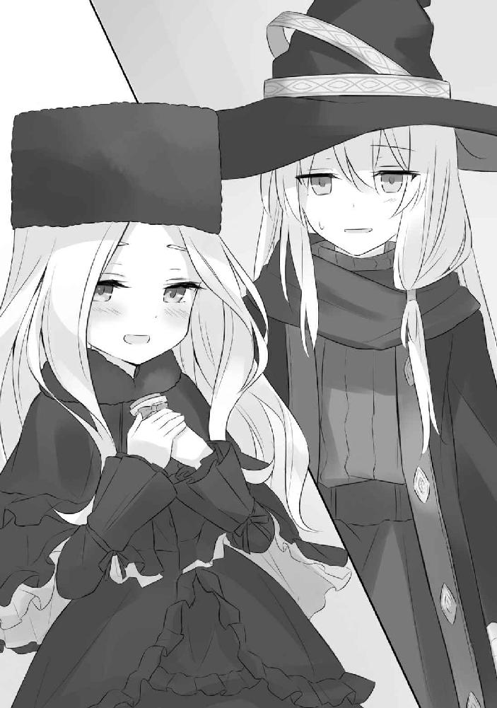
「あなたこの国を出たら別の犯罪で捕まりそうですね......」
「さあ貰ってくださいまし！」
「謹んでお返しします」
「遠慮なさらないでくださいまし！」
「遠慮じゃありませんドン引きしてるんです」
「もー。照れちゃって可愛らしいですわ！ でも大丈夫ですわ！ もしもお姉さまがその薬を無駄にしたとしても、わたくしと再会した暁には否が応でも同じ薬を作って飲ませますわ！」
割っても無駄だと言いたいようです。
「......はあ」
私は嘆息をしたのちに薬をバッグに納めました。「まあ、貰っておきますよ......」受け取らないと離してくれなさそうですし。
ひたすらに目を輝かせるプリシラさんの頭に私は手を置きました。ふかふかの帽子の感触と、「んー」などと喉を鳴らすプリシラさんの顔色が返ってきました。
「まあ、その......今後色々と大変でしょうけど......がんばってくださいね？」
そして私は手を振り、彼女とお別れしたのでした。
いつまでも私に向けて手を振り続けながら「お姉さまああああああああ！」などと叫ぶプリシラさんを背中に受けながら、私は歩きます。
赤焦げたレンガの建物が軒を連ねるその街並みは、相変わらず白く染まっていました。雪は既に解けはじめ、照り輝く快晴の空のもとでシャーベット状へと成り代わっていました。
寒さは相変わらず。
次は暖かい国にでも行こうかなとぼんやり思いました。
「お姉さまああああああああああ！」
............。
結局のところ、この国での出来事というのは、魔法統括協会のお仕事を引き受けて事件を解決しただけというなんとも簡潔明瞭な顚末なのですが、しかし私は知らず知らずのところで思わぬ副作用に見舞われてしまったようです。
願わくばプリシラさんが作った薬のように副作用ばかりが効果を発揮しないことを祈りながら、私は旅へと戻るのでした。
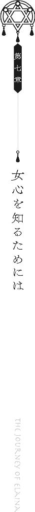
「ああ......もうだめだ......。俺はもう......」
高級宿屋にて。
とある男がベランダの柵に腰かけ、遠く下に見える地面を見つめながら憂いていました。その背中は哀愁が漂い、弱り切ったその表情は、しかし依然として美しく、客観的に見て彼は魅力的な男性に分類されるような外見をしているように思えました。背中に生えたコウモリのような翼を無視できるなら、ではありますけれど。
「ああ神よ！ 俺はあなたを心から恨む！ どうして俺は、こんなにも......惨めでちっぽけな種族として生まれてしまったのだろう──もしも俺がただの人間であったのならば、こんなに苦労することなんてなかったのに......だってすげえイケメンだし......」
天を仰ぐ優男。
ちなみに現在の空は曇りです。神はどうやら色男さんとは顔を合わせたくないようです。
「俺はもう死ぬしかない......このまま落ちてしまえば......きっと美しく死ねることだろう......」
ところで彼が泊まっているお部屋は高級宿屋の中でも最高級。つまり最上階。見下ろせば大通りを往来する人たちがまるで粒のように小さく見えました。
落ちたらぐっちゃぐちゃになる気しかしませんが大丈夫ですか。
「あの」
私は彼に声をかけていました。
「！ 止めないでくれ！ 俺はもう生きていく気力を失ったんだ！」声を荒らげる色男さん。「それとも君が俺を救う女神になってくれるとでも言うのか？」
「え？ いや、あの......」
「分かっている......分かっているよ。君はとても優しいね......命を投げ出そうとしている男を止めるなんて......だけど放っておいてくれ......。俺はもう、魔族として生きる気力を失ってしまったのだよ......」
「あ、はあ......」
「君は本当に優しいね......、聞いてくれるのか......俺の悩みを......」
「あの」
「俺はね......実は生まれてこのかた、女を口説くのに成功したことがないんだ。こんな整った顔をしていても、魔族に生まれてしまったことで、女に忌み嫌われ、まるで相手にされたことがないんだ......」
「あのぉ」
「つまり童貞だ」
「あのー」
「女に縁がないまま生きてきた。きっとこれからもそうなんだろう。だったら俺はもう、いっそのこと死んでしまったほうがいいと思ったんだよ。このまま報われずに生きる続けるくらいなら──」
「あのー！」
はしたないことについに声を荒らげてしまいました。
「俺を......慰めてくれるのか？」
けれど彼は妙な勘違いをするばかりです。
そもそも私が声をかけたのはそういった事情によるものでは全くないのですけれど。
「......いやそうじゃなくて。ちょっとうるさいんですけど。読書に集中できないので」
「............」
「静かにしてもらえます？」
「............」
超高級宿屋の最上階。そのベランダにて優雅に読書にふけっている魔女が一人おりました。
そう、私です。
けれど隣の部屋の男がいきなり自殺を企てたりしてきたものですから迷惑被ってもいました。
「......やっぱりそうだよな。誰も......俺のことなんて......」
「............」面倒くさい男にどうやら摑まってしまったようです。このまま放っておいたら飛び降りるかもしれませんし、飛び降りないにしても延々とネガティブな発言を隣の部屋のベランダから飛ばされるかもしれません。迷惑極まりないです。「あの......よかったら悩み、聞きましょうか」
「！ 優しくしないでくれ！」
「分かりました優しくしません」
「あ！ ちょっと待って！ やっぱり少しでいいから優しくして！」
「何なんですかあなた......」
私は恐らくとても目を細めていたことと思います。
「実はちょっと悩んでいてね......すまない。今ちょっと情緒不安定なんだ」彼はため息交じりにうな垂れました。「見れば分かると思うが、僕は結構追い詰められている」
「はあ」
確かに見れば分かりますね。
「ところで、君、名前は？」
「イレイナです」
「そうか......イレイナか......いい名前だね......」彼は私を見つめながら力なく微笑みました。「ところでイレイナさん......ちょっと、俺の頼みを聞いてくれないかな......」
「遺言ですか？」
「違う」
「......くだらない頼み事だったらすぐに部屋に帰りますけどいいですか」
「大丈夫！ 下らなくないから！ 死活問題だから！」食い気味に否定する色男さんでした。直前までのしおらしい彼はどこへ行かれたのでしょうか。天に召されてしまったのでしょうか。
しかしなるほど確かに情緒不安定。
ちなみに私はそんな彼に若干引きました。
「で、頼みって何ですか？」
私がやや事務的にそのように尋ねると、彼は息を思いっきり吸い、そして、爛々とした瞳で言いました。
「俺とセ──」
私は部屋に戻りました。
○
「いや、あの、さっきのはアレだから。言葉の綾っていうか、その、ほら！ まだ言ってる途中だったから！ 別にやましい気持ちとかないから！ なあ頼むよぉー！ 話聞いてくれよぉ！」
ドンドンバンバンと私の部屋の扉を叩きまくる優男が廊下にいる気配がします。
「......迷惑なんで帰ってもらえますか」
私はチェーンをつけてほんの少しだけ扉を開け、彼を睨みました。
「ふっ......悪いが、俺は住む場所をとうに失った身でね......ゆえに帰る場所はない！」
「帰るのは家でなく土のほうです」
「ああ死ねってことかぁ......」
「それでは私はこれで」
「あ！ ちょっと待って！ 待ってお願い！ 俺の話聞いて！」扉に手を突っ込んで強引に会話を続行する色男さん。「ふっ......君が俺の話に耳を傾けてくれるまで、俺はこの手をどけないぜ」
「別に構いませんけど扉に手を食われても知りませんよ」
「えっ？」
「えい」
ごしゃっ。
彼の両手が扉の餌食となりました。
彼の断末魔めいた叫び声が静謐な高級宿屋の廊下に響き渡ったのは言うまでもなく、可能ならばほかの部屋の住人が助けを呼びに行ってくれないかなぁとも思いました。
「......ふっ。助けを呼んでもらうつもりかい？ だが君はひとつ勘違いしているね......！ この高級宿屋の最上階には俺と君しか泊まっていない！ ゆえに俺がどれだけ叫んだところで助けは来ない！ 観念しろぉへへへへへへへ......」
「よくそんなの分かりますね」
「可愛い女の子の隣の部屋で泊まれるように宿屋の主人に頼んでおいたからな。ついでにほかの部屋に人が泊まらないよう買収済みだ」
「うわあ......」
きもちわる......。
「それはさておき話だけでも聞いてはくれないか。さっきの誤解を解いておきたいんだが」
「誤解が解かれたところであなたの今現在の気色悪い言動はなかったことにはなりませんが」
「大丈夫それなら問題ない」
「問題しかないように思えますが」
「いや、心配には及ばない。俺がここまで必死になるのには理由があるんだ。だから俺の事情を最後まで聞けばきっと喜んで君は俺と恋人同士にな」ごしゃっ。「ああああああああああっ！」
ともあれ、彼は勝手に自分自身の身の上を扉の向こうで語り始めました。
それは魔族として生まれた青年の悲しい物語......でした。たぶん。
淫魔。
整った顔立ちと、恵まれた体型をした魔族の総称です。外見は人間とほとんど変わらず、背中にコウモリの翼が生えていることくらいでしょう。特にこの淫魔の中でもサキュバスと呼ばれる女性の種族は、男に淫らな夢を見させる対価として精気を少しだけ拝借することを生業としており、人間社会に上手く溶け込むことで生き永らえてきました。
国によってはこのサキュバスたちが経営する夜のお店などがあったりもするようです。ちなみに私が現在滞在しているこの国も、その一つであったりします。
そして。
彼は淫魔の中でも珍しい男性型の種族。インキュバスだといいます。
インキュバスといっても、基本的な性質はサキュバスとは変わりません。異性に淫らな夢を見させる代わりに精気を少しだけ拝借して生き永らえる──ただそれだけなのだそうな。
ところが。
「全っっっ然だめなんだよ！ 売れない。さっぱり売れない。もうほんとに死にたくなるくらい俺はモテないんだよ」
「はあ」
例えばサキュバスは街に繰り出して「ねぇ、そこのお兄さん？ ちょっとそこの宿屋で休憩していかなぁい？ いい夢見せてあ・げ・る♥」とか、「あたしちょっと疲れちゃったぁ......♥」だとか、「今夜は......帰りたくないな......♥」などという三文芝居を交えた誘惑により男を引っかけてはサキュバスが経営する宿屋に連れ込み、あとは寝ている男にテキトーにいやらしい夢を見させながら横で煙草をふかしておけば、男が「へへへ......最高だったよ......」などと大金を置いて帰ってくれるというボロい商売にふけっているそうですが、男性版サキュバスたるインキュバスではそうもいきません。
まず街に出ます。
『へいへい！ そこのお姉さん！ 俺と淫らな夢......見ないか？』
『は？ きも』
『............』
このように、まず女の子を引っかけることができないそうです。つまりスタートラインにすら立てないのです。
それもそのはずです。
「男性と違って女の子はそういった物事に抵抗がある子のほうが多いですし。というかあなた見かけからしてインキュバスであることが割れていますしね」
サキュバスが宿屋を経営するくらいですし、この国では淫魔という存在がそこそこ認知されているのでしょう。そんな国の中でインキュバスに声をかけられたとなれば、女の子の頭の中で目の前の男と淫猥な行為がイコールで繫がるわけです。なるほどなるほど。警戒されるに決まってますね。完全に身体目的だと思われていますね。女の子が釣れないのも無理ないと思います。
「そうだな──だから困っている。最初にも言ったが、俺は生まれてこのかた、女の子を抱いたことがないんだよ。淫魔なのに淫魔らしいことを一切できていないんだ」
「でしょうね」
「要するに淫魔で童貞で淫夢童貞だ」
「あなた恥ずかしくないんですか」
「そうだな......成人しておきながら童貞で淫夢童貞は流石にちょっとやだなーとは思うな......」
「いえそういうわけではなく......」
そういった言葉を平然と吐いてしまっても平気なのかと問いたかったのですけど......。
「ま、そういうわけだからさ」彼はハンサムな顔をこちらに向けました。「よかったら、君に淫夢を見させてくれないか」台詞は全然ハンサムじゃなかったですけどね。くそが。
「この流れでよくそんなこと頼めますね。もちろん嫌です」
「......どうしても？ 淫夢が嫌なら身体の関係でも可だけど」
「そっちはもっと嫌です」
「いやでも──」
「嫌です」
「............」
「嫌です」
「............」
間髪入れずに絶えず拒絶し続ける私に彼はとうとう心が折れたようでした。「......そうだよな、だめだよな......やはり俺は死ぬしかないのか......生きてる価値なんてないゴミクズだもんな......」
「......はあ」
直前までの言動からして確かにまさしくその通りですねー。......などと言ってやりたくもなる気持ちを押し殺して、私は彼に嘆息で答えました。
ここで彼を無視する手もありますが、この精神状態が不安定で仕方ないお方を放置しておくのも危険な気がしますね......。そのうちすれ違った女子にそのまま襲いかかってしまいそうな危うさがあります。
と、いうわけで。
「......あなたの提案を呑むことはできませんしするつもりもありませんし、呑むくらいなら私は喜んで自害する所存ですけれど、でも、いくらかアドバイスをすることはできますよ」
私は逡巡ののちに一つ提案をして差し上げるのでした。
彼が女性とまともに関わり合いを持てないのは女性との交流に経験がまるでないからなのでしょう。つまりどう接していいか分からないだけなのです。しかし経験のなさは、知識の量である程度カバーをすることができるのです。
ゆえに、彼が今後、危ない行為に走らないためには。
「私があなたに女心が何たるかを教えて差し上げましょう」
そうすればあなたは明日からどんな女の子にもモテモテですよ。一日ごとに女の子をとっかえひっかえすることだって可能ですよ──と私はさながら悪魔のように囁くのでした。
「女心を教える......だと？ 果たして君にそんなことができるのか？」
「何を言っているんですか。私は女心の伝道師と呼ばれるくらい女心には敏いですよ」
「女の子なのに女心に敏いとは......？ 君はもしかして男よりも女が好」ごしゃっ。「あああああああああああああああああああああっ！」
ホテルの最上階に断末魔が響き渡りました。
○
私たちは街を歩いていました。
「まず大前提として、あなたが女性慣れしていないことこそが、あなたがモテない要因だと私は思うんです」
「うん」
「あなたが真にモテるためには、まず女性と関わり合いをもって、彼女たちがどんなものなのかを知る必要があると私は思うんです。あなたに足りないのは女性に対する免疫です。それがないから失敗するんです」
「確かにな」
「しかしあなたはインキュバスであるがゆえに、女性との交流をまともにとることができません。女性を知るためには女性とある程度仲良くなる経験が必要だというのに、あなたはそれすらできないのです」
「全くその通りだ」
「しかし裏を返せば、あなたがインキュバスでなければ、女性との交流を持つことができるということでもあります」
「一理あるな」
「というわけで今から女性に声をかけてみてください。なに、失敗することはないと思いますよ。今のあなたはインキュバスではないのですから」
「............」
「どうしたんですか？ 怖気づいてしまいましたか？」
「......いや、あの」
「大丈夫です。心配しなくても、今のあなたを怖がる女性は一人もいないはずですよ。さあ勇気を出して」
「いや勇気を出してっつーかさぁ......」
「あらあら。だめですよ。今のあなたの外見でそんなはしたない言葉を使ったら」
「あのさあ......、その......何？ この格好」
インキュバス氏は自らの身なりに視線を落として眉根を寄せました。とてもとても訝しげな表情の彼は、しかし今まで私と扉を隔てた向こうにいた彼とはまさに別人のように生まれ変わっていました。
端整な顔立ちをした彼の髪はさらりと長く伸びており、着ている服はスカートとブラウスといったまさしく女性モノ。背中から翼が生えてはいるものの、その見かけは誰がどう見てもインキュバスではありませんでした。
端的明瞭に申し上げますと、
「サキュバスですけど」
つまりサキュバスのコスプレをしたインキュバス氏です。
「何でだよ！ 何で！ 俺が！ サキュバスの真似事をしなきゃならねーんだ！」
憤慨するインキュバス氏。女の子らしい格好をした女の子から発せられる男らしい声に道行く人は目を瞬かせておりました。
「いいですか？ そもそも端から女の子と寝ようなどという下卑た考え方を持っているからあなたは上手くいかないんですよ」どうどうと私は彼をなだめます。「こういうものには段階が必要なんです。あなたに足りないのは女性との交流、でしょう？」
「でしょう？ じゃねぇだろ！ こんな格好で仲良くなっても意味ねーだろ！ というかこれただの変質者じゃねえか！」
「似合ってますよ」
「余計なお世話だ！」
「そもそも私はその格好のまま仲良くなれだなんて一言も言っていませんが」私はやれやれと首を振りました。「いいですか？ あなたはこれから、その格好で女性の振りをしながら女性たちとの交流を深めるんです。仲良くなった女性にあなたがインキュバスであることを明かす必要はありません。これは練習なんです。インキュバスとして活躍するために、まずは女性に慣れる必要があるんですから」
「......つまり、この格好でいけば女の子と仲良くなりやすいかもしれないってことか？ だが、こんな身なりで一体誰に話しかけろと？」
「道行く人にテキトーに声をかけちゃえばいいじゃないですか」
「無茶言うなよ......」
「えー？ 案外簡単ですよ？」
私は道の端に寄って、そのまま通りをざっと眺めました。人々が往来する大通りにはあらゆる人の姿が見えます。夫婦で仲睦まじく歩いていたり、女の子同士横に並びながらゆっくり歩いていたり、あるいは一人で買い物をしていたり。
............。
私は訝しげなインキュバスさんを一瞥して、
「では手本を見せてあげましょう」
と、歩き出しました。
一直線に向かったのは、一人で買い物をしていた見かけ地味な女性でした。
私は彼女に狙いを定め、真正面から歩みを進め、そして、「あっ！ ごめんなさい！」ぶつかりました。
まともにぶつかって私は尻もちをつき、彼女も同様に転びました。先ほど買ったばかりであろう果物が袋から飛び出し、道の途中に吐き出されてしまいました。
まあなんというアクシデントでしょう。
「ご、ごめんなさい！ ちょっとよそ見をしていまして......」私はあわあわと慌てふためく素振りをしながら、地面に転がる果物を拾い集めます。
「い、いえ私のほうこそ......」相手側の女性もあわあわと慌てふためいておられました。
私たちは互いにごめんなさい、ごめんなさいと囁き合いながら吐き出された果物を拾い集め、そして全部綺麗に拾い終えたところで互いに頭を下げながらお別れしました。
「ま、ざっとこんなもんですよ」
私はインキュバス氏のもとに戻ると同時にしたり顔を浮かべて見せました。
「いや......は？ ぶつかっただけじゃん」じとりと目を細めるインキュバス氏でした。
おやおや。私がたったそれだけのことをするためにぶつかったとお思いですか。
「これを見てください」
私はポケットから鍵を一つ取り出しました。
私が現在泊まっている高級宿屋の鍵です。
「......それがどうかしたのか？」
「今回は演習だったのでそういったことはしませんでしたけれど──これをもしも彼女が間違って持って行ってしまったとしたら、どうでしょう？」
「............？」
察しが悪いようです。
「先ほどぶつかったタイミングで、彼女の袋に私がこっそりとこの鍵を忍ばせたとします。そうするとどんな結果になると思いますか？」
「そりゃあ......鍵を宿屋まで届けるだろ。普通の人なら」
「そうです。その通りです。相手がわざわざ宿屋まで来てくれるんです」私は然りと頷きました。「そのあとは簡単です。宿屋であなたが待機して、彼女と再び顔を合わせるんです。そして『鍵を持ってきてくれたお礼に』だとか何とか理由をでっちあげて相手を食事に誘ってしまえばいいんですよ。あなたがインキュバスのままならば相手は警戒してしまうでしょうけれど、サキュバスである今のあなたの誘いならば、相手側の女性も油断して食事についてきてくれることだと思いますよ。あとはテキトーに食事をして女性との交流を深めればいいんです」
そうして女性とのつき合い方に慣れていったあとに、インキュバスとして女性を口説いていけばいいのです。
「なるほど......これなら女の子と簡単に仲良くなれるってことか......！ すげえな魔女さん！ よくこんな方法思いつくな」
「ふふふそうでしょう、そうでしょう」
「ところで随分と手際がよかったけど、普段からこういうことして」ごしゃっ。「ああああああああああああああああああっ！」
○
それから一週間ほど過ぎた頃でしょうか。
その国でやることも特になくなってきましたので、私は国を出るために荷物をまとめて宿屋を出ました。
あれからというもの、隣の部屋で泊まっていたインキュバスさんは、どうやらサキュバスの振りをしながら女性との交流を図ることがそれなりにできているようでした。毎日代わる代わるに色々な女性が宿屋を訪れてはインキュバスさんと一緒にどこかへ出かけていましたから。
何ならインキュバスさんもサキュバスの振りが板についてきたようで、「ねえねえ、最近大通りに新しいスイーツ店ができたのよぉ。一緒に行かない？」などと女の子らしい口調で女性に話しかけるくらいでした。
この調子なら彼が本来のインキュバスとして活躍できる日もそう遠くないのではないでしょうか。
などと思いを馳せながら、私は夜の街の大通りを歩きました。
「いらっしゃぁい！ どう？ あなた、あたしと一緒にいい夢見ない？」「お兄さん、疲れてるでしょう？ よかったら休んでかない？」「あら素敵な殿方だこと！ どうです？ 今夜をお相手する女性に私を選んでみては？」
国の門へと続く大通りにはサキュバスたちがたむろしていました。夜道を一人歩く寂しい男性に声をかけては、煽情的な眼差しを向け、腕を絡めて宿屋の中へと消えていきます。この国の夜の光景は健全さとはまるでかけ離れているように見えました。
「............」
ところで。
私はとある宿屋の前で立ち止まりました。
「......ふふっ。今夜はどの男にしようかしらぁ......」
別段私はサキュバスが経営するお店になど興味はなかったのですが、そのお店の前で、男性たちを品定めしているサキュバスさんに、私はどうしても見覚えがあったのです。
いえ、見覚えがあったというか。
なんというか。
明らかに。
「......何やってるんですかインキュバスさん」
でした。
なぜか男性版サキュバスたるインキュバスさんが女性に紛れて女性の店で接客していました。意味が分かりません。わけがわかりません。
私に気がついたインキュバスさんは、「あらぁ！ 魔女さんじゃない！ 久しぶりねぇ」と顔をぱあっと明るく輝かせました。......誰ですかこの人。
「この前は色々とありがとうねぇ。おかげで私、淫魔として一回りも二回りも大きくなったわ」
「......はあ」
「女の子として女性たちと関わり合っていく中で、私、思ったのよぉ、『あれ？ 今の私って滅茶苦茶可愛くねえ......？』ってね！」
「はあ......」まあ確かに魅力的な外見ではありますけれど......。
呆れる私をよそに彼女は矢継ぎ早に語り始めます。
「でね、でね？ 私ってぇ、女の子と一緒にランチに行きまくってたじゃない？」彼女は瞳をきらきらさせていました。「そこで私......その......」彼女の瞳はしかし直後に濁り始めました。「女の子の汚い部分を目にしてしまいましてね......ほんともう......なんか予想より遥かに汚い生き物だったわ......女って......」もはや彼女の瞳から光は完全に消え失せました。「すぐ嫉妬するし、表面上は仲良くしてるくせに裏では悪口のオンパレードだし、下ネタがえげつないし、そのくせ男の前だと猫被るし、一方的に喋るばかりでまるで相手の話なんて聞かないし......、なんか男の前の女と女の前の女ではまるで別人だし......」
「あ、はあ......」確かにまあ、そういった女性もいなくはありませんけど......。
「なんか......想像してたより女って汚ねぇなって......思いまして......」
どんよりと影を落としたように暗くなる女装インキュバス氏。
女性の振りをしたほうが女性との仲は縮めやすいのは確かでしたが、同性と異性では相手への対応の仕方も変わってくるのは当然ですけれど、免疫のない彼には少々厳しいものだったようです。盲点でした。
しかし彼は、直後に瞳に光を再び宿し、
「でね、でね、私は思ったのよ！ 私が思っている女はこんな生き物じゃない！ ってね！」
「あ、はあ......」
「女の子は！ もっとこう......綺麗で！ いい匂いがして！ ふわふわしてて！ ついついドキドキしちゃうような、そんな存在なのよ！」
「あ、はあ......」
「だからね、私、思ったのよ！ そうだ！ 俺が理想的な女になればいいじゃないか！ ってね！」
「あ、なるほど......、えっ？」
「だからこうして私はサキュバスに紛れて理想の女の子として営業をすることになったってわけよ。どう？」
「どう？ と言われましても......すみませんちょっと理解が追いつかないです」
「ふっ。簡単なことよ。つまり私がサキュバスの女王になるの」
なるの。じゃないですよ何やってんですか。
しかし彼女（？）は呆れる私をよそに、私の肩に手を置きながらウフフと笑うのでした。
「ありがとうね魔女さん。私、あなたのおかげで目が覚めたわ」
新たな性癖にですか......？
「まあ......その......幸せなら何よりです......」
「ところでどう？ 暇なら一発いっとく？」くい、と親指を立てて宿屋を指す女装インキュバスさんでした。「私は男でも女でもどっちでもイケる口だけど」
「私はそうでもないので謹んで遠慮しておきます」
「ふふふふ......あらあら。後悔するわよ？ 何せ私はいずれ淫魔の頂点に立つ者なのだから！」
そうして女装インキュバスさんは高笑いをあげながら夜の街へと消えていきました。
なんだかとんでもないモンスターを生み出してしまったような気がしてなりませんでした。
後日小耳に挟んだ噂ですが、とある辺境の国でサキュバスよりも人気のインキュバスが誕生したようです。
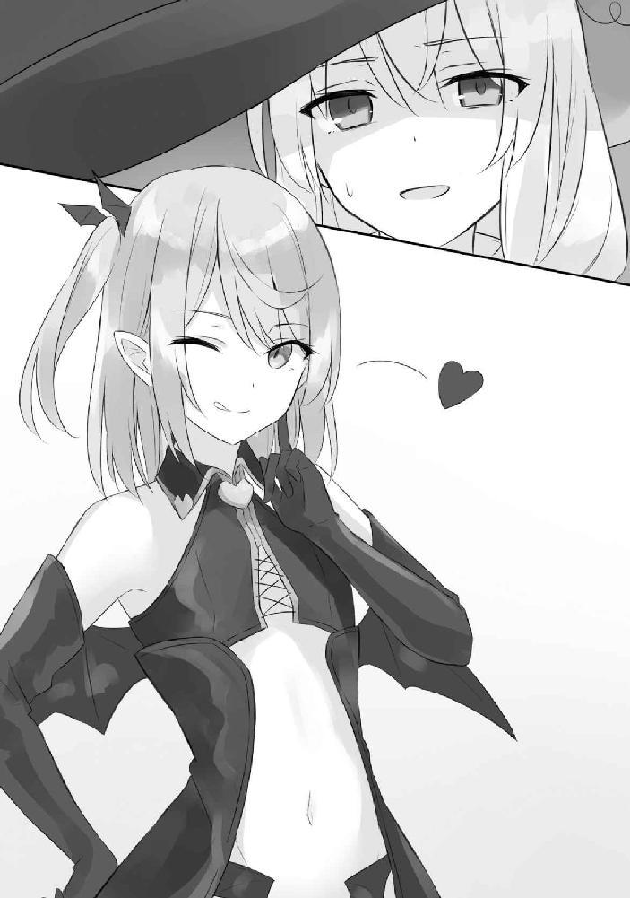
世にも珍しくそのインキュバスはインキュバスでありながら女性の衣装を身にまとい、まさにサキュバスのように男も女も関係なく誘惑するとんでもないモンスターだといいます。
なんでも、その国の男性たちから「こんなに可愛いサキュバスが女の子なわけがない」という、もはや意味不明を通り越して理解不能なキャッチフレーズとともに彼（彼女？）はまさしく夜の頂点に躍り出たそうです。
尚、職を奪われたサキュバスたちは抗議団体を設立し、現在、インキュバスをとんでもないモンスターに仕立て上げた魔女を血眼になって探しているようです。
めでたしめでたし。
「............」
いやめでたくないです......。
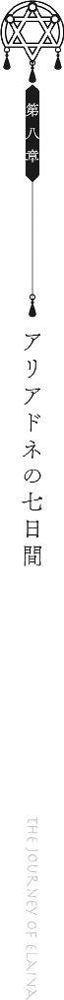
『六日目 昼』
夏の終わりの涼しい風がただよう午後。
ラトリタ国立学園の講堂に二人の生徒が足を踏み入れました。
一人は黒のブレザーを着込んだ少女。髪は灰色。長く、さらりと伸びています。瞳は瑠璃色。講堂のずっと向こうをただじっと見つめています。
見るからにただの学生の彼女は一体誰か。
そう、私です。
「緊張してますか、アリアドネさん」
私の横には一人の女子生徒の姿がありました。
赤いブレザーと黒のスカートの女子生徒でした。髪は赤色。後ろ二つで括られていました。瞳は青色。色彩鮮やかな瞳は私を見つめました。
「ん？ え？ 緊張する必要あんの？」
もう少し緊張感を持っていただけたら嬉しいのですけれど彼女はそういったものとはどうやら無縁のようです。
「私たち、二人して呼び出されたんですよ。何か裏があると思ってしかるべきでしょう」
などと私が咎めるような視線を彼女に向けても、
「分かんないわよ？ もしかしたら何か困っていてあたしたちに手を貸してほしいのかもしれないわ」などとやはり彼女は飄々とするばかりです。「......もしもそうなら、あたしたちの目的も達成されて助かるんだけどね」講堂の向こうに立つ彼女を見つめながらもアリアドネさんはわずかに目を細めました。優しそうでもあり、しかし物悲しい瞳でした。
しかし残念。
「明らかに私たちに助けを求めている目ではないですよ、アレ」
私は指差します。
講堂の向こうには、私たちを待ち受ける少女が一人いました。アリアドネさんと同じブレザーの上に黒いマントを羽織っています。赤黒い髪を頭の横一つに括った彼女は、やる気のない瞳でこちらを見下ろし。
そして人形のようにただ佇んでいました。
「で、あたしたちを呼び出した理由って何なの？」
単刀直入あるいは愚直に、アリアドネさんは彼女に尋ねていましたが、しかし向こうの彼女は、
「私からは言えないわ」
とただ首を振るだけでした。
「あらドライだこと」
呆れたように肩をすくめるアリアドネさんでした。
しかし。
私からは言えない、とは一体どういうことで？
「──あなたたちを呼び出したのはその子ではないのよ」
講堂の向こうに立つ彼女──セラさんの言葉に含まれたわずかな違和感に引っかかりを感じた直後でした。
冷たいヒールの音が響き渡りました。
風に揺られる春の若草のように艶やかになびく髪を揺らしながら悠然と私たちの前に現れた彼女は、ただ歩いているだけだというのに、しかしとても威圧的で、背筋がぞわりとします。
やがて彼女は、私たちと対峙するセラさんの横に留まりました。
「わたしのことを嗅ぎまわっているネズミがいることは知っていたけど──あなたたちでしたのね。残念です。とてもとても、残念です」
この学園始まって以来の優秀な先生。将来の学園長。そこそこ若くて優秀な凄い先生。三十路。かしこいかわいいヴィヴィアン先生。──などとありとあらゆる称賛（後半は全然関係ない気がしますが）を欲しいままにしてきた教師がそこにはおり。
その彼女から冷たく放たれた言葉は、私と、そして隣に立つアリアドネさんに注がれました。
「うそっ。マジ？ バレてたらしいわよイレイナちゃん」緊張感皆無な我が隣人でした。
「......むしろ私は最初からバレているものだと思っていましたけどね」私も嘆息で答えていました。
正直に申し上げて、ここ数日間でヴィヴィアンさんの動向を探っていた私たちは傍目に見れば怪しさ満点だったと思います。私が逆の立場だったら即刻ひっとらえて拷問にかけていたくらいには。
同様にヴィヴィアンさんが私たちに声をかけた動機も怪しすぎました。私がただの生徒の一人だったのならば即刻お断りしていたくらいには。
「調べればすぐに分かりました。生徒名簿が教えてくれました。イレイナという生徒も、アリアドネという生徒も、この学園にはそもそも存在していないことを」
彼女は杖をこちらに向けて、そして言います。「あなたたちは何者ですか？ どうしてわたしの邪魔をしようとしているんですか？」
私は鼻を鳴らしていました。
「魔法で脅せばあっさり正直に答えると生徒名簿には書いてあるんですか？」
「......今後書くことにはなるでしょうね。きっと書かざるを得なくなるでしょうね」
そして杖を振るいます。
直後に講堂の床が割れ、私たちの真後ろの扉に亀裂が走りました。とてつもない突風が吹いたらしいと把握できたのは、それから遅れてそよ風が吹いて私たちの制服のスカートを揺らしてからのことでした。
なるほど自らの能力をご自慢したいようで。
もしくは扉を壊したことで退路を断ったつもりなのでしょうか。
「二人とも、正直に答えたほうが身のためだよ。先生はべつに二人を殺す気まではないんだから」
ヴィヴィアンさんの横で、セラさんは言いました。忠告のつもりでしょうか。
「セラ。無駄よ。少し痛めつけてあげないと、あの二人はきっと何も答えませんから。二人はどうやら頭があまりよくないみたいですから」
こちらは挑発のつもりでしょうか。
そんなものにあっさり乗る私たちではないのですけれど。
しかし。
「私たちがここに来たのはあなたの愚行を止めるためです。これ以上セラさんを操り人形にするのはやめて頂けますか」
私も杖を手に取りました。相手がその気なのでしたら、こちらも相応のやり方というものがあります。
「操り人形になんてなっていないわ。私はただ、先生の下で立派な魔法使いになりたいだけ」
私を見下ろすセラさん。
しかしその目には生気が宿っていないように見えました。
ただ先生の言うことだけに盲目的に従い、善悪の基準すら曖昧で、判断力は露ほどにもない少女がそこにはいました。これが操り人形でないなら何だというのでしょうか。
「わたしをあなた一人で倒すつもりですか？ 生徒たった一人で」
ヴィヴィアンさんの瞳は私とアリアドネさんを交互に見つめていました。「そちらのアリアドネさんは魔法が使えないものね？ だから折角目をかけてあげたのに。セラと同じように魔法使いにしてあげようと思っていたのに」
「そんなもん要らないわよ。あたしは別に魔法なんて使えなくても十分幸せだもの」アリアドネさんは吐き捨て、そして私の後ろに隠れました。「というわけで、守ってね？」
「............。あ、はい」
かっこいいんだかかっこ悪いんだかよく分からない彼女でした。
ともあれ、私は彼女を後ろに控えながら、杖を構えました。
相手は学園始まって以来の優秀な先生やら何やらよくわからない称号を持ち合わせた教師。
決して油断できる相手ではないでしょう。
「魔法がなくても幸せ......？」
ヴィヴィアンさんの表情は陰り、その手には力が込められたように見えました。「思いあがらないでください。魔法が使えない人生に意味なんてありませんの。魔法が全てなのですから──！」
そして、彼女は再び杖を振るいました。
『三日目 昼』
ばんっ。と耳をつんざく音が、私の意識を現実に戻しました。
少しぼうっとしていたようです。教室の窓から教卓へと視線を映すと、渋い顔をした中年教師の顔が見えました。
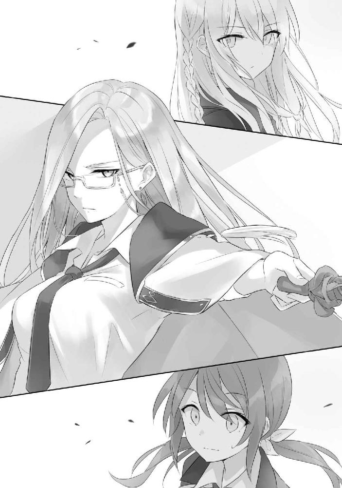
まるで喋ることを禁じられているように教室の中はしんと静まり返っています。
あたりを見渡せば、教卓を囲うように弧を描いて並ぶ席にぽつりぽつりと生徒が腰を下ろしているのが見えます。怯えたように委縮する生徒や、黒板に書かれた文字を必死に映し続けている生徒、もしくは迷惑そうに教師にひややかな目線を浴びせる生徒の姿もありました。
「あなた！ お名前は？」教師の目は鋭く私を捉えていました。
「イレイナです」あくびをしながら私は答えます。
「そ。イレイナさんね。あなた、授業が始まってからずーっと窓の外を見ていましたけれど！ この私の授業が退屈とでも言いたいのかしら！」
腰に手を当て眉を吊り上げる中年教師の後ろ一面に広がる黒板には、魔法を用いた薬の作り方や、そのために必要な材料などが料理のレシピのように延々と書かれており、
「魔女見習いになりたいのならこの授業は必須科目よ？ あなた、ちょっと弛んでるのではなくって？」
ということでした。
ラトリタ国立学園は魔法使いと、それ以外の生徒が半々で通う共学であり、特にその中でも魔女見習いを目指す生徒にとってこの授業は重要な意味を持ちます。
魔女見習いへの昇格試験で出る範囲なのです。
まあ要するに私にとっては既に通った道なわけですけれど。
「......すみません。気をつけます」
とりあえず平謝りをひとつ。
退屈だったとはいえ授業を微塵にも聞いていなかったのは事実ですし。
「気をつけます、ではなくってよ？ 罰としてこの問題を解きなさい！ 解けなかったら二度と私の授業を受けさせないから！ さあ立ちなさい！」杖でばちんと黒板を叩く教師。
どうやらやる気がなく素行の悪い生徒に恥をかかせたいようです。彼女が差したものは『眠り薬の作り方』でした。必要な材料は全くの空欄となっており、つまり材料と作り方をすべて答えよ、と言っているようです。
難問です。
私は立ち上がりました。
「まずネムの草を十日間乾燥させたものをすりつぶして粉状にしたもの、それと眠っている羊から引っこ抜いた羊毛をひとつ。これらを清らかな水に混ぜて魔力を注ぎます。それから──」その後三十秒ほど費やして私は薬の原材料と作り方を説明して差し上げました。
「............」教師は正解とも間違っているとも言わずに、ただ悔しそうな顔をしたのち、「......じゃあこれは」と再び黒板を叩きました。
そこには材料のみが記されていました。
「その材料でしたら麻痺薬ができます」
「......じゃあこれ」
「一定時間鼠に変身できる薬ですね。それでしたら──」材料を滔々と語る私でした。
恐らくは私に意地悪をしようとしたのでしょうが、ことごとく私はすべて答えていきました。
やがて中年教師は苦い表情を浮かべながら、
「座ってよし。私の授業で二度と暇そうにしないように」
とだけ。
「先生」
「......なにかしら」
「そこの材料間違ってます。あと薬の生成方法も違います。そことそこ」
「............」
目には目をの精神にのっとりささやかな仕返しをしてから、私は椅子に座りました。
それからの授業はとてもとても静かなものでした。もしかしたら私が単に授業を聞いていなかっただけかもしれませんけれど。
○
私は本来旅人として色々な国を渡り歩いているわけですが、こと今回に関しては色々と事情があり、私はラトリタ国立学園の生徒として潜り込んでいました。
ゆえにいつもの私とは違い、今日はブレザータイプの制服と、そのうえにマントを羽織っております。制服に袖を通すのはかれこれ数年ぶりということもあり、もしかしたら似合わないかもと危惧したりもしたのですけれど、存外似合っていました。自分で言うのもアレですけど。
「イレイナさん！ 次の授業、何受ける？ よかったら私と一緒に魔法史の授業を──」「は？ イレイナさんはあたしと数学の授業受けんのよ！」「いや私と哲学の授業を受けるから」
授業も終わり、教室から出ようとした私を引き留める生徒が数名いました。
この学園に潜り込んでまだ二日しか経っていないはずなのですけれど、どうやら色々な意味で私は目立ってしまっているみたいでした。
当初の予定では上手い具合に学園に潜り込んで、上手い具合に人の救出をするはずだったのですけれど......。これでは完全に悪目立ちです。
私のカリスマ性的なものが人を惹きつけるのでしょうか......？
「イレイナさんといればとりあえずムカつく教師黙らせられるしね」「便利だし」「というわけで私と哲学の授業を」「だめよ。魔法史受けるから」「いや数学を」
「............」カリスマ性でなくただ単に便利な物扱いを受けているだけのようでした。「すみません。私、ちょっと人と会わなければいけないので」
私は彼女らのお誘いを例外なく無下にしてから、教室を出ました。
このラトリタ国立学園での授業は基本的に生徒たちが自分自身で、毎日の時間割を決めることになっているようです。ゆえに私たちは容易にこの学園に潜り込むことができました。この学園の警備はザルすぎると思います。
とにもかくにも、そういう事情ゆえに、できる限り私はこの学園の生徒らしく振舞わなければならないということです。
人ともあまり関わり合いを持たないほうがいいでしょう。
「──だからね？ 大事なときにボタンがとれると不格好でしょ？ こういう暇なときを使って直さないと後悔しちゃうんだからね。気をつけなさいね？」
私は中庭へと足を運んでいました。授業の合間に人と会う約束をしていたのです。
けれど。
「──あっ！ ちょっとあんた。髪が目にかかってるじゃない。危ないわよ。このヘアピンをつけなさいな」
なぜか中庭には人だかりができあがっていました。
女の子たちが一人の女子生徒を取り囲んできゃーきゃー言っておられました。
「──あ！ 何その短いスカート！ はしたないわよ。女の子はもっとおしとやかにしなきゃ。さ、折り曲げたスカートを戻して！ スカートは膝にかかるくらいが丁度いいのよ」
その中心には、紅葉のように赤い髪を頭の横二つで結んだ少女がおりました。着込んでいるのは赤いブレザーと黒のスカート。魔法を学ぶことのない一般課程の生徒です。彼女はせわしなく女子生徒たちにおせっかいを焼き、その度に黄色い声援を受け続けていました。
「ふっ......お姉さまとお呼び」
なんか変な台詞を吐きながら髪をかき上げてすらいました。
............。
「なにやってんですかアリアドネさん」
「あらイレイナちゃん。遅かったわね」
はろー、と呑気に私に手を振るアリアドネさん。一方でなぜか取り巻きの女子生徒たちからは敵意を込めた視線を送られました。
「皆ごめんねー。あたし、あの子と先約があるからさ。次の授業は一緒に行けないのよ」周囲の女子たちにウインクを送ってから私の元へと小走りで駆け寄るアリアドネさん。ついでとばかりに私の腕にしがみつきもしました。
............。
取り巻きたちの視線が殺意を込めたものにかわるまで時間はかかりませんでした。
「火に油を注がないで頂けますか」
「？ 何のこと？」
「無自覚ですか......」
私たちは並んで、刺すような視線を背中に受けながら中庭を後にします。次の授業はアリアドネさんと一緒に受ける約束になっていたのです。
「......というかですね、隠密行動中だから目立たないようにしようと言ったのはアリアドネさんのほうじゃないですか。滅茶苦茶目立ってるじゃないですか。何やってるんですか」
廊下を歩きながらアリアドネさんをじろりと睨みますが、彼女は「あー、そんなこと言ったっけ」と笑います。
「それを言うならイレイナちゃんだって授業で教師に嫌がらせをして目立ってたそうじゃない。聞いたわよ」
「......耳が早いですね」
「まあ、別に考えなしで目立ってたわけでもないってことよ。ああやって人がたくさんいれば、いろいろな話が耳に入ってくんのよ」
「ではヴィヴィアンさんの裏情報も少しは集まりましたか？」
「んー。全然まったくこれっぽっちも集まってないかなー。イレイナちゃんは？」
「全然まったくこれっぽっちも」
「そりゃ残念」アリアドネさんは軽く肩をすくめました。
「ヴィヴィアンさんに与する生徒は皆揃って口が堅いようですね。彼女のことを聞いてもほとんどの生徒が『いい先生』としか答えませんでしたよ」
「表向きには、ね──裏では何やってるかわかったもんじゃないわ」
と言いながら、ぴたりとアリアドネさんの足が止まります。
廊下の突き当たりにある教室。既にほぼ満員状態となっているそこは、戦闘用魔法の教室であり。
ヴィヴィアンさんが教鞭をとっている教室でもありました。
「......あの子」
出入口で棒立ちになりながら、私はアリアドネさんを肘で小突いて指差しました。
そこには私たちが探していたセラさんの姿もありましたから。
○
「今日みなさんに教える魔法は戦闘用魔法の中でも特に汎用性の高い魔法──風魔法です。風魔法といえば読んで字のごとく、魔法で風を操り、人に差し向けるもののことです。これの恐ろしさは何といっても、魔法の姿が見えないことにあります。つまり防ぐことはおろか、避けることも困難。正面きっての戦闘はもちろん、隠密行動にも活用できる汎用性豊かな魔法と言えるでしょう」
隠密行動という単語に少々どきりとした私でした。
大丈夫ですよね......？ ばれてないですよね？
ひやひやとする私をよそに授業は進み、「では実演してみましょう」と教卓に立つヴィヴィアンさんが杖を振るいながら、使い方や魔力の込め方を解説していきます。新緑色の髪はその度にさらさらと靡いていました。
「ともかくセラをここから救い出す方法を探さなきゃだめね......」アリアドネさんはヴィヴィアンさんを真剣に見つめ──もしくは睨みつけながら言いました。「ヴィヴィアンを説得してセラを解放するように頼もうかしら」
「素直に私たちの言うことを聞いてくれるような人にはとても見えませんけれど」
セラさんのようにヴィヴィアンさんを心酔している生徒は──させられている生徒は、恐らく彼女のほかにもたくさんいるはずです。もしかしたらここにいるほとんどがヴィヴィアンさんの息のかかった生徒である可能性すらあります。直接頼みに行くのは愚直にも程があるでしょう。
「はっ......！ 妙案を思いついたわ！」声を沈ませながらも、突然ぽんと手を叩くアリアドネさん。「イレイナちゃんがあいつを襲撃すればいいのよ」
「......襲撃したあとはどうするんですか」
「ふふっ......そんときはアレよ。即興で上手いことやんのよ」
「もうちょっと上手い方法を考えてもらえませんか」
「えー？ 妙案じゃない！ イレイナちゃん、やっちゃって？」
「やですよ......」
もし上手い具合にヴィヴィアンさんを襲撃できたとしても、周囲の生徒たちから袋叩きに遭う未来しか見えないのですけど。
「──ああ、ところで話題は逸れますけれど。皆さんの中で一般課程の生徒はどれくらいいますか？ 挙手を」
ふいに壇上のヴィヴィアンさんは、自らの手を挙げて、生徒たちに挙手を促しました。
ぽつりぽつりと教室のあちこちから手が伸びました。私の横でアリアドネさんも素直に挙手していました。私と同様に魔法使いであり、我関せずと壇上を眺めているだけの生徒は約半数。セラさんも同様でした。なるほど戦闘用魔法の授業とはいえど、魔法使いだけが授業を受けているわけではないようです。
「あら半分もいるのですね──でも必修科目ですから、魔法が使えないから関係ない......なんて思わず、授業は真面目に受けてくださいね？ 私の授業では戦闘用魔法の対処法も教えていますから」
ちらりとヴィヴィアンさんの目がアリアドネさんを捉えていました。
一般課程の生徒と魔法学専攻の生徒の違いくらいは、私やセラさんが今現在羽織っているマントの有無で一目瞭然です。羽織っている生徒が魔法学専攻で、それ以外が一般課程ですから、わざわざ挙手させずとも見れば分かるはずです。
どうやら単にお前らうるせぇよと言いたいだけだったようです。
「では授業に戻りますね──」
と、そのあとでヴィヴィアンさんは何事もなかったように授業を再開しました。彼女が先ほどの中年教師のような人だったら、もしかしたらアリアドネさんが望んだとおりの展開になっていたかもしれませんね......。
「ちょっとお喋りが過ぎましたね」私はペンと紙切れを持ちました。「まあ、セラさんを救い出す方法なら、襲撃以外にも色々と方法はありますよ。私に任せてください」
さらさらとペンを走らせること数秒間。紙切れを小さく折りたたみました。
私はそのあとで、前の席にいた女子生徒の肩を叩き、「これ、前の席の茶髪の子に渡してくれますか」と手渡しました。
私の二つ前の席には、口にした通り茶髪で、艶のあるその髪を頭の横で一括りに結んでいる女子生徒の背中がありました。
アリアドネさんが救いたがっている少女──セラさんです。
私の作戦はこうです。
セラさんに直接交渉し、ヴィヴィアンさんと接触できるよう取り合ってもらえないかと頼み込むのです。
『このあと、暇ですか？ よかったら少しお話をさせてもらえないでしょうか』
まずはそのためにも約束をとりつけましょう。
実に無難ですが、この作戦なら上手くいくでしょう──。
ところが。
前の席の女子は「え、なになに？ ラブレター？」とくすりと笑いながら妙な勘違いを起こし、セラさんの背中をちょんと小突いたあとで、「後ろの子からラブレターだよ」などと意味不明なことを口走りながらセラさんに手渡しました。
たぶん私とセラさんが面識のある友人同士だと勘違いしたのでしょうけれど。
正直に申し上げて初対面です。
「............」ゆえに振り返って手紙を受け取ったセラさんは、蒼の瞳を細めながら私を軽く見上げ、とてもとても迷惑そうな様子でペンをとり、投げるようにおざなりに間の生徒に渡しました。
「あの子ツンデレだね」またわけのわからないことを言いながら私に手紙を戻す女子生徒でした。
戻ってきた手紙にはただ一言、こう書いてありました。
『すみません私そういう趣味ないんで』
............。
「そういえばこの学園では授業中に手紙のやり取りをするのは恋人同士のささやかな楽しみって伝統があるのよ」横から手紙を覗き見ながらアリアドネさん。
「そういうの先に言ってもらえませんか」
「いや知ってると思ってた」
「............」
「でもこれはチャンスよイレイナちゃん。貸して」
アリアドネさんは私からペンを奪い取ると、また手紙を綴りました。「これを機にセラとお友達になればヴィヴィアンの支配下に潜り込めるかもしれないわ」
彼女は書きました。
『ごめんネー！ ぁたしの友達が変なコト言っちゃって（焦） でも別に悪気はなくて、ぁたし、あなたとお友達になりたいだけなの（笑） セラっちのこと色々知りたいな←』
............。
えもいえぬ感情を抱いた私を後目にアリアドネさんは自信満々に手紙を渡しました。
直後に戻ってきました。
『きも』
「滅茶苦茶嫌われたじゃないですか......」
「あの子ドライだから......」
「いやそういう問題でもない気がしますけど」やはり私がやりましょう。「もー。貸してください」
書きました。
『私たちはセラさんとお友達になりたいんです。よかったらお話だけでも』
『私いま忙しいんで』
『それはヴィヴィアン先生のお相手をするのに、ですか？』
『どうして答えなきゃいけないの』
『ところでヴィヴィアン先生のことどう思いますか？』
『私のこと口説いてるのにほかの女の話をするのね。意味わかんない』
こちらこそ意味わかんないですよ......。
結局それからもしばらく手紙のやり取りはしましたが、やはりだめでした。
全くもってこれっぽっちも進展は見えないまま、授業は終わりの時間を迎えてしまいました。
ヴィヴィアンさんはやはり人気の教師であることは間違いないらしく、授業が終わると同時に生徒たちがやんややんやと彼女に集まりました。
「授業後に直接コンタクトをとろうと思ってたんだけど......あれじゃ土台無理そうね」
「そのようで」
人で壁ができあがってしまっております。あの中をくぐり抜けるのは至難の業といえるでしょう。
「どうする？」
「......やはりここはセラさん経由でヴィヴィアンさんの懐に潜り込むしか──」と、そのとき気づきました。「......どうやらセラさんも壁の一部になっているようです」
人だかりの中でやけに目を輝かせながらヴィヴィアンさんを見つめるセラさんの姿がそこにはありました。まさに恋する乙女のよう。
これではヴィヴィアンさんと言葉を交わすことはおろか、セラさんに話しかけることすら難しいように感じられました。
「くっ......、面倒だわね......一体どうすりゃヴィヴィアンに接触できんのよ──」
と、アリアドネさんがヤケクソ気味に言葉を漏らしたときでした。
「あなたたち」人だかりの中から、声がしました。「そこのあなたたち」
生徒たちの視線がこちらに向き、そのあとで、ヴィヴィアンさんが真っすぐにこちらを見つめていることに気がつきました。
私たちと目が合った彼女は、それからすぐにこちらに向かって歩いてきました。
分厚いように感じられた生徒たちにより成った壁は、ヴィヴィアンさん自身の手によって崩され、そして彼女は、私たちの前に立ちます。
そして、にこりと笑って、
「あなたたち、今から時間はありますか？ よければ、私の研究の手伝いをしてくれないでしょうか？ 少しだけ、お時間をもらえないでしょうか」
彼女はそのように言いました。
研究。
それはヴィヴィアンさんがセラさんを連れ去ったときに使った言葉であり。
そしておそらくは、その言葉はヴィヴィアンさんの支配下に入ることを意味していました。
私たちが策を弄すことなく、彼女はそのように自発的に提案してきたのです。
「......向こうから来たときはどうすればいいかな」
ひそりと私に耳打ちするアリアドネさん。
「即興でなんとかすればいいと思います」
目には目をの精神で私も彼女に耳打ちを返すのでした。
『一か月前 昼』
大通りに面したパン屋から怒声が路地まで飛び出していました。ちょうど店に入ろうとしていた客は、店から漏れる険悪な雰囲気に踵を返し、そそくさと去って行ってしまいました。
ぴりぴりと震えるガラス扉の向こうには、睨み合う少女と母親の二人がただただいるだけでした。
「......もう一度言ってごらんなさい」
母親は声を沈めていました。客を一人逃したのが見えていたのです。「あんた、自分が何を言っているか分かってるの？」
娘は母親に吐き捨てるように答えていました。
「ヴィヴィアン先生の研究のために私は家を出るって言ったの。今後は先生の家に住むことになるから。何年かは戻らない」
つとめて冷静な言葉でした。
赤を基調としたブレザーを着込んだ彼女は、大きなバッグを重たそうに背負いながら、ため息を漏らします。
そんな彼女を、ただただ母親は苛立たしげに見つめるばかりでした。
「あんたはうちの店を継ぐのよ。それなのに学校の先生の家に住んで何をしようって言うの？」
「別に。勝手でしょ──それと、勘違いしないで。私はべつに許可を取るために母さんに話したわけじゃないの。これはただの事後報告よ。私は先生の下で、魔法使いになるの」
きっぱりと、娘は断言しました。
魔法使いが全生徒の約半数を占めるラトリタ国立学園に通う娘は魔法使いに強く焦がれていました。焦がれざるをえない環境に彼女は身を置いていたのです。
学園を卒業して華々しく国中で活躍する魔法使いの生徒たち。一方で娘のように魔法の使えない生徒はといえば、卒業しても就職先に恵まれないことが多くあるといいます。
埋めようのない格差が学園内には確かに存在しているのです。
「......あんた、最近変よ？ 学校に通うようになってから......いえ、そのヴィヴィアン先生に会ってからかしら......。魔法なんてなくてもいいじゃない......。この店を継いでくれれば──」
「聞きたくない」母親の言葉を、娘は断じました。「私は魔法使いになりたいの。だから、お母さん──私はしばらく帰らない」
くるりと踵を返し、そして娘は、振り返ることもせずに店を出て行ってしまいました。
娘は学園に通うようになってから、変わってしまいました。環境が変わったせいでしょうか。誰かと会ってからでしょうか。昔のように笑わなくなりました。母親に対して心を閉ざすようになってしまいました。昔のようにお店の手伝いをしてくれなくなりました。
母親は店を継いでもらうために娘にパン屋の手伝いをしてもらっていました。人づき合いができなければ店が立ち行かなくなるだろうと思い、社会勉強のためにと学校に通わせたことで、彼女は店を顧みなくなってしまったのです。
こうして娘は──セラさんは家出して、それっきり戻っていないと言います。
その翌日からセラさんは、一般課程から魔法学専攻へと移ったといいます。
『三日目 夜』
「どう思う？」
街の大通りにあるパン屋は若干特殊な佇まいをしておりました。パン屋でありながら、なんと店内に喫食スペースがあるのです！
最早これはパン屋というよりもパンがメインの喫茶店と呼んでも差し支えないのではないでしょうか。しかも店内の喫食スペースを利用するとコーヒーをサービスしてくれるのです。
「最高です」
新感覚のパン屋にやや興奮している私でした。
「言っとくけどあたしは店の感想を聞いたわけじゃないからね」じとりとアリアドネさんは目を細めました。
おっと違いましたか。
「......ヴィヴィアンさんが提案してきた件ですか」
私は店員さんが運んできてくれたコーヒーを受け取りながら、軽く礼をして一口飲みました。
こくりとアリアドネさんは頷きます。「ええ。どうにも臭うと思うの」
「......いい香りですよねぇ」
「言っとくけどあたしはコーヒーの感想を言ったわけじゃないからね」
「............」
私はコーヒーカップを置きました。「正直に申し上げて、私は罠だと思っています。あまりにも都合がよすぎますし」
「でしょうね。あたしも同意見。──だけど、これが一番手っ取り早い方法であることも確かよ。これを逃す手はない」
「つまり罠だと分かっていながら飛び込むわけですか」
「そういうこと」
アリアドネさんは軽く頷きました。「くれぐれも警戒は怠らないようにしないとね。セラもヴィヴィアンに会ってから変わってしまったから──」
「......私は別に大丈夫だと思いますよ。既に魔法使いですし」そもそもヴィヴィアンさんがどうして私に声をかけたのかまるでもって分からないくらいですし。「恐らく彼女はあなたに目をつけてきたのだと思います。むしろ気をつけるのはあなたのほうですよ」
「そうねぇ......」
彼女はため息のように深く息を吐くと、カップを手にとりコーヒーを一口飲みました。「もしもあたしに何かあったら──そのときは、あたしの代わりにあの子を救ってあげて頂戴」
「遺言みたいですね」
「そのつもりで言っているもの」
「でしたらその言葉は受け取れませんね──あなたに死なれては困ります」
私は答えました。
「あなたは私との約束を守らないといけませんから」
『四日目 夕方』
翌日から授業後に私たちはヴィヴィアンさんと行動を共にするようになりました。
「ようこそ私の研究室へ。さ、どうぞ入って。歓迎します。とてもとても、歓迎します」
にこりと優しそうな笑みを浮かべながら、彼女は研究室に私たちを案内しました。先日授業を行った廊下の突き当たりにある教室。その奥にある小部屋には、さまざまな薬品と研究資料が雑多に置かれていました。
ぐつぐつと鍋に入れられて茹っている謎の液体、ガラス瓶に入れられた謎の液体、それらを作るための設計図となる研究資料。あらゆるものがそこにはありました。
怪しさ満点です。
「............」
ところで私たちを快く歓迎してくれたヴィヴィアンさんですが、既に室内にいたお友達はそうでもなかったようです。
セラさんはじっときつい目線を私たちに送ると、「......歓迎しまーす」と今にも唾を吐きかけられそうなくらいに冷たい声色で表面上だけ歓迎してくれました。
有体に言って滅茶苦茶嫌われてる私たちでした。
ヴィヴィアンさんはそんな私たちの微妙な関係性に気づくことなく、「二人にはまだ紹介していなかったですね。こちらはセラ。少し前から私の研究のお手伝いをしてくれている女子です」
「......よろでーす」
セラさんはその辺の床を向きながら挨拶をしました。
「イレイナです。よろしくお願いします」と私がお辞儀をしても無視。
「アリアドネよ。よろしくね？ セラちゃん」とアリアドネさんが手を振っても無視。
無視されすぎてもはや私たちは存在していないモノなのではとすら思えたほどでした。
「ごめんなさいね......この子ドライだから」
うふふ、とヴィヴィアンさんはにわかに笑いました。
いやドライ以前の問題なのでは。最早感情が希薄すぎるんですけど。
今までヴィヴィアンさんの研究に携わっていたのはセラさん一人であるようでした。一体なぜ人気の先生がセラさん一人をターゲットに絞り今まで研究につき合わせていたのはよく分かりませんでしたが、少なくともセラさんのように利用されている生徒がほかにいなかったことは嬉しい誤算ではありました。
「早速だけれど、急ぎで申し訳ないのだけれど、あなたたちには私の研究を手伝ってもらいます。アリアドネさんはセラと同じく材料の調達をお願いします。イレイナさんは私と一緒に薬の調合をしましょうか」
ヴィヴィアンさんは手をぽん、と叩くと、アリアドネさんとセラさんにそれぞれ紙切れを手渡しました。
セラさんにとっては慣れたことのようで「分かりました」とだけ言って彼女は部屋を出てしまいました。アリアドネさんも「あ、よかったら一緒に......」と、迷いながらも彼女の背中を追います。
ぱたん、と扉は閉ざされ、流れるように私とヴィヴィアンさんは部屋に取り残されました。
「さ、では薬の調合に入りましょうか」ヴィヴィアンさんは机の上に材料を幾つか並べると、「これが新しい魔法薬の材料と調合方法です。今日はこれを試してみたいと思うのですけれど......何を作るか、分かりますか？」と私にも紙切れを寄越しました。
魔法薬の作成は試行錯誤の連続で、数え切れないほどの失敗作が積み重なった末にたった一つの完璧な薬ができあがると言います。
恐らくはヴィヴィアンさんはまだ失敗作を積み重ねている段階なのでしょうけれど。
「............」
材料と、それらを用いた調合方法までつらつらと述べられている紙切れには、確かに、今しがた机に並べられた材料と同じものが記されていました。
私はそれらを見比べたうえで。
彼女が作ろうとしているものを理解しようとしたうえで。
「......分かりません」
そのように、呟いていました。
ヴィヴィアンさんは「あら......まあ、まだ学生だものね。分からなくても仕方ないでしょう」と呟き、
「この薬は世界を変える新薬です。もうすぐ完成間近なんですよ？ 恐らく、これが完成した暁には、この世界に不幸な人はいなくなるでしょう──」
と言いました。やはりにこやかに笑いながら。
「............」
彼女が作ろうとしている薬に名前はありませんでした。けれど、材料と、その生成方法から、なんとなくですが作ろうとしているモノくらいは察しがつきました。
彼女が作ろうとしているのは、魔力を身体に定着させて、それを一時的に操ることができるようになる薬です。
恐らくは、誰もが簡単に魔法使いになることができる薬。
一見すればそれは確かに革命的で、素晴らしい魔法薬のように思えましたけれど。
「......でも、ヴィヴィアンさん。これは......」記された材料の中には、一般的には有毒とされるものもあれば、言い換えれば『混ぜるな危険』の代物も混ざっていました。「こんなものを飲み続けたら、人体にどんな影響が出るか分かったものじゃないですよ。いいんですか？ こんなものを使っても」
「あら。いいに決まっているじゃないですか」
ヴィヴィアンさんは、それがまるで当然であるように、軽く首肯したうえで、言いました。
「犠牲なくして世界は変えられませんもの。魔法を得るために相応の対価を払わなければならないことくらい、当然でしょう？」
私には分かりませんでした。
一体どうしてこんな危険なものを作ろうとしているのかが。
何が彼女を突き動かしているのかが。
『四日目 夜』
「......つまりヴィヴィアンはこの世からあたしのような人間を消し去ろうとしてるってこと？」
先日と同じようにパン屋にて作戦会議は行われました。
ひとしきり私の報告を聞き終わったあとで、アリアドネさんはテーブルをばんばんと叩き憤慨しておられました。
「絶対にそんなことさせないわよ！ 今すぐあの女のその怪しい研究とやらを邪魔してやりましょう！」
「ええ──そう言われると思って今日は研究資料をいくつかくすねてきました」
「あんた手癖悪いのね......」
「そう言われるとも思っていましたよ」けれど事情が事情だけあって致し方ないことでしょう。「正直に申し上げて、ヴィヴィアンさんが作ってきた薬は今までどれもかなり危険な材料を用いたものばかりです」
研究のための助手を最低限の人数に留めているのにも納得がいくというものです。危険な代物を使っていると知られたのならば、彼女はもしかしたら学校から追い出されるかもしれませんから。
ならば、だとするならば、
「セラさんがあんな風に感情が薄い状態になっているのは、もしかしたら今まで使われた薬の副作用によるものかもしれません」
危険な薬の研究につき合っているセラさんは、よほどの人好きか、もしくはヴィヴィアンさんを全面的に信頼しているのか、もしくはさせられているのか──。
どの可能性も否定はできませんが、しかし答えがどこにあるにせよ、ヴィヴィアンさんを止めない限りセラさんを救うことはできないということになります。
「ともかくあの女の研究が完成しなければいいのよね？ 絶対に不可能だと思わせればいいのよね」
「............」研究資料の数からして相当長いこと研究をなさっているのが窺えますし、少しの失敗程度では諦めるような気がしませんけれど......。「何か手があるんですか？」
「あるに決まってるわ！」
彼女は腰に手を当てて立ち上がりました。
「即興で邪魔してやんのよ」
「............」
ないってことでいいですか。
『五日目 夕方』
即興で邪魔をすると豪語していたわりにアリアドネさんには明確な計画があったようです。
今日の朝にはアリアドネさんから計画の詳細を聞かされましたから。
聞かされたというのはつまるところ、計画の実行に私の協力が必要不可欠だと判断したのでしょう──実際問題、その計画の全容は私の協力を前提としたものでしたけれど。
計画、その一。
「二人とも、薬の材料は揃えてくれましたか？」昨日と同じく材料の調達に行って戻ってきたアリアドネさんとセラさんを迎えるヴィヴィアンさん。
彼女の言葉にセラさんは無言で頷き、アリアドネさんは静かに首を振りました。
「あたしの材料、集まりませんでしたー」
アリアドネさんが手にしている袋には確かに材料がある程度入っていましたが、明らかに数が少なく、言うまでもなく集まっていませんでした。
やる気がないとしか思えないくらい集まっていませんでした。
「あら......それは仕方ないですね......」袋をちらりと見たヴィヴィアンさんは眉根を寄せて、言いました。「ではもう一度集めに行ってくれますか？」
「あーちょっとあたし脚が疲れちゃってぇー。無理」
無理とは何か。
明らかに舐めているとしか思えないこのふざけた態度。しかし、これこそがアリアドネさんがたてた戦略だったのです。
このクソ生意気な態度により相手を苛立たせて、ヴィヴィアンさんの思考力を削ぐ作戦なのです。
............。
最初に聞いたときは正気かと思いましたが実践しているところを見るとどうやらマジなようです。
「......それではイレイナさんとセラで行ってきてくれますか。アリアドネさんは私の助手をしてください」
しかも普通に配慮される始末ですらありました。甘すぎる......。
しかしこれもアリアドネさんの計画の一つでした。こうすることで私を材料の回収に向かわせるだろうと思ったのでしょう。
計画、その二。
セラさんと二人で残りの材料を探しました。
メモ帳を見る限りアリアドネさんが手に入れられなかったものは、そもそもその辺に生えてる雑草でした。
「......なんで雑草を見つけられなかったんだろ。無能なのかな、あの人」中庭にわんさか生い茂っている雑草を前にして毒づくセラさんでした。
「ばっちいから触りたくなかったんじゃないですか」
「............」
私とセラさんの会話はそこで終了しました。もしかしたら彼女からすればそもそも私と会話している気ですらなかったのか、それから彼女はずっと黙々と雑草を千切っては袋に突っ込み、千切っては袋に突っ込みました。
傍目にみればボランティア活動に勤しんでいる心優しき生徒のそれでした。
「セラさんはいつからヴィヴィアンさんのところで研究のお手伝いをしてるんですか？」あまり会話がないと暇でしたので私は雑談交じりに作業をしました。
「......一週間くらい前から」今度はしっかりとお答えしてくれました。
「へえ。......でも、どうしてヴィヴィアンさんのお手伝いをしているんです？」
「......先生が何の薬を作ろうとしているか、聞いた？」
「ええ──まあ」私は彼女のほうに目をやりました。黙々と雑草だけに生気のない目を向けている彼女がそこにはいました。「魔法使いになれる薬、ですよね」
「そう。......私は先生の計画は素晴らしいと思う。皆が魔法使いになれば、もう誰も苦労することはないから」
「魔法が使えないことが不幸だと思うんですか」
「不幸に決まっているわよ」
きっぱりと彼女は答えます。暗い瞳のまま。「魔法使いと私たちみたいな人間を一堂にまとめているこの学校の中にいれば、嫌でも目につくもの。魔法が使える生徒と、私たちの違いくらい」
「............」
たとえばヴィヴィアンさんの授業だってそうなのかもしれません。必修科目としておきながら、授業内容は明らかに魔法使い向け。魔法が使えない生徒にとってあの時間は苦痛以外の何物でもないのかもしれません。
この学校では普通の学問も教えているとはいえ、魔法使いのみ参加を許可している授業もちらほら見受けられました。私が一昨日受けた魔法薬学の授業もその一つでありましたし。
そんな風に差別的に扱われてしまえば、劣等感が常につきまとうものなのでしょうか。
「......だから魔法が使えるようになって、劣等感を取り払いたいんですか」
「うん──。それもある、けど、でも、一番の理由は違うわ」
「......何ですか？」
首をかしげる私に、彼女は言いました。
「お母さんを喜ばせたいから」
はっきりと。きっぱりと。ただ一言だけ。
そのときだけは、彼女の瞳に、ぼんやりながらも光が宿ったような気がしました。
計画その三。
材料もとい雑草を手にして戻った私たちは、ヴィヴィアンさんに協力しながら薬を完成に導きました。とはいっても実際に協力したのは私一人でしたけれど。
「じゃあイレイナさん、そのタイミングで魔力を注いで」
「はい」
「いいわね──じゃあ、次は三回かき混ぜてから魔力を更に注いで」
「はい」
言われるがままの人形のようになる私でした。一方でセラさんは私の手元の鍋を見つめながらぼうっと座り、アリアドネさんはその横でそわそわとしていました。
第三の計画の実行タイミングをうかがっていたのです。私もアリアドネさんを横目にそのときを待ち続けました。
そして。
「あー！ あんなところに校長先生が！」
薬の完成が間近になった頃合で、突然アリアドネさんは立ち上がり、窓の外を指差して叫びました。
校長先生。
危険な材料を使って秘密裏に薬を作成しているヴィヴィアンさんにとってこれ以上の強敵はいないのではないでしょうか。
事実、ヴィヴィアンさんとセラさんの視線は、確かにそのとき、薬の鍋から逸れました。
......突然おかしなことを叫びだしたアリアドネさんのほうに、ですけど。
「てりゃ」
しかし好機は好機に違いありません。私は千載一遇の機会の中で、私は先ほど拾ってきた雑草を摑みとって鍋の中にポイしました。
これが第三の計画でした。つまるところ完成形を狂わせてしまおうということです。ついでに言えば先ほど拾ってきた雑草に交じって花や草なども突っ込んでおきました。
設計図通りの材料を使わなかったことで恐らくは薬の完成形はどこかおかしなものになるはずです。
やがて、そのあとで薬は完成しました。
「──できましたね」ヴィヴィアンさんは鍋から毒々しい色をした液体を取り出し、瓶の中に入れました。「さあ、セラ。これを」
今日のは力作よ──と自信たっぷりな様子ですらありました。
まあ中身はただの失敗作なんですけどね。
「ありがとうございます」
それを素直に受け取るセラさん。
と、ここで計画の最終段階が動き出しました。
「──あたしが飲むわっ！」
最終段階とは、つまり薬をアリアドネさんが奪い取ることにありました。
意図的に失敗するように作られた薬。それを一気に全部飲むことで、アリアドネさんは、
「きゅう」
普通に泡を吹いて倒れました。
これが計画の全容でした。
今まで薬を何度となく飲み続けてきたセラさんに比べて、アリアドネさんは魔法薬を飲んだ経験がほとんどありません。耐性がありません。
しかも飲んだものが失敗作とあれば、倒れるのも無理はないのではないでしょうか。
「だ、大丈夫？ ちょっとアリアドネさん......？ アリアドネさん！」
あわわと慌てるヴィヴィアンさん。彼女は慌てふためき彼女を抱きかかえながら、部屋から飛び出していってしまいました。
取り残される私たち。
「......なんなのあの人」
そのときのセラさんの目はまさにゴミを見る目であったと記憶しています。
○
「......アリアドネさんは保健室で休ませておきました。たぶん、しばらくしたら目が覚めることでしょう」
ヴィヴィアンさんがやや疲れた表情で戻ってきたのはそれから少し経った頃のことでした。......あとで迎えに行ってあげることにしましょう。
「アリアドネさんはいつもああなのですか？」ヴィヴィアンさんは困ったように眉を寄せていました。
「......さあ」
私も出会って六日程度ですし詳しいことは何とも。
「そうですか......やっぱり魔法が使えないというのは不幸なのですね......魔法が使えない限り、ああいう可哀想な子が増え続けてしまいます......」
「............」
いや可哀想というか単にお馬鹿なだけなのでは......。
言いませんでしたけど。
「しかしアリアドネさんが倒れたということは、今日作った薬は失敗だったようですね。残念です」とはいっても私とアリアドネさんが中身を弄っただけなのですけれど。「今回の失敗は次に生かすとしましょう......早く、早く薬を作らないと......」
ヴィヴィアンさんはまるで何かに追い詰めれられているように、ぶつぶつとつぶやきながら薬の資料を漁り始めました。
一体何が彼女を焦らせているのか分かりませんでした。
人間が全員魔法使いにならなければならない強迫観念に襲われているかのように見えました。
「......どうしてあなたはそこまでして魔法使いになる薬を作っているんですか」
私が尋ねると、ヴィヴィアンさんは。
「まだ、言っていませんでしたね、あなたには」
と夕日が差し込む窓をぼうっと眺めながら、目を細めました。まるで過去を懐かしむように。
一度手放してしまったものを悔やむように。
悲しげな瞳をしていました。
「私がこの薬を作ろうと思ったきっかけは、この学園に通っていた頃まで遡ります」
そして、昔話が始まりました。
曰く。
それは十七年前のことでした。
まだ学生だった頃のヴィヴィアンさんは、百年に一度だとか、千年に一度だとか、そういった大げさな称号を与えられる程度には天才だったといいます。
僅か十四歳でありながら、十八歳の生徒たちと同じ内容の授業を受けていたのですから──そのうえ彼女自身、魔法使いとしてもそこそこ実力があったものですから、そのような評価が下されるのも当然と言えば当然だったのかもしれません。
しかし彼女は学校で最も天才だと呼ばれることはありませんでした。もう一人、同じように天才と呼べる人間がいたのです。
エリザベスという名の、普通の生徒でした。魔法は使えませんでしたが、彼女はヴィヴィアンさんよりも授業の成績がよく、学業の面において彼女に敵う者は一人もいないと言わしめたほどでした。そのうえエリザベスさんは面倒見がよく、周囲からの信頼も厚く、人間味のある素晴らしい人だったとヴィヴィアンさんは懐かしそうに語っておいででした。
二人は互いに天才と呼ばれながらも、しかしほかの生徒よりも歳が若いことで嫉妬の的となっていたヴィヴィアンさんとエリザベスさんでは境遇がまるで真逆だったそうです。
大抵こういった二人の天才というものは互いにライバル視したり、あるいは仲が悪かったりするものなのでしょう。
しかしヴィヴィアンさんとエリザベスさんの間にはそういった関係はありませんでした。
二人は親友同士だったのです。
わざわざ同じ授業を受けたり、お昼ご飯を中庭で一緒に食べたり、放課後はパン屋で一緒にお食事をしたり。そんな風に、普通の学生らしい生活を共に過ごす程度には。
「エリザベスさん。私には夢があるのです」
ある日、授業の合間に雑談を交わしているとき、若いころのヴィヴィアンさんはふいに言いました。
「私は、この学校の先生になりたいと思うのです。この学校の先生になって、皆に魔法を教えたいと思うのです」
エリザベスさんは彼女の言葉に「いいんじゃない」と頷いたあとで、
「あたしも同じよ」
と答えました。
エリザベスさんも、彼女と同様に、卒業をしたあとは学校で教鞭をとりたいと思っていたのです。
二人はつまるところ、目的を共有する間柄だったのです。
そんな二人だったからこそ仲が良くなったのかもしれません。距離が縮まったのかもしれません。
しかし二人の関係は、やがて切り裂かれることとなりました。
卒業を間近に控えたある日のことです。ほかの生徒たちが次々と就職先や進学先を決める中、二人だけ未だ就職先も進学先も決まっていない生徒がいました。
ヴィヴィアンさんとエリザベスさんでした。
教師を目指す場合、就職の受付も進学の受付も終わったあとにしなければならず、つまり教師になれなかった場合、ほぼ確実に路頭に迷う羽目になるのです。それほどの覚悟がない限り教師を目指すことは許されないという学園側の措置でした。
教師になるために用意された席は二つ。二人の天才は、互いに合格できることを願いながら、教師になるために就職も進学も逃し続けました。
やがて二人は、試験を受けることになりました。
しかし。
「蓋を開けてみれば、合格したのは私一人でした。エリザベスは残念ながら、教師になれなかったのです。受け入れられなかったのです」
「............」
「私よりも学力が高くて、有望な生徒だったのに、この学園の教師たちはそれを見ようとはしませんでした。学力よりも、それよりも、魔法が使えるだけの私のほうを選んだのです」
学力はある程度あればいいという判断だったのでしょうか。魔法使いのほうが優れている、という考え方がもしかしたらどこかにあったのかもしれません。
結局、エリザベスさんは、用意された二つの席に必要なものを持っていないと判断されてしまったのです。
「......エリザベスさんはそのあとどうなったんですか」
私にヴィヴィアンさんはゆるく首を振りました。
「......さあ。あの一件以来、気まずくて会っていません。たぶん、きっと、あの人のことでしょうから、それなりに楽しくはやっているのではないでしょうか──」
けれど。
ヴィヴィアンさんには、その日の出来事がずっと引っかかっているのではないでしょうか。魔法が使えたのなら、もしかしたらエリザベスさんも彼女と同じく、教鞭をとっていたのではないでしょうか。二人の間にはそれくらいしか差がありませんでしたから。その程度のことしかヴィヴィアンさんが彼女に勝っているものはありませんでしたから。
だから。
「だからあなたは、魔法使いだけの世界にしたいと願うんですか」
「ええ──」
彼女は、ゆっくりと頷きました。
「きっと、この薬が完成すれば、もう、魔法が使えないというだけで涙を流す生徒はいなくなると、そう願っています──」
再び彼女は窓の外に目をやりました。
夕日にあてられて光る瞳には、揺るぎない決意が宿っているように見えました。
やがて私たちは解散と相成りました。
私とセラさんは先に帰されました。ヴィヴィアンさんはまだ一人で準備があるだとか何だとか言いながら残ることになりました。すっかり研究に取りつかれているご様子でした。
私は未だ「うんうん」と唸っているアリアドネさんを背負いながら。セラさんは、そんな彼女に冷ややかな目を浴びせながら、歩きました。
「先生はずっと、過去に仲違いした人との絆を取り戻したいと思ってるの。だから私は協力しているの」
すっかり夜闇に沈みかかった帰り道の中で、セラさんはふいに言いました。「それを邪魔する人がいるのなら、私は絶対に許さない」
「............」
もしかしてばれてます？ 私たちのこと。
「それはそれは。頑張ってくださいね」私は目を逸らしながら答えていました。「でも、あなたはどうして無理をしてまで先生に尽くすんですか？ それだけの義理があるんですか？」
「無理？ 別にしてないけど」
「しているじゃないですか」私は言いました。「今日はたまたま失敗作を飲んでアリアドネさんが倒れましたけれど、あなたは普段からあのような薬を飲まされているわけですよね。しかも人体に有害な材料を使った薬をです。絶対に平気だとは到底思えませんけれど」
「別に。平気よ」
彼女は淡々と答えました。「私が少し無理をするだけで先生の理想が叶えられるのなら、私は幾らでも無理をするわ──誰かが無理をしない限り理想はいつまで経っても叶えられないもの」
彼女も、ヴィヴィアンさんも、たった一つの思想に縛りつけられているのではないでしょうか。
たった一つ。
魔法使いでなければ不幸であるという、それだけの幻想が、彼女たちを苦しめているのではないでしょうか。
「明日の昼、講堂に来て。話したいことがあるから」
やがてセラさんは、私に言いました。
「アリアドネさんと二人きりで、来て。絶対に」
『五日目 夜』
「ということがありまして。まあ要するに私たちの動向は完全にあちら側に割れていると思います」
セラさんとお別れしたあとに私はパン屋に赴き、その際にようやく目を覚ましたアリアドネさんに事情をかくかくしかじかとお話ししました。
その際の反応がこちら。
「何てことなの......ぜったいにばれないと思ってたのに......！」
「マジで言ってるんですか」
あんなあからさまな態度をとればばれるに決まっているでしょうに。
まあばれると分かったうえで彼女の作戦に乗った私も私ですけど。
アリアドネさんは昨日と同じくコーヒーを一口飲みながら、
「しかしばれたのは好機といえば好機ね──ようやくあの女の化けの皮を剝がせるわ」
「............」私は答えます。「まあ、明日に指定されたのは確かにいいことではありますね──私もどうせ明日には決着をつけようと思っていたところですし」
長期戦は望ましくありません。
私もアリアドネさんも本来学校にいないはずの人間ですし。
「イレイナちゃん。明日、絶対にあの子を救いましょう」
アリアドネさんはコーヒーカップをこちらに掲げて、言いました。
「......善処します」私も彼女を真似て掲げてみせました。
「全力で善処してね」
言いながら、アリアドネさんは私のカップに自らのカップを軽くぶつけます。
かちん、と小さな音が私たちの間に響きました。
カップから立ち上った湯気がゆらりと揺れて、消えていきました。
『六日目 昼』
「魔法がすべてなのですから──！」
轟音は講堂のなかに響き渡り、そして真っすぐに私たちを襲いました。
アリアドネさんは私のブレザーをつまみ、私も彼女の肩をぐい、と押しながら、襲いかかる風を避けます。私たちを素通りしていった風は講堂の壁にぶつかり、ヒビを刻んで消えていきました。
姿の見えない風魔法。
あんなものをまともに食らっていれば、もしかしたら私たちは今の一撃だけでひねり潰されていたやも知れません。
姿が見えない風魔法とはそれほどに厄介なものなのです。
けれど。
「あなたの授業で風魔法の対処法は教えていましたよね」私は杖を振るいました。
直後に私の杖から薄い色の霧が吐き出されました。延々と立ち上り続ける霧は私の意思と関係なく講堂の中に広がっていきます。
目の前がすべて白く、曖昧になりました。
「これなら風の動きも見えるでしょう？」
風魔法を用いる中で最も厄介なことが、姿が見えないこと。
ただ、しかし、裏を返せば姿が見えてしまえばどうということはないということになります。霧の中ならば風の流れは手をとるように分かります。こうなってしまえば対処などする必要もないくらいに余裕です。
「さあどこからでもかかって来てください──私が真正面から叩き落として差し上げますよ」
私は霧の向こうにぼんやり見えるヴィヴィアンさんに言いました。
「あらあら......授業をちゃんと聞いていますのね。お利巧さん。偉いですねえ」霧の中から、声が響きます。「でも、たったそれだけのことで大口を叩かれては困りますね──」
霧がどよめきました。
白い景色の中で、ありとあらゆる光が見えました。
近づくまで、それらの姿は分かりませんでしたけれど──少なくともそれなりの殺傷力を兼ね備えた魔法の群れだということくらいは分かりました。
霧を引き裂く勢いで飛んできたのは、氷の柱。炎の塊。光で形作られたありとあらゆる武器たち。
「相手が見えないのはあなたも同じでしょう？ さあ、どうでしょう？ あなたはこの中で私を倒すことができますか？」
「............」
「ほうら、どうしたのです？ 防戦一方ですか？ 私に反撃することはできな──」
「あ、すみません無駄口は余裕があるときだけにしてくれますか」
私は彼女の魔法をすべて叩き落としたうえで、その向こうに立つ彼女に風を放ちました。霧が爆ぜ、講堂の向こう側が一瞬、見えました。
無人でした。
......外しましたか。
「──私もいることを忘れないで」
霧の向こう側へと視線が捕らわれていたそのときでした。
私の背後から声がしました。......アリアドネさんのものではありません。もっと冷たくて、感情の薄い声が、私に襲いかかりました。
「──っ！」私が振り返ったときには最早手遅れでした。
「杖さえなければ何もできないでしょ！」霧の中から突然飛び出してきたセラさんが、私の杖を奪い取ったのです。
魔法が使えないながらも、先生を守るために私の攻撃手段を封じたのでしょうか。
そうすれば私を無力化できると思ったのでしょう。
けれど。
「もちろん忘れていません」
私は懐から出した杖を、セラさんに向け、風を放ちました。
「......っ......ぐ......！」
私から杖を奪い取ったまま、そのまま彼女は勢いに身を任せてすっ飛びました。がらん、と講堂に用意されていた長椅子の間に彼女は落ちます。
彼女が立ち上がるよりも前に、私は椅子を操って彼女を封じ込めました。また襲われてはかないませんから。
「魔法使いが杖を一つしか携帯していないとお思いですか」
セラさんからの返事はありませんでした。
「思っていませんよ。けれどあなたに近づくための時間稼ぎはできました」
その代わりと言っては何ですけれど、目の前から声がしました。
この距離ならばよく見えます。
ヴィヴィアンさんが私の喉元に杖を突きたてていたのです。
いつの間にやら彼女は私のすぐそばまで接近していたようで。
「............」私はゆっくりと、杖を構え──。
「それ以上不穏な動きを見せれば、あなたの顔を吹き飛ばしますよ」
ぐい、と彼女の杖が私に刺さりました。
「............」
降参の構えです。私は杖を持ったまま、両手を上げていました。「顔を吹き飛ばされては構いませんね。私の顔ってほら、綺麗ですし」
「あら。まだ冗談を言えるだけの余裕はあるのですね。それとも危機感がないのでしょうか？」
「いえいえ」私は首を振りました。「そのどちらでもありません」
「なら何」
何と言われましても。
「ただ私は、私たちの勝ちを確信しているだけです」
と、ヴィヴィアンさんの背中に目を向けました。
その視線に気づいて、ヴィヴィアンさんが振り返ったときには、彼女の杖は放り投げられていました。
ヴィヴィアンさんはきっと驚いたことでしょう。そんな顔をしていましたから。私の背中に隠れていたアリアドネさんが、そこにはいたのですから。
「背後をとろうとしていたのはあんたたちだけじゃないってことよ！」
「──甘い！」ヴィヴィアンさんは私と同じく懐に手を突っ込んでいました。
ので、
「えい」
彼女の手に暴風を浴びせました。
ローブが強引に引っ張られ、懐に突っ込んだ手が離され、そして彼女の手から予備の杖が飛ばされていきました。
「どうせあなたは私が霧を作ることを前提として行動すると思っていましたよ」
私は彼女の首元に杖を突きつけます。
先ほどとは真逆の構図です。
「読みやすくて仕方ありませんでした」
私が霧を作ることで、彼女はきっと私の背後からの攻撃を仕かけてくるだろうとは察していました。恐らく助手であるセラさんを利用しようとしていることも、なんとなく分かりました。
あとは適当に彼女の視界に入りながら、セラさんが現れるのを待つだけでした。
まんまと罠に嵌めたと思っていたのでしょう。
けれど罠に嵌められていたのは、彼女たちのほうだったのです。ただそれだけのことです。
「あなたたちの負けです」
私は彼女の首にあてがった杖に力を込めました。「大人しく自首をしてください。あなたが行っているあの怪しい研究を、今すぐやめてください。セラさんを解放してあげてください」
ヴィヴィアンさんは私を真っすぐに睨んでいました。
「それがあなたたちの狙いなのですか？ セラを救うことが、あなたたちの望みで？」
私は頷きます。
「あなたの怪しい研究につき合わされてセラさんの身体はおかしくなっているでしょう？」
「............」ヴィヴィアンさんは逡巡の後に、はっきりと言いました。「なっています──けれど、それはあの子が望んだことです。私は、彼女と私の理想を叶えるために努力しているに過ぎません」
「身体に不調が出ることもセラさんが望んでいたことなんですか？」
「犠牲なくして理想の体現はありえません。私も、セラもそれは覚悟のうえです」
ぼんやりとした霧の中で、ヴィヴィアンさんははっきりとした口調で答えていました。「私も、セラも、魔法使いしかいない世界を望んでいるのです。そうすれば、不幸な人はきっといなくなるから......」
「............」
「昨日だって話したでしょう？ この世界は魔法がないと不幸になるんです。魔法ある人が優遇されて、それ以外は虐げられる。夢を叶えることもできないのです。そんな世界に私はうんざりしているんです。だから......、エリザベスのような人をこれ以上出さないために、私は──」
「本当に馬鹿ね。あんた」
ヴィヴィアンさんの言葉を遮ったのは、アリアドネさんでした。
呆れながら、肩をすくめながら、彼女は言葉を綴ります。
「魔法がないから不幸になるの？ どうしてそんなことを決めつけられるのよ。あなたはエリザベスが学校を卒業したあとどうなったか知っているの？」
「......そういうあなたは知っているのですか」
「だから聞いたのよ」アリアドネさんは言いました。「エリザベスは学校を卒業したあとで、実家のパン屋を継いだわ。そして普通に結婚して、普通に子供を産んで、普通に幸せな家庭を築いたの。そこに昔夢見た仕事はなかったけれど、でも、エリザベスはそんな夢が破れた人生を決して不幸だなんて思っていないわよ。平凡で普通の人生でも、それなりに楽しくやってるわ」
「............」
ヴィヴィアンさんは驚き、目を見開いていました。「あなた、どうして彼女のことを──」
彼女にとってエリザベスさんのことは極近しい人にしか話していなかった秘密だったのでしょう。
驚くのも無理はないのかもしれません。
「どうしてって......決まってるじゃない」
アリアドネさんは、困惑するヴィヴィアンさんをからからと笑い、言いました。
「あたしがエリザベスだからよ」
そして、霧が晴れました。
『一日目 昼』
私がラトリタ共和国に赴いた直後に訪れたのは街角のパン屋でした。
何でも、そのパン屋で作られているパンはマニアの間でもまことしやかに「やっべえ旨い」「旨すぎてほっぺたが崩れ落ちる」「旨すぎてもはや食べたら死ぬレベル」「最早毒と同じ」などと後半に関してはただの悪評とも思える評判がなされていたのです。
当然無類のパン好きを自称していた私でしたから、当然のごとく足を運んでいました。
が。
「....................................................................................え、べつに美味しくない」
正直に申し上げましょう。美味しくないというより普通に不味かったです。
味がよくないのか、もしくは生地がよくないのか。それとももっと根本的な問題が発生しているのか。ともかく美味しくなかったのです。期待外れもいいとこです。
「ちょっと。これを作ったシェフを呼んできてください」
私はすぐさま手を叩いて店員を呼びつけました。店員さんは「あ、はあ......」と内心で「なんだこの客滅茶苦茶面倒くさいな......」などと言いたげな表情を浮かべながらも、店の奥まで消えて行きました。
ちなみにそのお店は店内に喫食スペースがあり、そのうえコーヒーが飲める世にも珍しいパン屋さんでした。
「美味しくない......ですか......そう、ですよね......」
店の奥から現れたのはやつれきった三十代くらいの女性でした。コックスーツから伸びている腕は白く、細く、赤い髪も心なしか力なくだらりと垂れているように見えます。
「すみません......実は先日から......ほとんど食事がとれていなくて......この店もじきに畳もうと思っているんです......」
「店を......畳むですって......？」
私は驚愕しました。店を畳む？ 本気でそう言いました？ マジですか？ というか食事を摂っていない？ つまり今のこの味は本調子ではないと？ そういうことですか？ そういうことですよね。「......あの、なにかあったんですか？ もしよければお話でも聞かせてくれませんか」
「......通りすがりの魔女さんにお話しするようなことではありませんよ......私個人の問題です」
「いえいえ何を言うんですか。さあさあ座って」私はやや強引に店主さんを反対側に座らせました。「いいですか？ 今、あなたの店のパンの味が落ちているんです。今までのこのお店のパンの味は絶品だったと旅人たちの間では話題になっているくらいなんですよ？」
「ああ......じゃあ今後はクソ不味いパン屋として名を上げていくんでしょうね......ふふふ......傑作」
「傑作じゃないですしっかりしてくださいマジで」
生気のない瞳で窓の外を眺める店主さんの肩をがくがくと揺らす私でした。
彼女はそのとき、目に涙を浮かべました。
「......っ。ごめんなさい......！ 実は、あたしの娘が......娘がいなくなってしまって──」
そしてついに店主さんは泣き出してしまいました。
それからおろおろとする私に、彼女はぽつりぽつりと事情を話してくれました。
要約すればそれはよくある娘と親のいさかいで、つまり反抗期の娘に戸惑う親の姿そのもの。
娘さんは魔法使いになりたいと言い家を出て、けれど彼女は店を継いでほしくて──いえ、そもそも魔法使いでなければ不幸だという考え方そのものが、エリザベスさんという店主さんにとってはショックだったのでしょう。
家を出て行ってしまったことも。娘が何か怪しい研究に協力させられていることも。その研究を執り行っているのが──魔法使いでなければ不幸になるという考え方に支配されているのが、かつての友人であったことも、同様にエリザベスさんにとってはショックそのものだったのだと思います。
だから彼女は、パンが作れなくなってしまったのでしょう。
でも。
「それってつまり、娘さんを取り戻せば美味しいパンを作れるということですか？」
「えっ？ ええ......まあ、そう......だと思うけど......」
「なるほどなるほど」私は頷きました。「じゃあ助けに行きましょう。一緒に」
「助け......え？ 一緒に？ 何で？」
「私あなたの娘さんの顔分かりませんし。あと先生の顔も」
「でも......制服が......」
「何言ってるんですか。あなたの制服があるでしょう？」
「そりゃあ有るけど......着られると思うけど......でも、あたし、この歳だし......」
「おっとその点に関しても問題ありませんよ」私は彼女を手で制して、バッグをあさりました。
そしてテーブルに出したのは、ひとつの瓶。
いつか、どこかの国で少女にやや強引に手渡された薬です。魔法の力が込められたこの薬には、特殊な力が込められています。
「この薬を飲めば歳を若く見せることができます。学校に潜入なんて余裕ですよ余裕」
三十代だと思われなければ問題ないわけです。ならばその問題は解決でしょう。
「で、でも......」
「やりましょう。ぜひ」
「あなた滅茶苦茶乗り気ね......」
「あなたが本気で作ったパンが食べたいんです」
私はぐい、と身を乗り出しました。「娘さんを取り戻したら、美味しいパンをご馳走してもらいます。だから娘さんを助けに行きましょう」
今思えばきっかけはその程度で、はっきり言って私のその場のノリと勢いが勝手に決めたことではありました。
ちなみに二人で潜入ということで私のぶんの制服はなかったのでテキトーにちょちょいと作っておきました。
そういった経緯を経て、私たちは潜入したのです。
けれど事情を知れば知るほど──ヴィヴィアンさんの事情も知れば知るほど、私は彼女たちを見捨てられなくなってしまっていました。
魔法が使えない人がすべて不幸だなんて考え方は、あまりにも寂しすぎますから。
「......分かったわ。約束する。娘を──セラを取り戻したら、あたしは本気でパンを作るわ」
少なくとも、私の前で力強く頷いた彼女が不幸なだけの人間には到底見えませんでした。
火が灯った強い眼をした一人の女性がそこにはいました。
『六日目 昼』
実際には娘さんを救いに行ったという目的を持っていたにもかかわらず、お互いに久しぶりの学園生活を若干満喫してしまったりもしたわけですが。策に溺れるとはこのことか。
しかしともかく、私たちは薬が切れるまでの間に、ヴィヴィアンさんに接触し、そしてセラさんを救うための手筈を整えるに至ったのです。
こうして今、エリザベスさんは──アリアドネと名乗りながら、彼女を追い詰めているのです。
「あなたが......エリザベス......？」顔が困惑に塗り固められるヴィヴィアンさんでした。「確かに、昔のエリザベスに似ていると思っていましたけれど......でも、そんな──本当、なの？」
もしかしたらヴィヴィアンさんがアリアドネさんに目をつけたのは、アリアドネさんがかつてのエリザベスさんと似通っていて、そして隣に立つ魔法使いの私との関係に、かつての自分を重ねたからなのかもしれません。
きっとセラさんと一緒に薬の研究をしていたのもそういった事情によるものが強いのでしょう。
彼女は過去に囚われているのです。
「あんたはあたしが教師になれなかったから、それで夢が破れて不幸になったと思っているわけでしょ？」
くすりとアリアドネさんは笑いました。
「でもね、あたしは別に、教師になれなくてもよかったと思ってるの。実家のパン屋を継ぐことも、昔は嫌だったけれどね、大人になってみれば案外楽しかったわ。素敵な人にも会えたし、それに、セラだって生まれてきてくれたし」
ちらりと講堂の長椅子に目をやるアリアドネさん。
呆けた顔をしながらこちらに顔を向けるセラさんがそこにはいました。
セラさんも、ヴィヴィアンさんでさえも、呆然とするばかりで言葉を発することはできませんでした。何が起こっているのか分からないのでしょう。
そんな二人の様子を無視しながらアリアドネさんは語り続けます。
語りかけ続けます。
「ごめんなさいね──あたし、学校を卒業してから、あんたとは一度も会っていなかったから。会えなかったから。こんな風になっているんだと思わなかった」
「......違う」
「あんたは、あたしが教師になれなかった日のままずっと大人になったのね」
「......違うんです。私は......」ヴィヴィアンさんは、小さな女の子のように、その場でうつむいてしまいました。「私は......ただ、あなたのように差別される人が、一人でも......いなくなるようにと思って......」
「余計なお世話だわよ」アリアドネさんは肩をすくめ、言います。「夢に破れたら不幸になるとは限らないし、同様に、夢を叶えたら必ずしも幸せになれるとも限らないわ──それに、少なくとも、あたしはセラがこのまま魔法使いになったとしても幸せになれるとは到底思えないけど」
身体に不調をきたしながら、毒を飲み続けながらも魔法使いになろうとする彼女の身体は最早限界に近いはずです。
現に、アリアドネさんのもとへとゆっくり歩み寄るセラさんの足取りは、私が吹っ飛ばしたにせよ、それでも大げさなくらいに深いダメージを負っているように見えました。
「......大丈夫ですか」
私は彼女に肩を貸しました。なんだか申し訳ないことをした気分に苛まれましたので。
「......ん」セラさんは私に軽く頷くと、「......お母さん、なの？ 本当に」とアリアドネさんを見やります。
似ていると言えば、確かに二人は少し似ていました。
髪の色も違いますから指摘されなければ気づけない程度ではありますけれど。
「帰りましょう？ セラ」
アリアドネさんはセラさんを優しく抱きしめて、言いました。「もうこれ以上、お母さんを悲しませないで」
母親に抱き留められたセラさんは、「......ん」とまた、軽く頷き、瞳を閉ざしました。
そんな二人の様子を眺めていたヴィヴィアンさんもアリアドネさんに巻き込まれました。
「もうやめましょう、ヴィヴィアン」
ぐい、とヴィヴィアンさんの手を引いて、彼女はヴィヴィアンさんにも手を回し、抱き留めました。
そして。
「もう、これ以上あたしとあんたの思い出を汚すようなことはしないで」
ただそれだけ言って、それ以上は何も語りませんでした。
それだけで十分だったのでしょう。
それ以上の言葉はいらなかったのでしょう。
アリアドネさんに──エリザベスさんに抱きしめられた二人は、泣きつかれて眠る赤子のように静かでしたから。
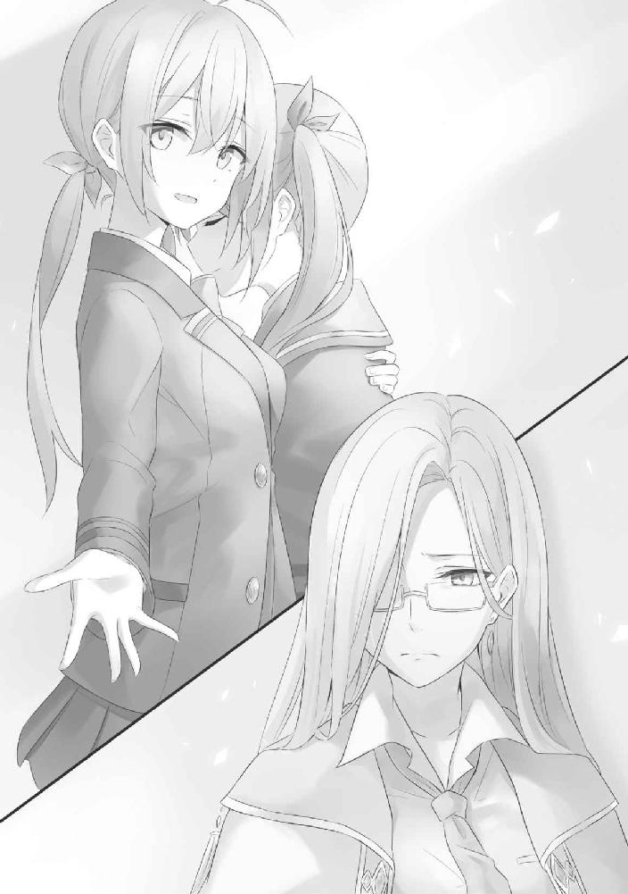
『七日目 昼』
本日は学校が休みでしたから、私は毎日足繁く通っていたパン屋にその日の昼間に訪れました。
今までは学校帰りに訪れるだけでしたが、休日の昼間となるとさすがにお客さんの数もそこそこあるようで、
「本日は相席でよろしいでしょうか？」
といつもの店員さんに提案をひとつされる程度には繁盛しているともいえました。
私が頷くと、窓際の席まで案内されました。
「......げ」
と、そこで私は声をあげていました。窓際に既に座っていた向こうの二人も同じような反応を私に見せていました。苦いような不味いような、そんな微妙な顔をしておられましたから。
「......イレイナさん」
「......どうも」
セラさんとヴィヴィアンさんでした。
私は「どうも」とだけ返して二人の反対側に腰を下ろしました。
店員さんにコーヒーとパンを注文して、待っている間に私はちらりとセラさんに目を向けました。昨日までの彼女と違い、今の彼女は前よりほんの少しですが顔色がよくなっているように見えます。
「もう薬は飲んでないんですか？」
私が首をかしげると、彼女はほんの少し頷いて、
「......もう薬の研究はやめたから。体調を崩す理由がないわ」
と。
結局、昨日の一件以来、ヴィヴィアンさんは魔法使いになれる薬の作成をきっぱり止めてしまったようです。
そんなものを作っても意味がないなどとアリアドネさんに──エリザベスさん自身に否定されてしまったのですから、当然といえば当然なのかもしれません。
それから私たちはぽつりぽつりと、少しずつ窓際の席に会話を咲かせるようになりました。
ヴィヴィアンさんは今まで薬の研究のために休日も費やしていたそうですが、これからはそういった事情が彼女に絡むこともありません。セラさんも同様に、もう研究の必要もないためにヴィヴィアンさんの家に泊まる必要もありません。彼女は昨日づけで家に戻ったそうです。
「要するに私はただの教師になりましたし、要するにセラはただの生徒になったというわけです」
「平凡ですねえ」
「ですが不幸になったという感触はありません」
「それはそれは。よかったです」
そんな風に、私たちがにわかに笑みを浮かべたあたりで、店員さんがパンとコーヒーを持ってきました。
「はいお待たせしましたー。あたしが丹精込めて作った最高のパンよ」と。
店員さんというより、アリアドネさんが、ですけれど。
私が与えた薬の効果が切れたアリアドネさんは既に若い姿ではなく、相応に歳をとった──大体三十代半ばくらいの見かけに戻っていました。
「ちなみにできたてよ。ちょっと熱いから気をつけて食べてね？」
くすりと笑みを浮かべるアリアドネさん改めエリザベスさん。優しいお母さんの笑みがそこにはありました。
「アリアドネさんもどうですか？」ちょうど四人がけの席ですし──と私はちょうど空いている椅子をぽんぽん、と叩いてみせましたが、彼女はゆるりと首を振りました。
「一緒にお食事したいのはやまやまだけど、あたしは仕事があるからね」と肩をすくめるエリザベスさん。「ま、ゆっくりしていってよ。うちのパンは絶品なんだから」
出会った直後の薄暗い彼女はもうそこにはいませんでした。
私は彼女の背中を見送りながら、パンに手を触れました。温かくて、ぬくもりのある熱さでした。
「そういえばセラさんはこれからどうするんですか？」私はパンをちぎりながら首をかしげました。「お母さんのお店、継ぐんですか？」
「それはこれから考えようかなって思う」彼女も同様にパンをちぎり、口に放り込みました。「でも、たぶん、きっと、お母さんの後を継ぐと思う」
ただ、学校でもっと勉強をしてから考えたいとも彼女は語りました。
普通でした。
普通に将来に対して思い悩むごくごく平凡な女子生徒がそこにはいました。
「いいと思います」
私は頷き、そしてセラさんの後を追うようにパンを口に放り込みました。
ふわりとした生地が口の中に溶けていきます。小麦の香りがじわりと広がって、嚙むたびに、思わず笑みを浮かべてしまうくらいに美味しいパンでした。
いつまでも食べていたいくらい。
「旨いですねえ......」
ぽつりとつぶやく私に、
「私はいつも食べてるけど......」
と眉を寄せて困ったように笑うセラさん。
「......私ここに通うことにします......」
何かを決意したように一人頷くヴィヴィアンさん。
こうして私たちは平凡な午後を過ごしたのでした。誰かと一緒にこうして食事を摂ることなんて、旅人としてはあまりにも平凡でない光景でしたけれど──。
けれど、普通じゃないことはたまにあるから殊更嬉しいのです。
あとがき
二〇一七年、某日。
「へへへ......そろそろ『魔女の旅々』五巻が流通し始めてきたところ......あれ？ なんだ？ 今回やけに購入ツイートが多いぞ......？ おや？ あれ？ ぜんぜん追いつけない......一体何が起こっているんだ......？ サイン本が速攻で売り切れた......？ え？ なに......ごと......？」
「定規くん」
「編集さん！ これは一体......」
「五巻の初動結構いいみたいだよ」
「ですよねえええええええやったああああああああああ！」
「あと重版するよ」
「まだ発売一週間くらいなのにですかあああ！ 五巻目にして初の即重版じゃないですかやったああああああああああ！」
「あとドラマＣＤとコミカライズの話来たよ」
「マジですかああああああああああああああああああああああああ！」
「あとうるさい」
「ああああああああああああああああああああああああああああああ」
「うるさい」
「はい」
ということで皆さまお久しぶりです。もしくは初めまして。白石定規です。
ここ最近は色々なことがありまして、というか本当に色々起きすぎまして、放心状態に陥りながら六巻の執筆作業をしておりました。五巻が発売してから......というより、五巻発売前後から色々と動きがあって、既刊フェアをやったりＧＡノベル三大ヒロインフェアが行われたりだとか、ありがたいことにコミカライズとドラマＣＤのお話を頂いたり。今まで、頭を抱えたり、あと頭を抱えたり、それから頭を抱えたり、時々人生について思い悩んでセンチメンタルに浸ったりしながら、このまま打ち切りになってしまうのではないかと危機感に見舞われたりしながら書いてきましたが、ようやく花開いた気がしました。やったぜ。
二〇一八年もぜひぜひこのまま頑張って参りたいと思います。厄年も終わったしね！ 厄年っつっても特に何もなかったけど。
それでは本題に入る前に、いつもの通り、『魔女の旅々』六巻の各話コメントに入りたいと思います。
がっつりネタバレ入っていますので、あとがきから先に読む方などは三ページ程度読み飛ばして頂けると幸いです。
●第一章『競箒』
魔法使いが行う競技ってなんじゃろと思った結果ほうきレースが思いつきました。ほうきレース連呼しすぎると文字数がアレな感じになる気配がしましたので競箒という名前をつけました。
五巻である程度一区切りしていたこともあり、六巻では新しいスタートということで、こんな話になりました。
●第二章『盗人と母』
反抗期の息子用決戦兵器・ゆるい感じの母。ゆるい感じの母がメインになる話でしたので終始ゆるふわな世界観になりました。六巻は殺伐とした話もあるので終始ゆるい話が一つくらいあってもいいかなと思いました。
●第三章『誠実な政治家』
昔の話なので朧げにしか覚えていませんが、まだ僕が小さかった頃にテレビでこんな説を唱えている特番が放送されていました。
実はジョン・Ｆ・ケネディは非常に弱気な男であった。そんな彼が大統領に当選できたのは、妻ジャクリーンが彼のために参謀となったからであった......というもの。
それによると、どうやら当時の白黒テレビ映えを狙ってスーツの色を黒にしたのも妻の指示であり、それ以外にも妻は夫が選挙で勝てるようにあらゆる手段を講じたようで。
大人になった今、当時のことが気になって調べてみても、残念ながら確たる証拠は得られませんでしたが、しかし記憶の中にあるジャクリーンとケネディの関係性を物語にしたいと常々思っていましたので、ようやく叶いました。けれどこの話で一番言いたかったことは「知られていなければ存在していないことと何ら変わりない」の一言です。いつもそんなことを思いながら、色々な人の中に存在していける作品にしたいと願っております。
●第四章『病と魔女とほうきの物語』
風邪をひくと弱気になっちゃいますよね。分かる分かる。しかし書き終えた原稿を読み直して「誰こいつ......」とは思いました。ドアをかちゃかちゃするシーンが個人的には気に入ってます。六巻は既存のキャラはなるべく出さない予定でしたが、ほうきは旅の供だしまあいいだろうというガバガバな考え方により六巻にも登場するに至りました。今後も普通に登場すると思います。
●第五章『呪われた奴隷』
ホープダイヤという名前の割に物騒な宝石があるそうで、調べてみると、これはどうやら所有者を死に至らしめ、そのせいで所在を転々としてきたという伝説のある呪いの宝石なのだそうな。もちろんただの噂話ですし、真に受けてなどはいないのですが、所有者を死に至らしめる呪いというものが妙に面白くて、これを擬人化したらどうなるだろうと考えた結果、持ち主を転々とする呪いというのはつまるところ、触れることが毒になる呪いなのではないだろうかと思い至り、こんな話になりました。尚、原稿を書き終わった頃にトドメにキスをする某ドラマが放映されてあわあわしました。
●第六章『こども魔女のイレイナさん』
イレイナがロリ化するネタ自体は結構前からぼんやり考えてはいたのですが、書き出す前に『魔女の旅々』が続刊出せなくなる事態になったり、同レーベルの『スライム倒して３００年～』で同じネタがあったので「おっとこいつぁボツにするしかねぇなぁ！」と永らくお蔵入りにしていたのですが、六巻のプロットを書いている際に「定規......私はいま、あなたの脳内に直接語りかけています......ロリ化の話を書きなさい......」という提案があり、なんやかんやで書くことになりました。
ロリイレイナのキャラデザが可愛くてこれはもはや世の中から戦争が消失するレベルであった。
●第七章『女心を知るためには』
サキュバスといえばファンタジーものにて定番の淫魔ですが、男だったら苦労するだろうなと思いつつネタをねりねり致しました。ところでいっつも思ってるんだけど淫魔はエロい夢を見させることが主な仕事なんだし、別にエロい格好する必要ないよね。
●第八章『アリアドネの七日間』
この話を思いついた時点で、まず悩んだのが時系列の扱い方でした。そもそも物語を順に沿って書くと学園に通い始めるまでにかなりのページ数を要する羽目になりそうでしたので。結構迷った挙句、結局時系列を少し砕いて前後を入れ替えて解消することにしました。イレイナが学校に通う話はいつか書きたいと思っていたのですが、中々機会に恵まれなかったために、結局六巻ラストの話となりました。
余談ですがイレイナの学生服のラフを三枚ほど頂いたのですが、あまりに可愛くて「この中から一枚だけ選べって言うんですか！ 選べないよぉ！」と泣きました。ニーソっていいよね......。
以上、各話コメントでした。
五巻が明るい話多めというか、ほぼほぼ明るい話でしたので、今回はバリエーション豊かな巻にしたいと思っておりました。僕個人としては百合要素も好きですがシリアスも好きだし、コメディももちろん好きだし、感動系の話も大好きです。そんな話を全て書ける『魔女の旅々』は思い入れが深いとともにずっと書いていたい作品でもあります。また続きを出せて本当によかった......。
今回は既存キャラとの関わりがほとんどありませんが、次巻以降の長編ネタで各々ゲストキャラとして再登場させたいなとは思っています。
シリーズも大分長くなりまして、気づけば六巻。次は七巻。もっと続けられるよう頑張ります。
話は変わりますが、二〇一七年の終わり頃に久々にちょっと運動しただけで腰を痛めて死にかけたので、二〇一八年は適度に運動する年にしたいと思います。ほんとにね......普段からあまり動かない仕事してるせいで体力がね......落ちるんですよね......。あと結構前にＳｕｉｃａを買ったんですが、スマホを買い替えたおかげでカードを改札にかざさなくてもスマホを当てるだけで簡単に改札通れるようになったんですよ！ 技術の発展ってすごーい！ おかげでカードがただのプラスチックの板になっちゃいましたがねぇ！ まあそもそも僕の最寄り駅はＳｕｉｃａ対応してないので元よりただのプラスチックの板だったんですけどね！ ハハハハ！
ではいつも通り謝辞に入りたいと思います。
あずーる様。
今回も可愛いイラストありがとうございます。毎回毎回多数のキャラデザをお任せして申し訳ありません......、でも最高に可愛いので今後とも末永くよろしくお願いいたします。あとイレイナの制服姿が可愛すぎてうっかり浄化されるところでした。ロリイレイナも可愛かったです。あと今回のゲストキャラではアリアドネが可愛くて好きです。......いっつも可愛いしか言ってねぇな......。
編集Ｍ様。
いつもありがとうございます。娘さん力作のイレイナのイラストを送って頂いた際はほっこりしました。嬉しかったです。実はスマホを買い替えたばかりでアドレス帳を引き継いでいなかったので「だ、誰だこれ！ ぼぼぼぼ僕の個人情報が漏洩しとる！ やっべぇ！」と仕事中に滅茶苦茶焦りましたが嬉しかったのは本当です。焦ったのもマジです。
関係者各位。
ＳＢクリエイティブ営業様、編集部の皆さま、書店員ならびに印刷所の皆さま。今回の出版に携わってくださった皆様。本当にありがとうございました。デビューして早三年が経とうとしていますが、本当に、巻を重ねるたびに、ライトノベルという媒体が沢山の人に支えられて出版できていることを実感します......。今後ともよろしくお願いいたします。
読者の皆様。
今後も『魔女の旅々』をよろしくお願いします！
十一月発売の八巻はドラマＣＤ同梱版も出ますのでぜひぜひ。
長くなりましたが、あとがきもこの辺にておしまいにして、僕は原稿に戻りたいと思います。また七巻でお会いしましょう。それでは！
AUTHOR
白石定規（しらいし じょうぎ）
買い替えた高反発マットレスのあまりの反発ぶりに腰をやられる。そんな人生。
ILLUSTRATION
あずーる
やっぱり太ももはいいですね！ 絶対領域is 正義!!
ファンレター、作品の感想をお待ちしています
＜送付先はこちら＞
ga-info@cr.softbank.co.jp
〈あて先〉
〒１０６－００３２
東京都港区六本木２－４－５
SBクリエイティブ（株）
ＧＡ文庫編集部 気付
「白石定規先生」係
「あずーる先生」係
http://ga.sbcr.jp/
ＧＡノベル
魔女の旅々６
白石定規
発行人 小川 淳
発行所 SBクリエイティブ株式会社
〒１０６－００３２
東京都港区六本木２－４－５
装 丁 AFTERGLOW
印刷・製本 中央精版印刷株式会社
２０１８年３月３１日 初版第一刷発行
２０１８年４月１５日 電子第一版発行
©Jougi Shiraishi ISBN 978-4-7973-9565-5